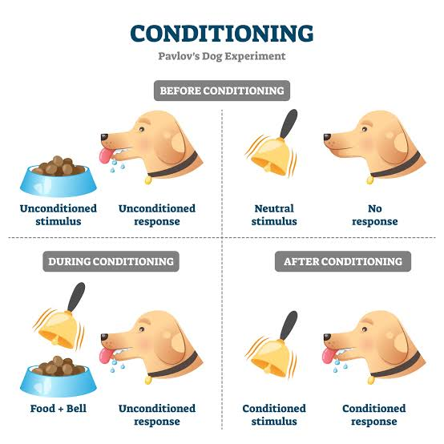
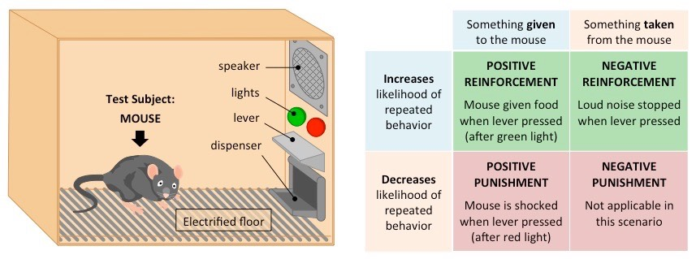

How do we learn from experience, how does the mind process information, and why do our thoughts, memories and decisions sometimes work differently from what we expect?
Imagine Maya during one ordinary school day.
Maya hears the notification sound from her phone and immediately feels the urge to check it.
The sound did not always produce that reaction.
How could an association have been learned?
Maya starts completing revision questions every evening because each completed set earns points in a study app.
Why might the consequence of a behaviour make that behaviour more likely to happen again?
Maya sees a successful student using flashcards every day and notices that teachers praise the student’s preparation.
Maya begins using flashcards too.
How can people learn by observing other people?
A week later, Maya tries to remember what she learned in class.
She remembers some information accurately, forgets other information and reconstructs parts of the lesson using what she already knows.
Why is memory not simply a perfect recording of experience?
Psychologists study both learning and cognition.
Learning asks how experience can produce changes in behaviour or knowledge.
Cognition asks how mental processes allow us to process, interpret, store and use information.
These processes are connected: what we learn can influence how we think, and how we think can influence what and how we learn.
This unit has two connected areas.
How do people learn, think and make decisions — and how can behaviour sometimes be changed?
We will investigate learning through association, consequences and observation.
We will also investigate how schemas, different modes of thinking and cognitive biases can influence cognition, behaviour and decision-making.
How does memory work, what influences it, and can it be improved?
Psychologists study cognitive processes such as attention, memory, perception, thinking and language.
In this course, our main cognitive process will be memory.
We will investigate memory from biological, cognitive, cultural and environmental perspectives and examine strategies that may improve it.
Part 1 asks how learning and thinking operate.
Part 2 takes one cognitive process — memory — and investigates it in greater depth.
Learning does not happen through one single process.
Psychologists have developed different explanations for how experience can influence behaviour.
Events that repeatedly occur together can become associated.
Eventually, one event may produce a response that originally depended on another event.
What happens after a behaviour can influence whether that behaviour becomes more or less likely to happen again.
People can learn by observing models, noticing what they do and seeing the consequences of their behaviour.
These processes provide different explanations for learning.
A major skill in this unit is identifying which learning process actually explains the behaviour in a particular situation.
If psychologists understand a process involved in learning, they can ask whether that process can be deliberately used to influence behaviour.
identify the behaviour
↓
identify the learning process
↓
change something relevant to that process
↓
observe whether behaviour changes
In this unit, we will investigate this especially through operant conditioning and social learning theory.
But a strategy sounding reasonable is not enough.
Psychologists still need evidence that behaviour actually changed.
Learning explains only part of human behaviour.
Psychologists also investigate how people organise information, make judgements and reach decisions.
Previous experience can help form mental frameworks that influence how new information is interpreted, remembered and used.
Some thinking is fast and automatic, while other thinking is slower and more deliberate.
Psychologists ask whether distinguishing these modes helps us understand thinking and decision-making.
Human judgement can show systematic patterns of error.
Psychologists investigate how cognitive biases can influence the decisions people make.
A schema may influence what information comes to mind.
Fast processing may rely on readily available information.
A judgement may then become systematically biased.
The theories are not interchangeable, but different cognitive processes can contribute to the same decision.
How can learning occur through associations between stimuli?
How can consequences influence behaviour — and how can operant conditioning be applied to change behaviour?
How can observing other people explain learning — and how can social learning be applied to explain and change behaviour?
How can schemas influence cognition and behaviour?
How useful is dual processing theory for understanding thinking and decision-making?
How can cognitive biases influence decision-making?
Psychologists study several cognitive processes, including attention, memory, perception, thinking and language.
To investigate a cognitive process properly, however, psychologists need to do more than describe what it is.
They can ask what happens biologically, whether models help explain the process, how culture and environment may influence it, and whether the process can be improved.
In this course, memory will be our main cognitive process.
We will use memory to investigate how one cognitive process can be understood from several different perspectives.
Imagine Maya attends a school event.
A week later, she tries to remember what happened.
Her memory is incomplete, some details are clearer than others, and parts of what she remembers may have been influenced by later information.
What biological processes or structures might contribute to Maya’s ability to form or retrieve the memory?
Can a cognitive model help explain how information was processed, stored or retrieved?
Could cultural experience influence what Maya notices, remembers or reconstructs?
Could something in Maya’s environment influence how well information is remembered?
Notice that these questions do not compete to find one universal cause of memory.
They investigate different influences on the same cognitive process.
How can biological factors influence memory?
Cognition depends on biological systems.
We will investigate the role of one or more biological factors in memory and consider what biological evidence can — and cannot — tell us about a cognitive process.
How useful are cognitive models for understanding memory?
A cognitive model is a simplified representation of how a cognitive process may work.
Models can help psychologists organise observations and generate predictions, but a useful model does not need to reproduce every detail of the real mind.
We will therefore ask not only what a model proposes, but also what the model helps explain and where its limitations appear.
How can culture influence memory?
People do not remember information in a cultural vacuum.
Experience, expectations and culturally shared knowledge may influence how information is interpreted and remembered.
We will investigate the role of one or more cultural factors in memory.
How can the environment influence memory?
Memory takes place under particular conditions.
Features of the environment may influence how information is encoded or retrieved.
We will investigate the potential influence of one or more environmental factors on memory.
Understanding memory also creates an applied question:
Can psychological knowledge help people remember more effectively?
understand the cognitive process
↓
identify something that may influence it
↓
apply a strategy
↓
measure whether performance improves
We will investigate one or more strategies designed to improve memory.
The important question is not simply whether a strategy sounds useful.
Psychologists need evidence that the strategy actually improves the cognitive process being measured.
What role can biological factors play in memory?
How valuable are cognitive models for understanding memory?
How can cultural factors influence memory?
How can environmental factors potentially influence memory?
What strategies might improve memory, and what evidence would show that they work?
Research in Learning & Cognition often uses an experiment.
An experiment allows psychologists to manipulate an independent variable and measure its effect on a dependent variable while attempting to control other influences.
In this unit, this gives us a way to investigate a question about learning or cognition rather than simply discussing it.
If we change one factor, does it produce a measurable change in learning, thinking or memory?
When you encounter a theory, study or scenario in this unit, do not stop at naming the topic.
Identify the specific behaviour, learning process, thought, decision or memory outcome.
Identify the relevant learning or cognitive process rather than simply naming a broad topic.
Explain the mechanism connecting the psychology to the behaviour or cognition.
Consider what was measured, what the research found and whether the evidence supports causation, association or a more limited conclusion.
Consider whether biological, cognitive, cultural or environmental factors could also contribute.
Identify the relevant process, apply a strategy and ask what evidence would demonstrate that it actually worked.
How do experience and mental processes shape what we learn, think, remember and do — and how can psychology help us understand or change these processes?
Every theory, study, activity and application in this unit helps us answer part of that question.
Classify each unfamiliar real-life example. Some cases are genuinely difficult — place them where you think they fit, then read the justification carefully.
Learning through association: how a neutral stimulus comes to trigger a response it never triggered before.

Pavlov's classical conditioning: a previously neutral bell becomes associated with food and eventually triggers salivation on its own.
Your phone buzzes — and you feel a jolt of anticipation. The buzz itself is just a sound. It only excites you because it has been paired, hundreds of times, with messages from people you care about.
Ivan Pavlov discovered the same mechanism by accident while studying digestion: dogs began salivating not just to food, but to signals that food was coming — the sight of the bowl, the footsteps of the technician, a tone. He called this classical conditioning: learning through association between two stimuli that occur together.
The recipe is always the same: a stimulus that already produces a reflex response is paired with a neutral stimulus. After enough pairings, the neutral stimulus produces the response on its own.
Using the phone-buzz example:
| Term | Definition | Example |
|---|---|---|
| UCS — Unconditioned Stimulus | Triggers a response naturally, with no learning | The exciting message |
| UCR — Unconditioned Response | The natural, unlearned reaction to the UCS | Anticipation/excitement at the message |
| NS — Neutral Stimulus | Produces no meaningful response until paired with the UCS | The buzz before pairing |
| CS — Conditioned Stimulus | The former NS, after pairings with the UCS | The buzz after learning |
| CR — Conditioned Response | Learned reaction to the CS alone | Jolt of anticipation at the buzz alone |
Sequence: NS + UCS → UCR (repeatedly) ... then ... CS alone → CR. The CR is usually similar to but weaker than the UCR.
To test whether emotional reactions such as fear could be conditionally learned in humans — specifically whether a child could be conditioned to fear a stimulus he did not originally fear.
“Little Albert B.”, a baby of approximately nine months at baseline, recruited from a hospital where his mother worked as a nurse. Albert was described as unusually calm and showed no fear of white rats, rabbits, dogs, masks or burning newspaper at baseline.
Emotional responses such as fear can be conditioned in humans through stimulus association. Phobias may therefore be learned in the same way as other behaviours — supporting a learning-based account of emotional problems.
Link: The study demonstrates exactly the mechanism taught above — a neutral stimulus became a conditioned stimulus producing a conditioned emotional response — showing that classical conditioning applies to human emotion, not just dog salivation.
Check your understanding of classical conditioning concepts.
For each unfamiliar scenario, work out the elements of classical conditioning. Commit to an answer before checking — the feedback explains the learned association in each case.
How consequences shape behaviour: reinforcement increases behaviour, punishment decreases it — and positive/negative means adding/removing.

An operant conditioning chamber illustrates how consequences can increase or decrease behaviour. Reinforcement increases behaviour; punishment decreases it. Positive means adding a stimulus, while negative means removing one.
Classical conditioning explains how we come to anticipate events. But much learning is about what happens after we act. Edward Thorndike observed that cats escaping a puzzle box stopped making ineffective movements and kept effective ones — actions followed by satisfying outcomes are stamped in. B.F. Skinner developed this into operant conditioning: behaviour operates on the environment, and its consequences determine whether it is repeated.
A real-life thread: a student answers a question in class and the teacher nods warmly. Next lesson, that hand goes up faster. A different student answers and is mocked by classmates. That hand stays down. Same behaviour, opposite futures — because the consequences differed.
Two things determine the type of consequence:
Positive means adding a stimulus; negative means removing one. Reinforcement increases behaviour; punishment decreases it.
| Add a stimulus (+) | Remove a stimulus (−) | |
|---|---|---|
| Behaviour increases | Positive reinforcement — Praise after studying increases studying. | Negative reinforcement — A seatbelt alarm stops when you buckle up, increasing buckling. |
| Behaviour decreases | Positive punishment — A fine after speeding reduces speeding. | Negative punishment — Losing phone access after late-night scrolling reduces scrolling. |
Notice that in every case the classification depends on two facts: what happened to the stimulus (added/removed), and what happened to the behaviour (more/less). Both facts must be checked before labelling.
Check your understanding of reinforcement and punishment.
Classify each unfamiliar consequence into one of the four categories. For each item, identify both the behaviour change and what happened to the stimulus.
Moving beyond definitions: how operant conditioning is deliberately applied to increase or decrease target behaviors in real settings.
Work through this page from top to bottom. Read each section and complete the written activities as you reach them.
What to complete:
All students
HL students only
Write all your answers in ONE Word document. Use the headings and question numbers to organize your work.
Write your answers before revealing the model answers. Use the models afterward to check your understanding.
ManageBac: Upload ONE completed Word document (.docx). You do not need to carry out the behavior-change intervention or create your own graphs.
Knowing that consequences shape behavior means consequences can be engineered. A deliberate behavior-change plan has four steps:
The same logic applies to increasing behavior (such as studying or exercise) and decreasing it (such as late-night phone use or interruptions).
Write your own answer in your Word document before revealing the explanation.
Scenario. A student regularly checks their phone while studying. They want to reduce phone checking and increase the amount of time they spend studying without distractions.
Your task: Design a proposed behavior-change plan using operant conditioning. Answer the following six questions in your Word document. This is a proposed intervention, not a practical investigation you must carry out.
| Question | Instructions |
|---|---|
| 1. Target behavior | Identify the specific, observable behavior you want to change. |
| 2. Baseline | Explain how you would measure the behavior before introducing your plan. |
| 3. Strategy | Identify the consequence you would introduce or remove. Explain exactly when it would occur. |
| 4. Psychological explanation | Identify the relevant type of reinforcement or punishment and explain how the consequence is intended to change the behavior. |
| 5. Measuring success | Explain what data you would collect to determine whether the behavior changed. |
| 6. Evaluation | Identify one realistic limitation of your plan, explain why it matters, and suggest an improvement. |
Complete your own answers before revealing the model.
Compare your plan with the model. Check whether your behavior is measurable, your consequence is clearly explained, and your evaluation identifies a realistic limitation.
Paper 3 Practice — HL Students Only
Psychologists need evidence that a behavior-change strategy actually works. Graphs help researchers identify patterns, compare results, and evaluate what the findings support.
In this activity, you will learn to interpret two types of graphs and practice answering Paper 3-style questions.
HL students: Answer both questions in the same Word document as your earlier written work.
A line graph shows how a variable changes across an ordered sequence, usually time.
It makes trends, increases, decreases, and periods of stability easy to identify.
Connecting data points does not prove exactly what happened between measurements or establish what caused a change.
A student recorded how many distraction-free study sessions they completed each week. During Weeks 1–2, no rewards were offered. From Week 3 onward, the student received a preferred reward after completing each study session.
Teacher-created example data. Not findings from a published study.
Paper 3 Question 2: Pattern → Numerical Evidence → Interpretation → Conclusion
Analyze the findings shown in Graph 1 and state a conclusion about the effectiveness of the reward system.
1–2 marks: Limited or inaccurate analysis; attempted but irrelevant conclusion.
3–4 marks: Accurate but insufficiently developed analysis; conclusion not clearly linked to findings.
5–6 marks: Detailed analysis with a conclusion explicitly linked to the findings.
A bar graph compares numerical values across separate categories or groups.
It makes differences between categories easy to compare.
A bar graph may summarize complex data into a small number of values, so important information about individual observations may not be visible.
Researchers compared the average number of distraction-free study sessions completed per week by two groups of students. One group received rewards after completed sessions; the other did not.
Teacher-created example data. Not findings from a published study.
Paper 3 Question 1: Issue → Source Detail → Consequence for Interpretation
Explain one issue that limits the interpretation of the data in Graph 2.
Identify ONE genuine issue, describe it using a specific feature of the source, and explain why it limits interpretation.
Only the first issue is credited. Naming several limitations is less effective than explaining one properly.
SL students — Your Word document must include:
HL students — Your Word document must include:
Upload ONE Word document (.docx) to ManageBac.
Noah and Mia respond very differently to the same class rules. Use conditioning to explain what is happening and evaluate the teacher’s conclusion.
Scenario
A school wants students to arrive to class on time.
At first, teachers introduce a reward system. Each time a student arrives before the bell, they receive a point. Ten points can be exchanged for a homework pass. During the first few weeks, lateness decreases.
However, one student, Noah, begins arriving early mainly because he wants the homework passes. When the school suddenly stops giving points, Noah starts arriving late again.
Another student, Mia, has a different experience. Several times she arrives late and walks into class just as the teacher loudly criticises late students in front of everyone. After a few weeks, Mia begins to feel anxious whenever she hears the warning bell before class, even on days when she is already near the classroom.
“The reward system permanently taught students to be punctual, and Mia chooses to feel anxious because she knows she might be criticised.”
— the teacher’s conclusion
The prompt: Using your knowledge of conditioning, explain the students’ behaviour and evaluate the teacher’s conclusion.
Students need to:
Keep this concise. Do not solve the whole scenario here.
Noah → operant conditioning: his early arrival is followed by points, and his lateness returns when the points stop — behaviour shaped by consequences.
Mia → classical conditioning: the warning bell becomes associated with public criticism and begins eliciting anxiety on its own.
For each conclusion, identify the scenario evidence that led you there.
DO NOT JUST LABEL THE PROCESS. The useful pattern is:
DETAIL → PSYCHOLOGY → HOW / WHY
Noah’s early arrival is behaviour followed by a desirable consequence: points exchangeable for a homework pass. This is positive reinforcement — positive because something is added, reinforcement because the behaviour becomes more likely.
When the points stop, the consequence maintaining his punctuality disappears, so the behaviour is no longer strengthened in the same way — which explains his return to lateness and challenges permanence. Short-term improvement while the reward runs does not establish lasting change.
Map the sequence: NS (warning bell before conditioning) → UCS (public criticism) producing UCR (anxiety/distress) → repeated association → CS (warning bell after association) eliciting CR (anxiety to the bell, even near the classroom).
The conditioned response can be elicited automatically rather than deliberately chosen: Mia may know she is unlikely to be criticised, yet the bell still triggers the learned response. Classical conditioning concerns associations and elicited responses, not choices.
“Permanently taught students to be punctual” — too strong. Noah’s return to lateness suggests behaviour maintained by the added consequence rather than permanently internalised.
“Mia chooses to feel anxious” — poorly supported. Her anxiety fits a conditioned emotional response to the bell, not a deliberate choice.
Qualification: conditioning need not be the ONLY influence — social pressure, habit, mood or expectations could also contribute.
☐ identifies operant conditioning for Noah and classical conditioning for Mia
☐ uses specific scenario details for each process
☐ explains how reinforcement operated and why its removal changed Noah’s behaviour
☐ applies the NS/UCS/UCR/CS/CR sequence to Mia
☐ explains the automatic rather than chosen conditioned response
☐ evaluates both parts of the teacher’s conclusion with qualification
Noah’s behaviour can be explained through operant conditioning because arriving early was followed by a desirable consequence. Receiving points that could be exchanged for a homework pass is positive reinforcement: something desirable was added after punctual behaviour and the behaviour increased. When the school stopped providing the points, Noah no longer received the consequence that had been strengthening his early arrival, which helps explain why his lateness returned. Therefore, the teacher’s claim that the system permanently taught punctuality is too strong.
Mia’s response is better explained through classical conditioning. The teacher’s loud criticism can naturally produce anxiety, while the warning bell would not originally produce the same response. After the bell and the situation surrounding lateness repeatedly became associated with criticism, the bell could become a conditioned stimulus that triggers anxiety on its own. Mia therefore does not necessarily choose to become anxious; the response may be automatically elicited by the learned association.
The scenario consequently demonstrates two different forms of learning, but it does not show that conditioning is the only factor influencing either student.
Learning by watching others: the processes of observational learning, modelling, identification and vicarious reinforcement — plus the research that made the theory famous.
A younger brother has never crashed a car, never been fined and never driven at all — yet he already drives like his older sister: same mirror-checking habits, same shortcuts. He learned by watching.
Albert Bandura argued that classical and operant conditioning alone cannot explain how rapidly humans acquire complex social behaviour. Much of what we know — speech, manners, aggression, fashion, study habits — we learn by observing models. Social Learning Theory (SLT) proposes that learning can occur through observation and imitation, even with no direct reinforcement of the learner.
The four processes of observational learning
Notice the behaviour.
Remember what was observed.
Be capable of performing it.
Have a reason to perform it.
Observation alone is not enough. For learning from a model to occur, four processes must operate:
SLT keeps conditioning concepts (reinforcement matters) but places them inside a cognitive framework: expectations, memory representations and self-perceptions mediate whether observation changes behaviour. That makes SLT a bridge between the conditioning unit-section and the cognition section.
Acquisition is learning a behaviour through observation; performance is actually demonstrating it. The four processes above describe how a behaviour is acquired. Whether it is then performed depends on the observer's motivation: the consequences they expect — direct reward, vicarious reinforcement or punishment — and whether they have the opportunity to reproduce it.
This is why observed imitation is good evidence that learning has taken place, while the absence of imitation is not evidence that learning has not. A child may have acquired a behaviour completely and simply have no reason, or no opportunity, to perform it. Researchers therefore read performance as evidence of learning only when the observer is motivated and able to act.
Children observe either an adult behaving aggressively toward an inflatable doll or an adult playing quietly with other toys.
Attempt both questions before revealing either model answer — commit to your prediction first.
To test whether children would imitate aggressive behaviour demonstrated by an adult model, and whether the model's sex and the child's sex affected imitation.
72 children (36 boys, 36 girls) aged roughly 37–69 months from Stanford University nursery school.
Note: the 1961 experiment varied only what the child observed — an aggressive model, a non-aggressive model or no model. Children were not rewarded or punished for their own behaviour, and the consequences given to the model were not manipulated. Vicarious reinforcement was investigated in Bandura's later studies, not in this experiment.
The experiment demonstrated that children can acquire and reproduce aggressive behaviours through observation. This supports social learning theory by showing that direct reinforcement of the learner is not necessary for imitation to occur.
These studies came later and tested new questions of their own; their findings belong to the follow-up research rather than to the 1961 experiment.
Bandura, Ross and Ross (1963) extended this research by investigating children's imitation of aggressive models presented through film and cartoons. Their findings showed that observational learning was not limited to watching a model physically present in the room.
In later research, Bandura (1965) investigated how the consequences experienced by a model affected children's behaviour. Children were less likely to reproduce aggressive behaviour when they had observed the model being punished. However, when offered incentives to reproduce the behaviour, children could demonstrate actions they had previously observed.
This is the acquisition–performance distinction in action: the children had learned the actions, but whether they performed them depended on what they expected would happen next.
Link: Every stage of the experiment maps onto the theory: attention (distinctive display), retention (novel phrases reproduced later), reproduction (children physically capable), motivation and identification (same-sex advantage). It remains the classic evidence that learning can be observational.
Check your understanding of Bandura's social learning theory.
Put the stages of observational learning into the correct order, then check how the mechanisms connect.
Applying modeling, identification, and reinforcement processes to explain why behaviors spread — and to design interventions that change them.
Social Learning Theory helps explain how people acquire behaviors by observing others, even without experiencing the consequences themselves.
A student begins using a new slang phrase. Friends notice it, remember it, and may copy it, particularly if they admire the student or expect social approval.
A child watches a parent react fearfully to dogs and later avoids dogs themselves. The child may have learned a fearful response through observation without being bitten.
Characters and influencers can act as symbolic models. Viewers may imitate observed behaviors, depending on identification, expected consequences, and opportunities to reproduce them.
A student sees a classmate receive praise for helping someone. Observing that positive consequence may increase the student’s motivation to behave similarly.
Evidence note: Bandura, Ross, and Ross (1963) found that children imitated aggressive models shown on film and in cartoons, which shows that observational learning does not require a model who is physically present. It does not show that media exposure inevitably produces aggression.
These examples describe possible mechanisms rather than guaranteed outcomes. Learning and performance are also distinct: an observer may acquire a behavior and still not reproduce it.
Apply Your Understanding
A student watches a popular classmate begin volunteering at school. Several other students start volunteering, but some do not.
Using Social Learning Theory, explain why students might respond differently to the same model.
Think about attention, identification, motivation, and the difference between learning and performing a behavior. Answer before revealing the model.
Students who notice and admire the classmate may be more motivated to imitate the volunteering behavior, particularly if they expect positive outcomes. Others may pay less attention, identify less strongly with the model, or see little personal benefit. Some students may understand how to volunteer but lack the opportunity or motivation to participate. SLT therefore explains why observing the same model does not guarantee identical behavior.
If people can learn through observation, psychologists can design interventions that make helpful behaviors easier to observe, remember, and reproduce. Four principles can guide this process.
Four Principles for Designing an SLT Intervention
Select someone credible and relatable to the intended audience.
Make the desired behavior clear, observable, and possible to remember.
Allow observers to see positive outcomes associated with the behavior.
Provide opportunities, skills, and motivation to reproduce the behavior.
These principles can inform an intervention, but they do not guarantee that behavior will change.
Interventions in Practice
Reading role models. The intervention aims to make reading visible through models students respect, targeting attention and identification.
Senior students mentoring younger students. Older peers demonstrate study routines that are attainable and easy to observe, targeting attention, retention, and reproduction.
Anti-bullying programs. Influential students are trained to defend victims publicly, so bystanders see prosocial behavior being respected, targeting vicarious reinforcement.
Workplace safety demonstrations. Respected staff demonstrate safe procedures step by step, and observers see safe practice being approved, targeting attention, retention, and reinforcement.
Each example is designed to target a particular mechanism. Whether an intervention actually works still has to be demonstrated.
Apply Your Understanding
A school hires a celebrity to promote reading, but students’ reading habits do not change. Later, a Year 13 student starts a book club, and reading participation increases.
How could Social Learning Theory explain these different outcomes? What additional information would you need before concluding that identification caused the difference?
Separate what the scenario establishes from what you would need to find out. Answer before revealing the model.
Students may identify more strongly with a relatable peer than a distant celebrity, making them more likely to attend to and imitate the model. However, the scenario does not establish that identification caused the increase. The book club may also have provided more opportunities to read, greater social encouragement, or easier access to reading activities. To investigate identification, researchers could ask students how strongly they related to each model and examine whether this was associated with changes in reading behavior.
Checking Whether an Intervention Works
A school introduces peer role models to encourage students to read more frequently.
What would you measure before and after the intervention? Why would an increase in reading alone not prove that the intervention caused it?
Think about measurement and comparison before revealing the model.
Researchers could measure students’ reading frequency or time spent reading before introducing the peer models, then measure the same behavior afterward. An increase would suggest improvement, but other influences, such as teacher encouragement or new reading assignments, could explain the change. A suitable comparison group would strengthen the evaluation.
Learning a behavior does not guarantee performing it. An observer may remember what was demonstrated but lack the motivation, confidence, ability, or opportunity to reproduce it.
Competing models. Other models may show the opposite behavior more often or more vividly, so one demonstration may not be the strongest influence on what students observe.
Motivation. Observers may acquire a behavior but see little reason to perform it. Expected consequences shape whether learning becomes action.
Capability and opportunity. Demonstration does not supply skills the observer cannot yet perform, and imitation requires a chance to try the behavior.
Ethical considerations. Deliberately exposing people to models of harmful behavior is difficult to justify outside controlled research, which limits what an intervention can do.
Unsuccessful imitation is therefore not evidence that observational learning did not occur. The behavior may have been learned and not performed.
SLT keeps reinforcement, but it places learning inside the observer. Attention determines what is noticed, retention depends on a stored mental representation of the behavior, and performance depends on expected outcomes. Reinforcement works vicariously: the observer forms an expectation about what will happen to them by watching what happens to the model, and anticipated consequences guide whether they act. Because attention, representation, expectation, and anticipated consequences all stand between the model and the behavior, SLT goes beyond a simple stimulus–response account and bridges behaviorist and cognitive psychology.
Apply social learning theory to a school scenario.
Why do several students begin copying Hana while Daniel, who watches her just as often, does not? Use Social Learning Theory to explain the difference and evaluate the teacher’s conclusion.
Complete both activities in ONE Word document (.docx).
1. Scenario Application
Explain Hana’s and Daniel’s different behaviors using Social Learning Theory, and evaluate the teacher’s conclusion.
2. Paper 2 — Section B (15 marks)
Evaluate Bandura’s research using at least two of the specified psychological concepts.
Write your responses before revealing the model answers. Upload your completed document to ManageBac.
Scenario
A secondary school wants students to participate more actively in lessons.
In one Year 9 class, a confident and popular student named Hana regularly answers questions, explains her thinking and admits when she makes mistakes. The teacher responds positively and often praises Hana for explaining her reasoning rather than simply getting the correct answer.
Over the next month, several students begin copying Hana. They raise their hands more often, explain their answers in a similar way and become more willing to admit mistakes.
However, another student, Daniel, watches Hana just as often but rarely participates. Daniel says that Hana is “nothing like me” and worries that classmates will laugh if he gives a wrong answer.
“Everyone who observes a successful model will eventually copy that person.”
— the teacher’s conclusion
The prompt: Using your knowledge of Social Learning Theory, explain the students’ behavior and evaluate the teacher’s conclusion.
Build your explanation around three questions:
Use specific details from the scenario to explain the relevant psychological processes.
Develop a connected argument rather than answering the three questions separately.
Complete your response before revealing the model answer. Compare your explanation and evaluation with the model.
Social Learning Theory can explain why several students begin behaving like Hana. Hana acts as a model whose behaviour is visible to the class. Students can attend to how she participates, retain a mental representation of the behaviour and later reproduce it themselves. Because Hana is popular and confident, some students may also identify with her, making imitation more likely.
Vicarious reinforcement may further increase imitation. Students see Hana receive praise for explaining her reasoning, so they observe a positive consequence without having to experience it themselves. This can increase their motivation to behave similarly.
Daniel shows why observation does not automatically produce imitation. Although he watches Hana, he reports weak identification with her and expects classmates might laugh if he makes a mistake. These anticipated consequences may reduce his motivation to perform the observed behaviour. He may therefore have learned what Hana does without reproducing it.
The teacher’s conclusion is consequently too absolute. Social Learning Theory predicts that observational learning and imitation depend on processes such as attention, retention, reproduction, motivation and identification. Observing a successful model can influence behaviour, but observation alone does not guarantee that everyone will copy the model.
HL Exam Skills — Paper 2
Social Learning Theory | Research Evaluation | 15 marks
In Paper 2 Section B, you critically discuss a research study using psychological concepts. You must refer to specific evidence from the source material and develop an argument rather than simply describe the study.
Adapted research summary: Bandura, Ross, and Ross (1961)
Psychologists Albert Bandura, Dorothea Ross, and Sheila Ross investigated whether children would imitate aggressive behavior after observing an adult model.
The study involved 72 children, aged approximately 3–6 years, from Stanford University’s nursery school. There were equal numbers of boys and girls. Before the experiment, the children were assessed for their existing levels of aggression. Researchers used these assessments to help distribute children across the experimental conditions.
Children were assigned to one of three conditions:
The researchers also varied whether the adult model was male or female.
After exposure to the model, children experienced a mildly frustrating situation in which attractive toys were made unavailable. They were then taken to another room containing toys, including a Bobo doll. Their behavior was observed and recorded using predefined categories, including imitative physical and verbal aggression.
The researchers found that children exposed to the aggressive model displayed substantially more imitative aggressive behavior than children in the non-aggressive and control conditions. Some differences were also observed according to the sex of the child and the adult model.
The researchers concluded that aggressive behavior could be acquired through observation without requiring direct reinforcement of the child.
Adapted for classroom practice from Bandura, Ross, and Ross (1961), “Transmission of aggression through imitation of aggressive models.” This is not an official IB examination source.
Paper 2 — Section B [15 marks]
Discuss the research study presented in the source material with reference to at least two of the following concepts:
Bias · Causality · Measurement · Responsibility
Remember: Concept → Source Evidence → Analysis → Evaluation
Bandura, Ross, and Ross’s (1961) experiment provides evidence that children can acquire aggressive behavior through observation. However, the strength of its conclusions depends on how effectively the research establishes causality, measures aggression, and handles the responsibility of studying vulnerable children. These concepts help evaluate both the contribution and the limitations of the study.
The concept of causality concerns whether one variable produces changes in another. Bandura and colleagues used an experimental design in which children were exposed to an aggressive model, a non-aggressive model, or no model. This allowed the researchers to compare subsequent behavior across different conditions. The use of a control group strengthened the investigation because it provided a comparison for behavior occurring without exposure to an adult model. Furthermore, assessing children’s existing aggression before the experiment helped reduce the possibility that pre-existing differences explained the results.
Children who observed the aggressive adult subsequently displayed more imitative aggressive behavior. This supports the interpretation that exposure to an aggressive model contributed to their behavior. Nevertheless, the study does not establish that observational learning alone explains aggression outside the experiment. The artificial setting, unusual inflatable doll, and immediate observation period limit what can be concluded about whether children would imitate aggression in ordinary social situations or over longer periods. Thus, the experiment offers relatively strong evidence of a short-term causal effect under controlled conditions, but its broader implications require caution.
The concept of measurement also raises important questions. The researchers recorded observable behaviors, including physical and verbal aggression, using predefined categories. This made it possible to compare participants systematically rather than relying entirely on general impressions. In particular, the observation of behaviors resembling those demonstrated by the adult provided evidence relevant to imitation.
However, aggression is a complex psychological construct. Striking an inflatable doll in a playroom may not have the same meaning as deliberately harming another person. The measurement therefore captures particular observable aggressive actions rather than every aspect of real-world aggression. Some children may also have interpreted the adult’s actions as acceptable play within the experimental setting. Consequently, the recorded behavior is useful evidence of imitation, but its construct validity as a measure of everyday aggression is less certain.
The study can additionally be considered through responsibility. Exposing young children to aggressive behavior raises ethical questions, particularly because the children could not provide fully informed consent themselves. Researchers must consider whether the scientific benefits justify possible distress or undesirable behavioral effects. This does not invalidate the findings, but it highlights the responsibility involved in studying behavior among vulnerable participants.
Overall, Bandura and colleagues provided important experimental evidence that observing an adult can influence children’s immediate aggressive behavior. The controlled comparisons strengthen causal interpretation, while systematic observation provides measurable evidence of imitation. Nevertheless, limitations concerning the meaning of the measured behavior, the artificial setting, and ethical responsibility restrict how confidently the findings can be generalized. The study therefore supports observational learning as one explanation of aggression, rather than a complete explanation of aggressive behavior.
This is an illustrative high-markband response, not an officially graded IB answer.
Your Word document must include:
Upload ONE Word document (.docx) to ManageBac.
How organized mental frameworks built from experience shape what we notice, understand and remember — usually efficiently, sometimes inaccurately.
How schemas work
Knowledge acquired through earlier experiences.
An organized mental framework.
Predictions about what is likely.
Information is selected and interpreted.
Influences understanding, memory, or actions.
A schema is an organized mental framework representing knowledge about an object, situation, person or event, built up through experience.
Your restaurant schema contains the usual sequence — being seated, menus, ordering, a server, paying at the end — plus typical roles (server, chef, customer) and typical sequences. You have never been to most restaurants before, yet you know how to behave in a new one almost instantly. One framework, applied across countless specific cases.
Schemas matter because they:
Schemas are not fixed. As people encounter new experiences, they can interpret information using their existing schemas or modify those schemas when their expectations no longer fit.
Jean Piaget described two important processes involved in adapting knowledge: assimilation and accommodation.
Assimilation occurs when new information is interpreted or incorporated using an existing schema without substantially changing that schema.
Example: You visit a restaurant you have never been to before. A server gives you a menu, takes your order, and brings your food. Although the restaurant is unfamiliar, your existing restaurant schema helps you understand what is happening and how to behave.
Accommodation occurs when an existing schema must be modified, or a new schema developed, because the new experience cannot be adequately understood using existing expectations.
Example: You visit a restaurant where customers order using a touchscreen, collect their own food, and leave without interacting with a server. Your usual restaurant schema does not fully match this experience, so you adjust your expectations to recognize that restaurants can operate in different ways.
Assimilation: New experience → Existing schema
Accommodation: New experience → Schema modified or developed
The distinction concerns how information is processed and whether the schema changes — not simply whether an experience is familiar or unfamiliar. An unfamiliar situation can still be assimilated when existing expectations are adequate; accommodation happens only when the existing schema cannot adequately handle the new information.
Answer both parts before revealing the model answer.
Maya has always traveled on buses where passengers pay the driver when boarding.
A. Maya takes a bus in another city and immediately knows where to pay because the system works in the same way. Explain which process is illustrated.
B. Maya later visits a city where passengers must purchase tickets at a machine before boarding. After initially expecting to pay the driver, she learns the new system and changes her understanding of how bus travel can work. Explain which process is illustrated.
A — Assimilation: Maya interprets the unfamiliar bus journey using her existing schema. The experience fits her established expectations, so she does not need to substantially modify them.
B — Accommodation: Maya encounters a system that does not fit her existing expectations. She modifies her understanding to recognize that payment procedures differ between bus systems. This represents accommodation because her existing schema is adjusted in response to new information.
Assimilation and accommodation help explain how schemas can remain useful while also adapting to new experiences. Assimilation allows people to interpret information efficiently using existing knowledge, while accommodation allows that knowledge to change when it no longer adequately explains an experience.
These processes concern the development and modification of schemas. They should not be confused with the separate question of how existing schemas may influence memory accuracy.
The five stages above form one continuous process, not five separate steps. Walk through it with a noisy party: previous parties built a conversation schema; entering the new party you expect fragments of speech amid music; this expectation drives interpretation — your brain fills missing sounds using the schema, so you “hear” sentences that were partly masked; the output is both cognition (understanding despite noise) and behavior (turning your better ear toward the speakers).
The same chain explains why you can read messy handwriting (“I cpuld raed tihs”), why a doctor sees symptoms where you see trivia, and why an unfamiliar culture's routines feel confusing — no schema exists yet to guide processing.
Notice where the chain can fail: the schema supplies whatever the situation usually contains, whether or not it is present this time. That is the mechanism behind both efficient understanding and confident error.
Imagine waiting briefly in an unfamiliar office. Later, someone asks you to describe everything you saw.
Commit to a prediction before revealing the model answer.
To test whether schemas shape what people notice, remember and mistakenly report about a real place. In particular, would participants “remember” objects that an office should contain but that were not actually there?
Brewer and Treyens argued that the office schema did two things: it guided what participants attended to and encoded, and it supplied plausible content when memory was incomplete. Memory for a familiar kind of place is therefore partly a reconstruction from knowledge rather than a replay of a recording.
What the study shows: in this setting, expectations measurably biased what people reported — most clearly in the intrusion of expected-but-absent objects such as books.
What it does not show: that schemas make memory generally unreliable, or that every error came from schema-driven reconstruction. Much of what participants reported was accurate, and the design cannot establish whether a false report arose while viewing, while storing, or while retrieving.
Observation versus explanation: the observation is that participants reported books that were not there. The explanation is that schema-based reconstruction filled a gap. The data are consistent with that explanation, but they do not prove it.
Both faces come from the same mechanism. A schema is a shortcut, and a shortcut is useful precisely because it ignores some detail.
Useful — schemas help people:
Distorting — expectations can:
This does not mean that schemas make memory inaccurate. Most of the time the shortcut works: the expected object usually is there, and the schema speeds up recognition of what is present. Inaccuracy is a risk that rises under particular conditions — brief exposure, ambiguous information, delayed testing, leading questions — not an automatic consequence of having a schema.
Answer both questions before revealing either model answer.
Apply schema theory to a real-world scenario.
Before each answer is revealed, commit to a prediction from schema theory. Then check whether the evidence matched your reasoning.
Why memory is better described as an active reconstruction than a recording — and how existing knowledge can shape what comes back when we remember.
How reconstruction works
An event or piece of information is encountered.
Some of that information is processed into memory.
Information is maintained over time.
Remembering may be guided by existing knowledge, expectations and available cues.
The remembered account is assembled from retrieved information and may differ from the original experience.
Remembering is not simply replaying an exact recording. Existing knowledge and expectations can influence how information is retrieved and reconstructed. This does not mean every memory is inaccurate.
This sequence summarizes one important process. It is not a complete model of every memory.
Retell last weekend to three different people and the versions differ — shortened here, expanded there, shaped by what each listener asks about. Nobody is lying; remembering is an active process, and it usually produces a broadly accurate account.
Bartlett described remembering as effort after meaning: we retain fragments of experience together with the knowledge frameworks — schemas — built from earlier experience. At retrieval we assemble an account from those fragments, our knowledge, our expectations and the cues available. That is why memory is described as reconstructive rather than reproductive.
Four outcomes are worth separating:
Reconstruction therefore supports meaningful remembering as well as producing errors. Filling gaps is what makes fragmented experience usable. Reconstruction does not mean that memories are rebuilt from scratch every time, or that accurate remembering is impossible. The five stages above are a simplification, and much of the evidence discussed here comes from laboratory tasks rather than everyday events.
To investigate whether memory for unfamiliar material is changed by existing knowledge and cultural expectations — that is, whether remembering is reconstructive rather than a literal copy of what was presented.
Bartlett argued that participants made sense of the story using knowledge and expectations drawn from their own culture, so remembering involved reconstruction rather than reproduction. The changes were not random: they moved consistently toward familiar, coherent, culturally expected content.
Observation versus interpretation: the observation is that reproductions differed from the original in predictable directions. The interpretation is that schemas guided that reconstruction. The data are consistent with the interpretation, but they do not prove that a particular schema caused a particular change.
Gauld and Stephenson argued that Bartlett's open-ended interview style invited error. Using the same story, they compared ordinary instructions with instructions emphasizing strict accuracy, and found that the accuracy emphasis reduced error rates.
What this qualifies: if distortion falls when people are told that accuracy matters, the amount of error is at least partly condition-dependent. Bartlett's results do not show that reconstruction inevitably produces large inaccuracies. But reduced is not eliminated: errors still occurred, and nothing here shows that careful instructions guarantee accurate memory.
Evaluating their method: the comparison was controlled and used Bartlett's own materials, which strengthens the case that instructions mattered. However, the setting was artificial, and instructions may change how carefully people report a memory rather than what they actually remember. Replications have also been mixed — Bergman and Roediger (1999) found Bartlett-style distortions regardless of whether instructions were lenient or strict — so the effect is best treated as evidence that distortion varies with conditions, not as a refutation of Bartlett.
Commit to an answer before revealing the model answer.
Reach a conclusion that accounts for both studies before revealing the model answer.
Check your understanding of how Bartlett's retellings changed.
Memories are not always recalled exactly as events occurred. In this activity, compare an original detail with how it was later remembered. Identify what changed and decide which form of reconstruction best explains the difference.
How to complete the activity
Three forms of reconstruction
Information is removed or simplified. A person recalls fewer details than were originally presented.
Certain details become more prominent. A particular feature is emphasized or exaggerated in the recollection.
Information is changed to fit existing knowledge or expectations. An unfamiliar detail is transformed into something more familiar or meaningful.
These categories describe patterns in recollections. They help you analyze what changed, but they do not prove that a particular schema caused an individual memory error. Conventionalization, where unfamiliar content is reshaped toward familiar cultural expectations, is one form of assimilation.
The retellings are teaching examples modeled on reconstruction patterns reported by Bartlett (1932), not verbatim participant transcripts.
Can schemas explain why Lena confidently remembers events that never happened? Develop an argument using psychological theory, evidence, and evaluation.
Teacher-created exam-style practice, not an official IB examination question.
Your Challenge
Read Lena’s experience and write one developed response explaining how schemas and reconstructive memory could account for her recollections.
Your answer must:
Submission: Write your response in ONE Word document (.docx) and upload it to ManageBac.
Complete your own response before opening the model answer.
Lena’s Scenario
Lena visits a café she has never been to before. The café works in an unfamiliar way: customers order from a touchscreen, collect their own drinks, and leave without speaking to a waiter.
Later that evening, Lena tells a friend about the visit. She confidently remembers being handed a menu by a waiter, and she says that the waiter brought her drink to the table. Neither event happened.
A week later, she tells the story again. This time she leaves out the touchscreen completely and describes the café as “basically like any normal restaurant.”
“Lena must not have been paying attention. If she had encoded the experience properly, her memory would be an accurate recording of what happened.”
— Lena’s friendPaper 1 — Section C-Style Question
“Discuss how schemas and reconstructive memory could explain Lena’s recollections, including the strengths and limitations of this explanation.”
Develop a connected argument using relevant psychological knowledge and specific evidence from the scenario. Evaluate the explanation rather than simply describing the theory.
Claim
What is your central explanation for Lena’s inaccurate recollections?
Evidence
Which specific details from the scenario support your explanation?
Analysis
How could Lena’s existing restaurant schema influence what she remembers? Distinguish possible influences during encoding from reconstruction during retrieval.
Evaluation
What does the scenario support, and what does it fail to establish? Could other factors contribute?
Judgment
How convincing is the schema-based explanation overall?
Use these questions to plan your argument. Do not write five disconnected paragraphs or simply answer each heading separately.
Lena’s recollections are best explained by the claim that remembering is reconstructive rather than reproductive. Her account contains details that fit a familiar café schema, and it loses the detail that did not fit. This does not prove that her schema caused the errors, but the pattern is consistent with reconstruction and it exposes the weakness in her friend’s claim that accurate encoding would produce an accurate recording.
Through earlier visits to cafés and restaurants, Lena is likely to have built a schema for that kind of setting: someone hands out menus, a waiter takes the order, and drinks arrive at the table. The café she visited did not work that way, but the schema would still supply expectations about what usually happens. Reconstruction means that retrieval assembles an account from fragments of the original experience together with general knowledge and current cues, so the result can be coherent without being a copy. When Lena describes the evening, being handed a menu and having a drink brought over fit her expectations even though no waiter served her.
Brewer and Treyens (1981) found a comparable pattern: participants who spent thirty-five seconds in a staged office remembered schema-consistent objects well and sometimes reported expected objects, such as books, that were not in the room. Their result supports the general claim that expectations about a familiar place can fill gaps in an account, although a reported item may also reflect a plausible guess rather than a genuinely remembered object.
The later retelling is equally informative. The touchscreen, the one feature that made the café unusual, disappears, and the visit becomes “basically like any normal restaurant.” Bartlett (1932) described remembering as an effort after meaning: people retain fragments and reconstruct a coherent account around them, and unfamiliar material is often dropped or converted into something more familiar, as when seal hunting became fishing in his retellings. Lena’s omission follows the same direction, because removing the touchscreen leaves a story that matches the restaurant script she already has. Bartlett used an unfamiliar folk tale and loosely standardized procedures, so his study supports the direction of the change rather than proving what happened in this particular case.
Lena’s confidence is not evidence that her account is accurate. A reconstructed memory can feel fluent precisely because it is coherent with what she expects, and Bartlett’s participants often remained confident after details had changed. Confidence indicates how strongly she believes the account, not how faithfully it reproduces the visit.
Her friend’s first claim, that Lena cannot have been paying attention, is possible but unproven. Attention during encoding does affect what is later available, and an unfamiliar ordering system might well have occupied her. The scenario, however, gives no information about where she looked or what she was doing, so inattention remains an assumption rather than a finding. Errors of the kind she made could also arise later, when the memory is reconstructed.
The second claim, that proper encoding would have produced an accurate recording, is too strong. If retrieval involves reconstruction, then well-encoded fragments can still be supplemented or reshaped by prior knowledge when the memory is recalled. That said, the friend is not entirely wrong: encoding quality matters, most everyday memories are broadly accurate, and reconstruction is not a license to assume that all recollection is distorted. Her error is the absolute form of the claim, not the suggestion that attention contributes.
Gauld and Stephenson (1967) qualify the schema account in a useful way. Using Bartlett’s own story, they found that instructions emphasizing strict accuracy reduced distortion, which suggests that the amount of error depends partly on conditions and on what a person believes the task requires. Lena’s retelling is also a social act: she may have been shaping the story into something a listener would recognize, and the unusual ordering system may simply have been forgotten. The scenario itself is a single anecdote with no independent record of the visit, so it cannot show whether Lena encoded the café inaccurately, reconstructed an accurate encoding inaccurately when she retold the story, or experienced both.
Overall, the schema-based explanation is convincing as an account of the pattern. It explains why the added details are exactly the ones a restaurant schema would supply, why the counter-schematic touchscreen disappears, and why confidence offers no reassurance. It also explains more of the evidence than her friend’s recording model, which cannot account for confident errors at all. What the scenario cannot do is establish causation, so the defensible judgment is that schema-driven reconstruction plausibly contributed to Lena’s errors, that her friend’s conclusion is unjustified in its absolute form, and that a fuller explanation would need evidence about what Lena attended to and how her account changed across retellings.
Read the model answer and identify how the argument is developed.
Central argument: the opening paragraph claims that remembering is reconstructive and that the pattern of Lena’s errors is consistent with schema influence, while noting that causation is not established.
Applications: the account of the invented menu and waiter shows schema-consistent additions, while the discussion of the missing touchscreen shows the removal of the detail that did not fit Lena’s expectations.
Research: Brewer and Treyens (1981) supports the claim that expected items can appear in recall, while Gauld and Stephenson (1967) qualifies the explanation by showing that distortion varies with conditions.
Limitation or alternative: the paragraphs on attention and on Gauld and Stephenson note that inattention, ordinary forgetting, and the social demands of retelling remain possible, and that a single anecdote offers no independent record of the visit.
Judgment: the closing paragraph weighs the explanation against the friend’s recording model and concludes that schema-driven reconstruction plausibly contributed but is not proven.
Upload ONE completed Word document (.docx) to ManageBac.
How automatic and deliberate thinking influence our judgments, decisions, and behavior — and what this distinction can and cannot explain.
Some judgments happen almost immediately, while others require sustained concentration. An experienced driver may recognize a developing hazard without consciously analyzing every detail, whereas someone learning to drive must think carefully about each action. Dual processing theory uses this distinction to explain two broad patterns of cognitive processing.
| Characteristic | System 1 — Automatic Processing | System 2 — Deliberate Processing |
|---|---|---|
| Speed and effort | Typically fast and relatively effortless | Typically slower and more effortful |
| Control | Often operates automatically, without conscious intention | Usually involves conscious attention and control |
| Examples | Familiar pattern recognition, practiced skills, intuitive judgments | Complex calculations, comparing evidence, unfamiliar problems |
| Cognitive demands | Can handle many familiar operations with limited conscious attention | Draws more heavily on limited attentional and working-memory resources |
These are typical differences, not absolute rules: thinking varies along continua of speed, control and effort, and many activities combine automatic and deliberate processing.
What the labels mean — and do not mean. “System 1” and “System 2” are theoretical descriptions of different processing characteristics — typically fast, automatic and largely parallel versus typically slower, deliberate and sequential — rather than two physically separate brain systems.
Neither type of thinking guarantees an accurate judgment. Automatic thinking can be remarkably effective, especially when experience and practice have made certain responses familiar and reliable. Deliberate thinking allows us to examine information more carefully, but taking more time and effort does not necessarily lead to a correct conclusion.
Everyday thread: driving a familiar route home, you arrive with no memory of the decisions you made (automatic processing). A detour forces deliberate navigation — and the radio suddenly becomes impossible to follow.
The theory is most useful when it explains patterns of thinking rather than labelling individual tasks.
Automatic processing allows familiar judgments and actions to occur without requiring continuous conscious attention. This helps people manage routine activities while reserving attentional resources for more demanding tasks.
Through extensive practice, some complex skills become faster and less dependent on deliberate step-by-step reasoning. Experts may recognize meaningful patterns that novices must analyze consciously. However, expert intuition is not necessarily accurate in unfamiliar or unpredictable situations.
Automatic judgments can sometimes produce systematic errors when familiar patterns or shortcuts are applied inappropriately. Deliberate reasoning may help people examine an initial judgment, but it does not guarantee that they will detect or correct an error.
This helps connect dual processing theory to schemas and cognitive biases. However, the two-system distinction does not provide a complete explanation of every bias or decision.
An experienced firefighter orders everyone out of a building shortly after entering because he recognizes signs of danger. Novice firefighters examining the same situation take several minutes to reach a conclusion.
Using dual processing theory, explain why their judgments might differ.
This scenario is a hypothetical teaching example, not a reported experiment.
Most of the examples above are illustrations rather than evidence. One short empirical example is the Cognitive Reflection Test (CRT), introduced by Frederick (2005) to study the tendency to question an answer that comes to mind quickly. It consists of three short problems, each with an attractive intuitive answer and a different correct answer.
Example item (Frederick’s bat-and-ball problem): “A bat and a ball cost $1.10 in total. The bat costs $1.00 more than the ball. How much does the ball cost?”
The answer that usually comes to mind is 10 cents. Checking the arithmetic shows that the ball must cost 5 cents, because the bat would then cost $1.05 and $1.05 + $0.05 = $1.10.
Performance on items like this illustrates why questioning an initial response matters: the first answer feels satisfactory, and only deliberate checking reveals that it is wrong. In dual processing terms, the intuitive answer is interpreted as the product of fast, automatic processing, while correcting it requires more deliberate work. The test itself records only the answers people give and whether those answers are correct.
Interpretive caution. CRT performance does not directly demonstrate two physically distinct cognitive systems; the two-system reading is an interpretation of the scores. The test also has limitations: it contains only a few items, some people may already be familiar with them, and performance depends partly on numerical ability — so a low score does not show that someone never thinks carefully.
Frederick, S. (2005). Cognitive reflection and decision making. Journal of Economic Perspectives, 19(4), 25–42.
An experienced firefighter makes an immediate judgment that a building is unsafe. Another firefighter argues that the decision cannot be reliable because it was made without deliberate analysis.
Using dual processing theory, evaluate this argument.
The argument is not justified simply because the decision was made quickly. Dual processing theory suggests that automatic processing can support accurate judgments when extensive experience has allowed someone to recognize meaningful patterns. The experienced firefighter may recognize combinations of warning signs that a novice would need to analyze deliberately.
However, rapid judgments are not necessarily accurate. If the situation is unfamiliar or the firefighter’s experience does not provide reliable cues, intuition may be misleading. Deliberate checking can help, although it is also capable of error and may take valuable time.
Therefore, the reliability of the firefighter’s judgment depends on the quality and relevance of their experience, the information available, and the circumstances of the decision—not simply on whether the thinking was fast or slow.
Sort each task by the processing that dominates. Choose Both interact when a task combines automatic and deliberate processing.
Classify each decision by which mode of processing will dominate. Watch for the tricky items — experience changes the answer.
Cognitive biases are systematic patterns in judgment that can influence how people interpret information, estimate likelihood, and make decisions. We will examine three biases, how they operate, and what their consequences may be.
An initial number or reference point influences a later estimate or judgment.
Information that comes easily to mind influences judgments about likelihood or frequency.
Existing beliefs influence how people seek, interpret, and evaluate evidence.
A cognitive bias is a systematic pattern of deviation from rational judgment. Two words matter:
A bias is not just any mistake. A one-off slip is individual and unsystematic; a bias is a stable pattern that appears across many people and many situations. That is what makes biases scientifically valuable: systematic error points back to the processes that produced it.
Different biases involve different mechanisms — no single cause explains them all. Dual processing theory (Page 18) can help account for some biased judgments: fast, automatic shortcuts sometimes get applied outside the conditions where they work well. But it is not a complete explanation of every bias, and slow, deliberate thinking does not prevent them either. This page examines three widely studied biases rather than cataloging dozens.
Mechanism: the first value considered (the anchor) can bias a later numerical judgment, even when the starting value carries no real information. Estimates are usually made by adjusting away from the anchor, and the adjustment is often insufficient — so the final estimate stays closer to the starting point than the evidence alone supports. The anchor and the final estimate are separate steps: anchoring is the influence of the first on the second, not the estimate itself.
Example: a sweater’s price tag reads $300, slashed to $120. You feel you found a bargain — but the $300 does the work: without it, would $120 actually seem reasonable? Asking prices, salary negotiations (“we were thinking of offering…”) and second-hand listings all set first numbers.
Decision-making consequence: negotiations can settle near whoever moved first; judges’ sentencing can drift after prosecutors demand harsh terms; shoppers can overpay against inflated reference prices. Anchoring can also persist even when people are told the anchor is arbitrary — the pattern in Tversky & Kahneman’s (1974) wheel experiment, developed on Page 22.
What this example does and does not establish: a pricing scenario illustrates the mechanism; it does not show that every shopper is equally affected or always affected. The effect’s size varies between people and situations. Warnings do not eliminate anchoring, but they are not powerless either — deliberate strategies, such as generating arguments against an anchor-based estimate, have reduced it in some studies.
Mechanism: we often judge how likely an event is by how easily examples come to mind. Ease of recall tracks vividness, recency and emotional impact more closely than actual frequency — so ease of recall is a useful proxy, but not a direct measure of probability.
Example: after repeated news coverage of a plane crash, someone drives to the airport feeling that flying is dangerous — although driving is statistically far riskier. Crashes are vivid, recent and heavily reported; ordinary safe flights generate no headlines.
Decision-making consequence: insurance purchases can spike after a high-profile disaster and then decay; doctors can more easily bring to mind memorable diseases than common ones; managers can over-weight last quarter’s dramatic failure when evaluating risk. Sustained media coverage quietly reshapes perceived probability.
What this example does and does not establish: ease of recall is not necessarily an accurate measure of actual probability — vivid stories differ from the full base of events. The flight example illustrates the mechanism; it does not prove the judgment was wrong in that specific case, and how far an estimate shifts varies with a person’s knowledge and experience.
Mechanism: existing beliefs can shape the whole path of evaluation: which information people seek out, how ambiguous information is interpreted, and how much weight supporting and contradictory evidence receive. Confirming information tends to be accepted with lighter scrutiny, while contradictions are tested harder or set aside.
Example: a student believes cramming works. One exam passed after all-night study is vivid and easy to recall; several exams failed after cramming are easier to forget. The confirming case is treated as proof, while the disconfirming cases are discounted. Social feeds add a structural layer: agreeable content is served again and again, so each scroll session can feel like further evidence.
Decision-making consequence: beliefs can become resistant to change; groups can polarize as shared confirmations compound; professionals (doctors, investigators, teachers) who form an early hypothesis may then give more weight to signs that fit it. The influence starts during evidence-gathering — which is why simply being told about the bias often changes little.
What this example does and does not establish: a scenario like this identifies a mechanism that fits the pattern; it cannot prove that confirmation bias alone produced the belief. And preferring familiar activities, or avoiding difficult work, is not by itself confirmation bias — the bias refers specifically to how existing beliefs influence the treatment of evidence.
Apply Your Understanding — Evaluating Evidence
A student believes rereading notes is the best way to prepare for exams. They remember occasions when rereading helped them and dismiss test results showing that they struggle to recall the material without their notes.
Which cognitive bias best explains how the student evaluates the evidence? Explain the psychological mechanism.
Look at what the student seeks out, what they remember, and how much weight each item receives. Commit to an answer before revealing the model.
Confirmation bias offers a plausible explanation. The student already believes rereading is effective, remembers experiences that support this belief, and gives less weight to test results that challenge it. Their existing belief influences how they evaluate the evidence. However, the scenario does not prove that confirmation bias is the only explanation. The student might also prefer rereading because it feels easier or more familiar.
Compare the Biases — Availability vs. Confirmation
Two students believe their school is becoming less safe. One recently heard about several fights and now thinks fights are common. The other searches for reports of fights but ignores school records showing that incidents have decreased.
Which bias best explains each student’s reasoning? Explain the difference between the two mechanisms.
Match each student’s behavior to its mechanism, then state the difference. Commit to an answer before revealing the model.
The first student’s judgment is consistent with availability bias. Recent examples of fights are easy to recall, which may make fights seem more common than they actually are. The second student’s reasoning is consistent with confirmation bias because they selectively seek and accept information supporting an existing belief while discounting contradictory records. Availability concerns how readily information comes to mind; confirmation bias concerns how existing beliefs influence the selection and evaluation of evidence. Both can affect judgments, but they operate through distinguishable mechanisms.
The three can interact within a single decision: anchoring influences where a numerical judgment starts; availability influences which possibilities come to mind; confirmation filters which new information gets admitted. A house-buyer anchored on the asking price, recalling dramatic renovation TV successes and discounting the survey’s warnings, may be running all three at once.
For psychologists, this systematicity is valuable: predictable, patterned error points back to the judgment processes that produced it.
Evaluating Cognitive Biases
Why might knowing about a cognitive bias be insufficient to prevent it? Identify one specific strategy that could reduce its influence on a decision and explain how that strategy would work.
Explain the gap between knowing and doing, then name a concrete strategy. Commit to an answer before revealing the model.
Knowing that a bias exists does not guarantee that someone will recognize it while making a particular decision. People may continue relying on familiar information, initial reference points, or existing beliefs. One strategy is to deliberately seek evidence that contradicts an initial judgment. For example, someone who believes a particular study method is effective could compare their performance using that method with their performance using an alternative. This may reduce confirmation bias by making contradictory evidence harder to dismiss. However, the strategy is not guaranteed to eliminate bias, and its effectiveness would need to be evaluated.
Identify which cognitive bias is operating in each scenario.
Identify which bias is operating in each unfamiliar scenario — then check whether your mechanism matches the explanation.
Experiencing the anchoring effect yourself, then examining Tversky & Kahneman (1974) — procedure, findings and what they imply about judgement under uncertainty.
Question
Is the tallest redwood tree in the world taller or shorter than 366 meters?
Now estimate the height, in meters, of the tallest redwood tree in the world.
Write down your estimate before revealing the explanation. Do not search for the answer.
The tallest known living tree is approximately 116 meters tall. The number 366 meters was deliberately much higher than the actual height.
This illustrates anchoring: an initial number can influence a person's later numerical judgment, even when that number is not a reliable guide to the correct answer.
However, your individual estimate cannot prove that anchoring occurred. To investigate the effect scientifically, psychologists need to compare estimates from people exposed to different initial numbers.
Anchoring bias is the tendency for an initial piece of information, particularly a numerical value, to influence subsequent judgments or estimates.
Imagine two people estimating the price of the same secondhand car. One first sees a price of $20,000, while the other sees $8,000. Even if both know the starting prices may be unrealistic, those numbers could influence their subsequent estimates.
The starting number can influence the later judgment — but it does not determine it. People can adjust away from an anchor, and other information matters too.
To investigate whether an arbitrary numerical starting point influences people's estimates of an uncertain quantity.
Participants took part in an experimental judgment task involving numerical estimates.
The wheel's number was unrelated to the actual percentage being estimated — it served purely as an arbitrary starting point.
| Anchor shown | Median estimate |
|---|---|
| 10 | 25% |
| 65 | 45% |
Participants exposed to the higher anchor gave higher median estimates. This suggests that an arbitrary number influenced their subsequent judgment.
The findings provide evidence that numerical judgments can be influenced by arbitrary starting points, even when those starting points have no meaningful connection to the correct answer.
Link to theory: anchoring is often connected to dual processing theory, because it shows how quickly available numbers can shape judgment. However, the experiment itself does not show which type of processing produced the effect — this is discussed below.
Dual processing theory distinguishes between relatively fast, automatic thinking and slower, more deliberate thinking. Anchoring is relevant because it shows how information can influence judgments even when people have little reason to treat that information as useful.
However, Tversky and Kahneman's experiment does not directly establish which type of processing produced the effect. Researchers have proposed different explanations for anchoring, including insufficient adjustment from an initial value and the selective accessibility of anchor-consistent information.
A student says, “The wheel-of-fortune experiment proves that System 1 causes anchoring because System 2 is too lazy to correct it.”
Explain why this conclusion goes beyond what the experiment actually demonstrated.
The experiment showed that an arbitrary numerical anchor influenced participants' estimates. However, the researchers did not directly measure System 1 or System 2 processing. The results therefore support the existence of anchoring but do not establish that one particular cognitive system caused it.
The anchor: the first price a customer sees — for example, an expensive product displayed before a cheaper alternative.
The judgment it could influence: what the customer considers a reasonable price for the cheaper option. The first price may influence what seems reasonable, but the customer may still compare elsewhere, check their budget, or decide the product is not worth it.
The anchor: the initial salary figure put forward in the discussion.
The judgment it could influence: the offers and counteroffers that follow — even when both parties know the opening figure is negotiable.
The anchor: an initial numerical demand, such as a suggested damages amount.
The judgment it could influence: later estimates of what the case is worth, such as a settlement figure. Evidence, argument and case law also shape the outcome.
Generate your own estimate BEFORE hearing others'; consider a deliberate range rather than single values; assign devil's-advocate roles in group decisions.
In each example, anchoring is one influence among many — it does not determine the final decision.
Anchoring appears when people make quick estimates without deliberately checking whether the starting number is relevant. The first value acts as a shortcut, and adjustment from it is often limited, so fast judgments can be drawn toward an irrelevant number. It is described as a bias, not carelessness: it shows up in motivated people trying to be accurate. It is also a tendency rather than a rule — the effect can be reduced when people generate their own estimate first or consider a range of values.
A secondhand car is advertised for $18,000. A buyer believes this is expensive but offers $16,500. Explain how anchoring might have influenced the buyer's offer. What additional information would you need before concluding that anchoring actually occurred?
The advertised price of $18,000 may have acted as an anchor, influencing the buyer's estimate of a reasonable price. Although the buyer offered less, the initial price may still have affected the amount they were willing to pay.
However, the offer alone does not establish anchoring. We would need information about the car's market value, the buyer's prior expectations, and ideally how buyers respond to different initial asking prices.
To what extent does Tversky and Kahneman's (1974) experiment support the claim that irrelevant information can influence decision-making?
A strong answer will:
Tversky and Kahneman manipulated an irrelevant number: a wheel of fortune that stopped at either 10 or 65. Participants who saw 65 gave a higher median estimate of the percentage of African countries in the United Nations (45%) than participants who saw 10 (25%). Because the anchor was unrelated to the question, the comparison supports the claim that an arbitrary starting point influenced numerical judgments. The support is only partial, however: the task was artificial and unfamiliar, the study does not establish which mechanism produced the effect, and it does not show that every individual is equally susceptible — so the findings should be applied to everyday decision-making with caution.
Identify the anchoring mechanism in a real-world scenario.
Run the classic experiment on yourself: make your judgements first, then reveal how the anchors shaped them.
Marcus’s judgement swings with prices, vivid examples and one-sided searching. Use the psychology of thinking and decision-making to explain his judgement and evaluate his friend’s conclusion.
Scenario
Marcus wants to buy a second-hand laptop.
The first laptop he sees is advertised for $1,800. He thinks this is extremely expensive.
He then finds another laptop for $1,150 and immediately thinks it is a bargain, even though he has not yet researched what similar laptops normally cost.
While deciding, Marcus remembers two recent online videos in which people bought used laptops that failed within days. He begins to think that buying any second-hand laptop is extremely risky.
Marcus then searches online mainly for posts describing problems with used laptops and pays little attention to positive reviews or reliability statistics.
“You’ve spent a lot of time thinking about this, so your final decision must be rational.”
— Marcus’s friend’s conclusion
The prompt: Using your knowledge of cognitive biases and dual processing theory, explain how Marcus’s judgments may have been influenced. Evaluate his friend’s claim that spending more time thinking guarantees a rational decision.
Complete your response in your Word document before revealing the model answer.
Before Revealing the Model Answer
Check that you have:
Marcus’s judgments may be influenced by several cognitive biases. First, anchoring bias could explain why he immediately considers the $1,150 laptop a bargain. The initial price of $1,800 provides a reference point against which he evaluates the second laptop. However, because he has not investigated the typical market value of comparable laptops, the lower price does not necessarily represent good value. His judgment may therefore be influenced by the first price he encountered rather than an objective comparison.
Availability bias may also influence Marcus’s perception of risk. After watching two videos about secondhand laptops failing, he begins to believe that purchasing any used laptop is extremely risky. Because these examples are recent and memorable, they may be easier to retrieve from memory. Marcus could consequently overestimate how frequently secondhand laptops fail, even though two examples provide insufficient evidence to establish the overall likelihood of failure.
Confirmation bias becomes apparent when Marcus searches primarily for negative experiences and pays little attention to positive reviews or reliability statistics. Rather than gathering information that could challenge his developing belief, he selectively considers information consistent with it. This may strengthen his perception that secondhand laptops are unreliable without improving the accuracy of his judgment.
Dual processing theory offers a further explanation of Marcus’s decision-making. His immediate reaction to the lower price and his reliance on memorable failure stories are consistent with relatively fast, intuitive processing. More deliberate processing could help him examine market prices, assess the reliability of different sources and compare evidence. However, deliberate thinking is not automatically unbiased. Marcus spends time searching for information, but his selective approach may reinforce his existing expectations rather than challenge them. The different cognitive processes may therefore contribute to his judgment without necessarily operating as a fixed sequence.
His friend’s conclusion is consequently unjustified. Spending more time thinking does not guarantee that a decision is rational, particularly when the information being considered is selectively gathered or interpreted. Marcus could improve his reasoning by comparing similar laptop models, examining representative reliability data and actively considering evidence that contradict his initial impressions. Nevertheless, biased reasoning does not necessarily mean that his eventual decision will be incorrect. He might ultimately reject a genuinely unreliable laptop, but reaching that outcome would not establish that his reasoning was unbiased.
Overall, Marcus’s experience demonstrates how cognitive biases can influence both initial impressions and subsequent information gathering, and why deliberate thought alone does not guarantee sound judgment.
After reading the model answer, identify one specific improvement you would make to your original response. Write your improvement underneath your answer in the same Word document.
Students should not simply copy the model answer.
How information enters memory, how long it can last, and why we sometimes forget.
Memory involves three important processes:
Atkinson and Shiffrin (1968) proposed that memory involves three stores. Each differs in how much information it can hold and how long that information typically lasts.
Attention
Encoding
Retrieval
These are approximate values from memory research. The three-store model is a simplified explanation, and actual memory performance varies depending on the information and the task.
You hear someone say a phone number. The sound is briefly registered in sensory memory. If you pay attention, you may hold the number in short-term memory while entering it into your phone. If you remember the number days later, it has been stored in long-term memory and retrieved.
The model helps explain why some information disappears almost immediately while other information can be remembered for years.
For example, you might remember a phone number for 20 seconds but forget it the next day. However, you may remember your childhood address many years later.
The model also helped psychologists investigate whether short-term and long-term memory work differently.
This model treats short-term memory as a single store. However, remembering information is not always as simple as holding it temporarily.
Imagine trying to remember a phone number while looking at a map. You are keeping the number in mind while also processing visual information.
Research suggests that we can sometimes handle different types of information at the same time, particularly when they use different mental resources.
The three-store model does not explain very well how we temporarily hold and work with different kinds of information.
Paper 1 — Section B Practice
Apply Your Understanding
A student hears a six-digit code and remembers it long enough to enter it into a computer. However, the following day, the student cannot recall the code.
According to Atkinson and Shiffrin’s three-store model, information first enters the sensory register. When the student hears the code, the sound is briefly registered in sensory memory.
By paying attention to the code, the student can hold it in short-term memory. This allows them to remember the digits long enough to enter them into the computer. Short-term memory has a limited capacity and typically retains information for only a brief period without continued maintenance.
The student’s inability to remember the code the following day suggests that it may not have been successfully retained in long-term memory. However, forgetting the code does not prove that it was never stored. The student might also be experiencing difficulty retrieving it.
Maintenance Rehearsal
Repeating information to keep it in short-term memory.
Example: Repeating a phone number until you have dialed it.
Elaborative Rehearsal
Connecting new information to something you already know so that it becomes more meaningful.
Example: Remembering negative reinforcement by connecting it to a seatbelt alarm that stops when you buckle up.
Chunking
Grouping separate pieces of information into larger, meaningful units.
Example: Remembering 20261105 as 2026–11–05.
Retrieval Practice
Trying to remember information without looking at your notes or the answer.
Example: Closing your textbook and answering a psychology question from memory.
Retrieval practice is most useful when you have already studied something and are trying to strengthen your ability to remember it later.
These strategies work differently: some help us keep information available briefly, while others can help us remember it later.
Forgetting does not always mean a memory has disappeared. Sometimes information was not properly encoded, and sometimes we have difficulty retrieving it.
Encoding Failure
The information was not adequately processed when we first encountered it.
Example: You cannot remember the color of a car you passed because you barely noticed it.
Retrieval Failure
The information may be stored, but you cannot access it at that moment.
Example: You forget someone’s name during a conversation but remember it an hour later.
Proactive Interference
Old information makes it harder to remember new information.
Example: Your old password keeps coming to mind when you try to remember your new password.
Retroactive Interference
New information makes it harder to remember old information.
Example: After learning your new password, you struggle to remember the old one.
Psychologists cannot directly observe a memory being stored. Instead, they study memory by measuring how people perform on tasks such as recalling words or recognizing information they have seen before.
Apply Your Understanding
Check your understanding of memory stages and failure types.
Each scenario involves a specific memory failure. Identify whether the problem occurred during encoding, storage or retrieval, and why.
The three-store model describes short-term memory as one store. Baddeley and Hitch proposed that working memory involves several components that help us temporarily hold and use information.
The three-store model describes short-term memory as a single store that temporarily holds information.
However, people can sometimes hold information in mind while carrying out another task. For example, you might remember a phone number while looking for your keys.
Some combinations of tasks are easier than others. Remembering spoken information while carrying out a visual task may be easier than completing two tasks that both require verbal processing.
This suggests that temporary memory is more complicated than a single store. Baddeley and Hitch proposed the Working Memory Model to explain how different kinds of information can be held and processed.
Baddeley and Hitch (1974) proposed that working memory contains several components rather than one simple short-term store. Their original model included the central executive, phonological loop, and visuospatial sketchpad.
The central executive coordinates the two storage systems. The original model did not include the episodic buffer, which was added later.
The central executive directs attention and coordinates activities in working memory. For example, it helps you manage your attention when remembering a phone number while searching for your keys.
The phonological loop temporarily holds and rehearses verbal and sound-based information. For example, you might repeat a phone number silently to keep it in mind.
The visuospatial sketchpad temporarily holds visual and spatial information. For example, you might use it to remember where you last saw your keys or picture the layout of a room.
Apply Your Understanding
You need to remember a 10-digit phone number while searching your room for your keys.
The phonological loop may help you remember the phone number by temporarily holding and rehearsing the digits. The visuospatial sketchpad may help you remember or examine where objects are located in the room. The central executive helps coordinate attention between remembering the number and searching for the keys.
However, the tasks may still interfere with one another because attention is limited.
To investigate whether short-term memory operates as one general system or whether people can temporarily store information while carrying out other mental activities.
As the number of digits increased, reasoning generally became slower. However, participants could still carry out the reasoning task while remembering digits, and their accuracy remained relatively high.
The findings challenged the idea that short-term memory operates as one simple, general-purpose store. Baddeley and Hitch proposed a working memory system with different components for temporarily holding information and coordinating mental activities.
The tasks were carried out under controlled experimental conditions. Remembering digit sequences while completing reasoning problems may not fully represent how people use working memory in everyday situations.
Following Instructions
A teacher gives several spoken instructions. You may use the phonological loop to temporarily hold the words while carrying out the steps.
Finding Your Way
You try to remember the route through an unfamiliar building. The visuospatial sketchpad may help you temporarily maintain information about the layout and directions.
Studying with Distractions
You try to understand a difficult explanation while responding to messages. Both activities require attention and language processing, so performance may suffer.
Working memory helps explain why some activities can be combined more easily than others, although performance also depends on task difficulty and attention.
In 2000, Baddeley added another component to the Working Memory Model called the episodic buffer.
The episodic buffer helps temporarily combine information from different sources, including verbal information, visual information, and long-term memory, into a meaningful representation.
For example, when remembering a conversation, you might combine the words someone said, their facial expression, and your previous knowledge of the situation.
The episodic buffer helps explain how these different pieces of information can be brought together.
Both tasks involve processing language and require attention. Listening to the teacher and reading messages may therefore compete for some of the same working memory resources.
The central executive also has to manage attention between the two activities. As a result, the student may process the teacher’s explanation less effectively.
The fact that information enters through different senses does not mean the tasks cannot interfere.
Check your understanding of Baddeley and Hitch's model.
A psychological model is valuable when it helps us understand or explain a psychological process. However, a useful model does not necessarily explain everything about that process.
Apply Your Understanding
A psychologist argues that the Working Memory Model is valuable because it helps explain why people can perform some tasks simultaneously but struggle with others.
The Working Memory Model is valuable because it suggests that temporary memory involves different components rather than one simple store. This helps explain why some combinations of tasks interfere more than others.
However, the model does not predict every person's performance in every situation. Factors such as task difficulty, attention, and individual differences may also influence how well someone performs two tasks at the same time.
Test your working memory capacity by holding sequences of digits in the correct order. The sequences get longer — the task shows you exactly where your capacity limit sits.
How one patient's memory difficulties revealed important differences between memory systems.
Henry Molaison, known in psychological research as H.M., underwent brain surgery in 1953 to treat severe epilepsy. Although his seizures improved, he developed profound difficulties forming new long-term memories.
Researchers discovered that some of his memory abilities remained relatively intact. These differences provided important evidence that memory is not a single, unified system.
H.M.'s case became one of the most influential studies in cognitive neuroscience because it helped psychologists understand that different types of memory depend on partly different brain systems.
Researchers observed that H.M. had severe difficulties remembering new experiences, yet he could retain information briefly and improve at certain motor skills.
This suggested that the ability to remember an experience consciously is not the same as the ability to learn a skill.
This does not mean scientists had never considered the idea. Researchers were already beginning to investigate whether memory could be divided into parts. The case did not create this idea, but it provided unusually powerful evidence in support of it, because the contrast between impaired and preserved abilities was so clear.
H.M. experienced severe epilepsy that had not been adequately controlled by the treatments available to him. In 1953, the neurosurgeon William Scoville performed an experimental operation involving the extensive removal of tissue from both medial temporal lobes. The affected regions included substantial hippocampal tissue and surrounding medial temporal structures.
Following surgery, H.M. experienced profound anterograde amnesia. This meant he had great difficulty forming lasting memories of new events and experiences.
He also experienced some retrograde amnesia, affecting memories from before the operation, although many older memories remained accessible.
His intelligence, language abilities, and some forms of short-term retention remained relatively preserved.
Anterograde amnesia: difficulty forming new long-term memories after the onset of brain damage.
Retrograde amnesia: loss of some memories formed before the onset of brain damage.
H.M. was not incapable of all new learning. As the following sections show, several of his abilities continued to operate, and this contrast became the most valuable feature of the case.
The original publication documented the severe memory difficulties associated with bilateral medial temporal lobe surgery. Scoville and Milner reported a group of patients operated on by Scoville, with H.M.'s memory impairment by far the most pronounced.
The publication helped establish the importance of medial temporal structures for normal memory functioning. The severe memory loss after surgery, particularly the inability to remember everyday events, pointed to the medial temporal lobes as a critical region for forming new long-term memories.
In subsequent years, H.M. was tested repeatedly over decades. A key later finding involved mirror tracing: H.M. improved at this motor skill across practice sessions, even though he could not consciously remember completing the task before.
This preserved skill learning did not appear in the original 1957 publication. It emerged from the later investigations, which examined the boundaries of what H.M. could still learn.
| Memory ability | H.M.'s performance |
|---|---|
| Forming new episodic memories | Profoundly impaired |
| Short-term retention, such as digit span | Relatively preserved |
| Learning certain motor skills, such as mirror tracing | Preserved |
| Remembering some remote events | Relatively preserved |
The most important finding was not simply that H.M. had memory loss. It was that some memory abilities were severely impaired while others remained relatively preserved.
This pattern helped psychologists distinguish between different memory systems.
Explicit (declarative) memory involves consciously remembering information, including personal experiences and factual knowledge. Examples include remembering yesterday's conversation, recalling an event from childhood, or remembering a historical fact.
H.M. experienced profound impairment in forming new declarative memories, especially new episodic memories of events and experiences. However, this did not mean all declarative learning was completely impossible; the impairment was strongest for new conscious memories of specific episodes.
Implicit (nondeclarative) memory involves learning that can influence performance without requiring conscious recollection of the learning experience. Motor-skill learning is the main example, and it was the clearest kind of learning H.M. continued to show.
The mirror-tracing task. H.M. practiced tracing a shape while viewing his hand and the shape in a mirror. His performance improved with practice, even though he could not consciously remember completing the task before. This showed that learning could occur without conscious memory of the learning experience.
Key conclusion. H.M.'s case provided evidence that the brain systems supporting conscious memory for experiences are not identical to those supporting certain forms of skill learning. This does not mean procedural learning is completely independent of the hippocampus in every situation; it means the clearest forms of H.M.'s preserved and impaired learning pointed to partly different systems.
Dissociation. The term describes the core structure of the case:
Single dissociation. A single dissociation occurs when one ability is impaired while another remains relatively preserved. H.M. showed profound difficulties forming new conscious memories while retaining the ability to improve at certain motor skills. This supports a distinction between memory functions, but by itself it does not establish a complete map of independent brain systems.
Double dissociation. A double dissociation occurs when one patient or group shows impairment in ability A but relative preservation of ability B, while another patient or group shows the opposite pattern. This provides stronger evidence that the two abilities depend on at least partly different processes or systems.
Strength 1 — detailed longitudinal evidence. Repeated investigations over many years allowed researchers to identify a consistent pattern of preserved and impaired abilities, which is stronger than a single testing session could provide.
Strength 2 — evidence for distinct memory functions. The contrast between impaired conscious memory and preserved skill learning challenged explanations that treated all memory performance as dependent on one undifferentiated system.
Limitation 1 — extensive brain damage. H.M.'s surgery affected several medial temporal structures, not only the hippocampus. Therefore, researchers could not attribute every aspect of his memory impairment exclusively to the hippocampus. This is particularly important when evaluating biological explanations based on the case.
Limitation 2 — a single case. H.M.'s unusual medical history and extensive surgery mean that his results cannot automatically be generalized to everyone with memory difficulties. This does not make single-case research worthless; it means conclusions drawn from H.M. require corroboration from other patients and studies.
Limitation 3 — causal interpretation. The relationship between H.M.'s surgery and subsequent memory difficulties provides important evidence about the role of the affected brain regions. However, because multiple structures were damaged, the case cannot isolate the causal contribution of each structure.
Ethics. The experimental surgery and the decades of subsequent research raise important questions about informed consent, patient welfare, and the responsibilities of researchers. The case reflected the clinical practice of its period; it did not itself establish modern medical ethics standards.
H.M.'s improvement shows that learning can occur without conscious recollection of the learning experience. His ability to improve at mirror tracing suggests that motor-skill learning and conscious memory depend on partly different systems. Therefore, awareness of having practiced is not necessary for every form of learning.
H.M. showed impaired conscious memory but preserved motor-skill learning. The hypothetical patient shows the opposite pattern: relatively preserved conscious memory but impaired motor-skill learning.
If these differences were reliably demonstrated and alternative explanations were excluded, they would form a double dissociation. This would provide stronger evidence that conscious memory and motor-skill learning rely on partly distinct systems.
The claim is too strong. H.M.'s profound difficulty forming new episodic memories supports the importance of the medial temporal memory system for forming new conscious memories.
However, H.M. could improve at motor skills such as mirror tracing despite not remembering the practice sessions. This suggests that some forms of long-term learning can occur without the same memory processes required for conscious recollection.
An important limitation is that H.M.'s surgery damaged several medial temporal structures, not only the hippocampus. Researchers therefore cannot attribute every memory impairment exclusively to hippocampal damage.
Overall, the case provides strong evidence that medial temporal structures are important for certain forms of memory, but it does not demonstrate that the hippocampus is responsible for every form of long-term memory formation.
Check your understanding of what H.M.'s case reveals about memory systems.
Each option interprets a finding from H.M.'s case. Select the conclusion best supported by the evidence — and rule out those that go beyond what the data permit.
How leading questions influence eyewitness reports and what this reveals about reconstructive memory.
Eyewitness memory is not always an exact record of what happened. The wording of questions asked after an event can influence what people subsequently report.
Loftus and Palmer (1974) investigated this by showing participants films of traffic accidents and changing the questions they were asked afterward.
Their two experiments provide evidence that post-event information can influence eyewitness reports. However, psychologists must distinguish between a change in what someone reports and a change in the underlying memory itself.
A leading question contains wording that may influence a person's answer.
For example, asking how fast two cars were traveling when they "smashed" into each other may suggest a more serious collision than asking when they "contacted" each other.
Psychologists are interested in whether such wording changes only the response a witness gives or also influences how the event is subsequently remembered.
Leading question: A question whose wording may influence the response.
Post-event information: Information encountered after an event that may affect later reports about that event.
Reconstructive memory: The view that remembering involves reconstructing information rather than reproducing a perfect recording.
Response bias: A tendency to answer in a particular way because of expectations, wording, or other influences, without necessarily changing the underlying memory.
Reconstructive memory is an interpretation supported by the evidence, not something directly observed inside participants' minds.
Aim. To investigate whether the wording of a question influenced participants' estimates of vehicle speed.
Participants. 45 university students.
Procedure. Participants watched films of traffic accidents. They answered questions about the accidents, including a critical question asking how fast the vehicles were traveling when they made contact. Different participants received different verbs: smashed, collided, bumped, hit, contacted.
Findings.
| Verb | Mean estimated speed (mph) |
|---|---|
| Smashed | 40.8 |
| Collided | 39.3 |
| Bumped | 38.1 |
| Hit | 34.0 |
| Contacted | 31.8 |
Participants who received the word "smashed" gave higher average speed estimates than those who received the word "contacted."
This shows that the wording of the question influenced participants' reported estimates.
Response bias interpretation. Participants may have adjusted their estimates to match the seriousness suggested by the question.
Memory distortion interpretation. The wording may have influenced their reconstruction of the accident.
Important: Experiment 1 alone does not establish which explanation is correct. Both a reporting change and a genuine memory change would produce the same result in this design.
Experiment 1 showed that question wording influenced speed estimates. However, participants might simply have adjusted their answers to match the wording.
Experiment 2 investigated whether misleading wording could also influence a later report about a detail that had not appeared in the film.
150 university students.
Participants watched a film of a traffic accident. They were divided into three groups:
One week later, participants were asked whether they had seen broken glass. There was no broken glass in the film.
| Condition | Reported seeing broken glass | Total participants |
|---|---|---|
| Smashed | 16 | 50 |
| Hit | 7 | 50 |
| Control | 6 | 50 |
As percentages of each group, this corresponds to 32% (Smashed), 14% (Hit), and 12% (Control).
Participants who had received the word "smashed" were more likely to report seeing broken glass, even though none appeared in the film.
This finding supports the possibility that misleading post-event information influenced participants' later recollections or reports.
However, the experiment cannot conclusively distinguish a changed memory representation from a response influenced by the earlier wording.
The control group provides a comparison for participants who did not receive the critical speed question. Its results help researchers assess whether the misleading word "smashed" increased false reports of broken glass.
Experiment 1 showed that leading-question wording influenced speed estimates, but this might have reflected response bias rather than altered memory.
Experiment 2 showed that participants given the word "smashed" were more likely to report seeing broken glass that was not present. Because this question was asked one week later, the finding strengthens the interpretation that misleading information can influence later eyewitness reports.
However, it does not conclusively prove that the underlying memory trace changed, because participants' responses might still have been influenced by expectations created by the earlier question.
Strength — experimental control. By changing the wording of the critical question while keeping the film material comparable across conditions, the researchers could investigate whether wording influenced participants' responses. This experimental manipulation supports a causal conclusion about the influence of question wording on reported answers.
Strength — two related experiments. Experiment 2 extended Experiment 1 by examining a later report about an event detail that was not present. This helped investigate whether leading questions could influence more than immediate numerical estimates.
Limitation — ecological validity. Watching filmed accidents in a laboratory is different from witnessing a real accident. Real witnesses may experience different levels of stress, attention, involvement, and personal consequences. This qualifies the findings rather than making them irrelevant to real eyewitness testimony.
Limitation — memory versus response. The researchers measured participants' answers. They could not directly observe whether the original memory representation had changed.
Limitation — sample. The studies used university students, so the results should not automatically be generalized to people of all ages, backgrounds, or circumstances.
Overall evaluation. Loftus and Palmer provided controlled experimental evidence that question wording can influence eyewitness reports. The research supports reconstructive accounts of memory but does not establish that all memories are unreliable or that misleading questions always produce permanent memory changes.
Check your understanding of Loftus and Palmer's findings.
Police interviews. Interviewers should avoid questions that suggest particular answers or introduce details a witness has not independently reported.
Neutral, open-ended questions can reduce the risk of influencing eyewitness reports.
Eyewitness reliability. Eyewitness reports may be influenced by questions asked after an event. However, Loftus and Palmer's findings do not mean that all eyewitness memories are inaccurate.
Recovered memories. Research on misinformation effects suggests that memories can be influenced by information encountered after an event. Loftus and Palmer's experiments involved short films and specific misleading wording; they did not establish that particular recovered memories are false, nor that such allegations can be judged from this experiment alone.
The claim is too strong.
Experiment 1 showed that the wording of a question influenced participants' speed estimates. Those who received "smashed" gave higher estimates than those who received "contacted." However, this could reflect response bias rather than a change in memory.
Experiment 2 found that participants who received "smashed" were more likely to report seeing broken glass that was not present in the film. This strengthens the argument that misleading post-event information can influence later eyewitness reports.
Nevertheless, neither experiment directly established that the underlying memory trace was permanently rewritten. Participants' answers may have been influenced by expectations created by the wording.
A further limitation is that participants watched filmed accidents in a laboratory rather than witnessing real events. This limits how confidently the findings can be generalized to actual eyewitness situations.
Overall, the research demonstrates that leading questions can influence eyewitness reports, but it does not prove that misinformation always causes permanent memory distortion.
Each prompt gives a misleading version of a memory question. Rewrite it so the question probes memory without distorting it — feedback explains the design flaw in each original.
How cultural experiences may influence what people notice, how information is organized, and what they later remember.
Memory does not operate independently of experience. People develop knowledge, expectations, and strategies through their social and cultural environments.
These experiences may influence which information receives attention, how it is organized during learning, and how it is retrieved later.
Psychologists investigate these influences through cross-cultural research. However, differences between groups on a memory task do not necessarily mean that one group has a better memory than another.
Psychologists often describe remembering as a sequence of processes:
Read this as a map, not a production line. The four processes interact — they do not always occur as four strictly separate stages, and later steps feed back into earlier ones.
To see how each process works, imagine two students watching the same school performance. They sit in the same hall, for the same length of time, watching the same events. Yet afterwards, they remember different things. Each process below starts from this one example.
What it means: attention is the process of focusing on particular features of a situation while other features receive less focus.
Example: one student concentrates on the actors' facial expressions; the other concentrates on the costumes and background music.
What the example shows: neither student is more attentive overall — each has selected different information. This matters because whatever receives the most focus is the only material the rest of the memory system has to work with.
Research connection: Masuda and Nisbett (2001) found group differences in exactly this kind of selection — see Section 3.
What it means: encoding is processing attended information so that it can be stored in memory.
Example: because the first student concentrated on facial expressions, those details may be more effectively processed into memory. The second student may encode more about the costumes and music.
What the example shows: both students saw the same performance, but attention decided which parts were processed fully. Encoding therefore reflects what was selected — not everything that was available to be selected.
Research connection: in Masuda and Nisbett's study, what participants attended to appeared to shape what they later remembered, consistent with attention leaving a trace in encoding.
What it means: organization is how information is mentally arranged while it is being learned — grouped into categories, arranged chronologically, or connected through a meaningful story.
Example: given a list such as banana, chair, mango, table, orange, and bed, one person recalls all the fruits together and then all the furniture. Another connects the words into a small story: a mango falls off the table onto a chair, next to a banana, and so on.
What the example shows: both people received identical words. The difference lies in the mental arrangement. Grouping reduces the number of separate pieces to keep in mind, and a story links each word to the next — either arrangement can support recall.
Research connection: Cole and Scribner (1974) recorded exactly this kind of arrangement — clustering recalled words by category — and found it strongly linked to schooling. See Section 2.
What it means: retrieval is bringing previously learned information back into awareness. A retrieval cue is anything — a sight, a word, a place — that helps trigger that process.
Cue examples (illustrative — not research evidence of a cultural effect)
A photograph of a costume helps a student remember additional details of the performance: the picture reconnects them to what they originally looked at.
Saying the category label fruits helps someone recall words from a list they learned earlier: the label matches how the words were mentally grouped.
A culturally familiar celebration provides meaningful associations that support remembering: its songs, foods, and rituals give new information familiar hooks to attach to.
Why cues work: retrieval is often easier when a cue connects to how the information was originally encoded — this idea is known as encoding specificity. The photograph works because it matches what the student actually attended to; the category label works because it matches how the words were organized. The cue and the memory must fit.
Why the same cue does not fit everyone: a cue has to connect with a person's own experience. A culturally familiar celebration is a rich cue for someone who grew up with it; the same celebration may provide far fewer hooks for someone encountering it for the first time. This does not mean that everyone from a cultural group remembers in the same way — individuals differ widely, and no cue works for every person.
Research connection: Cole and Scribner's participants without schooling recalled far more when the same items appeared inside a story — a meaningful, familiar format acting as a powerful cue.
Notice the boundary: the cue examples above are illustrative. They show how cueing works in principle. Whether particular cues differ between cultural groups is a research question — these examples cannot demonstrate a cultural effect by themselves.
Finally, notice how the four processes interact. What a person attends to shapes what is encoded; how information was organized during learning determines which cues will work at retrieval; a successful cue at retrieval reflects the organization used earlier. Remembering is a chain — and a difference at any link can change the final memory.
Cultural experience can influence what people consider important, familiar, or meaningful, and this may affect each of these processes — for example, by shaping what a person finds worth attending to, or which kinds of organization they have practiced.
Be careful with the performance example: it illustrates how memory processes work. It does not demonstrate that the differences between these two students were caused by culture. Two students from the same family could differ in exactly these ways. Cultural explanations require evidence from research that compares groups — and even then, other explanations must be ruled out.
Cultural experience also rarely acts alone. Schooling, language, and familiarity with particular tasks overlap with culture, and each can shape memory performance in its own right.
A note on research design: culture can be the focus of a study, but it rarely acts alone. Schooling, language, task familiarity, and socioeconomic circumstances often differ between cultural groups and can also create alternative explanations for observed differences. Cultural influences and these other factors are not mutually exclusive — part of the researcher's task is to consider which explanation best fits the evidence.
Two students attend the same festival. One remembers the performers, while the other remembers the conversations and social interactions.
Explain how attention and encoding could contribute to these differences. Why would it be incorrect to assume that culture caused them?Each student attended to different features of the same event. The first focused on the performers, so information about the performances received more processing and was more fully encoded. The second focused on the conversations and social interactions, so that information was more fully encoded. What we attend to shapes what gets encoded, so different attention can produce different memories of the same event.
However, a difference between two individuals is not evidence of a cultural difference. The students may share the same cultural background and still differ because of individual interests, prior experiences, or simply where each of them was standing. Attributing the difference to culture would require evidence from research that compares groups — not one pair of individuals.
In a memory experiment, a participant cannot remember the word banana from a list they studied. Moments later, when the researcher says "name any fruits you saw," the participant recalls it immediately.
Explain what the category label is doing in this situation, and why the same label would not necessarily help every participant equally.The category label is acting as a retrieval cue: it brings previously learned information back into awareness. It works because it connects to how the word was originally encoded — if the participant mentally grouped the list into categories (or could easily do so), the label fruits matches that organization. This illustrates encoding specificity: a cue is effective when it fits the way the memory was formed.
The same label would not help every participant equally. A participant who rehearsed the list in its original order, without grouping, may have no category structure for the cue to match. The cue fits the memory, not the person's ability — so this single success also tells us nothing about the participant's general memory ability, only that this cue matched this task.
Were differences in memory performance between groups due to differences in underlying ability, or to the tasks and strategies people had learned? Cole and Scribner questioned whether performance on conventional laboratory memory tasks could be interpreted independently of schooling, familiarity with testing, and culturally learned strategies.
The research was conducted with Kpelle children and adults in rural Liberia, some of whom had attended school and some of whom had not. Comparison data were collected from American schoolchildren.
Educational and cultural backgrounds were directly relevant: the research asked how educational experience shapes the strategies people use to remember. The researchers also took care to make the materials fair, basing the test items on words and objects that were familiar to Kpelle participants, rather than simply importing American materials.
The core task was free recall, given in simple steps:
The researchers recorded both how much was recalled and how the recall was organized. These are two different measures, and the distinction matters.
The findings make sense once three terms are kept apart. Memory ability is a person's general capacity to retain information. Memory performance is a score on one particular task, under particular conditions. Memory strategies are learned techniques, such as grouping items into categories or rehearsing in a set order.
What the research showed was a difference in performance and in strategies on school-style tasks — not in underlying ability. People familiar with school-based memorization approach a conventional memory task with practiced tools: they recognize "memorize this list" as a school exercise and reach for category grouping. Participants without that experience had no reason to treat an arbitrary list as a school exercise, and used other techniques instead — such as naming and rehearsing items, or remembering them through meaningful content.
Differences in list recall were strongly related to schooling and task familiarity. Formal schooling trains school-style tasks — such as memorizing isolated lists of unrelated items — that have little role in everyday life outside school. When the same material was presented in a meaningful, familiar form, memory looked very different.
Strengths: the materials were developed carefully to be fair to participants, and the researchers questioned their own initial assumptions when the evidence contradicted them. Because this was a series of studies with systematically varied tasks — not a single experiment with one independent variable — the researchers could test alternative explanations rather than rely on one result.
Limitations: schooling and culture are entangled in any real comparison, so the two cannot be fully separated. Performance on an unfamiliar laboratory task may not represent everyday remembering. And the findings do not show that participants without schooling have weaker memories, that all Kpelle participants remember in the same way, or that one cause explains every result.
Worked example — a free-recall task (illustrative, not the exact list used in the research)
A researcher reads a list containing words such as banana, chair, mango, table, orange, and bed. Participants are then asked to remember as many words as possible without seeing the list, in any order they like.
Someone organizing while recalling might say all the fruits together — banana, mango, orange — and then all the furniture — chair, table, bed. Grouping items into categories reduces the number of separate pieces to keep in mind, which can make recall easier. This kind of organization is exactly what the researchers looked for when they analyzed the order in which items were recalled.
| Feature | Free recall | Recognition |
|---|---|---|
| What participants do | Remember as many items as possible in any order, without seeing the list again. | See a set of items and indicate which ones appeared before. |
| Support given | None — the participant must generate the items themselves. | The items are visible — the participant only needs to identify them. |
| What it can reveal | Both how much was recalled and how the recall was organized, such as clustering by category. | Whether an item was encountered before — but not how the participant organized the material. |
A researcher concludes that participants who recall fewer unrelated words have weaker memories.
Using Cole and Scribner's research, explain why this conclusion may be misleading.The conclusion treats performance on one unfamiliar laboratory task as evidence of general memory ability. Cole and Scribner found that participants unfamiliar with school-style list learning recalled fewer list items, but this did not mean their memory was weaker: they remembered well when information was presented in meaningful, familiar forms, such as when the same objects appeared as part of a story.
Their poorer free recall could reflect unfamiliarity with the task and with strategies learned in school, rather than weaker memory. The study also distinguished between how much was recalled and how recall was organized — two separate measures — so a lower recall score alone cannot identify the cause. Without considering whether the task matches participants' experience, the conclusion goes beyond the evidence.
To investigate whether Japanese and American participants differed in their attention to complex visual scenes.
Japanese and American university students, each tested individually.
Each participant viewed animated underwater scenes, each lasting about twenty seconds. Participants then described what they had seen, and the descriptions were recorded and analyzed for what they mentioned and how much they said about each part of the scene. In a later recognition test, participants were shown objects they had seen before and new objects, each shown either in its original setting or in a changed one, and judged whether they had seen it before.
Japanese participants tended to mention the background and surroundings first, and made more statements about background details and the relationships between objects and their setting. American participants more often began with the most prominent objects in the scene — the largest, brightest, most quickly moving fish — and said more about those objects.
Worked example (illustrative — not quotations from actual participants)
One participant might describe a large fish swimming across the screen — and little else. Another, looking at the same scene, might describe that fish together with the plants, the smaller animals, and the surrounding water and rocks.
The two descriptions differ in what was mentioned first and most fully. That difference is what suggests the participants were attending to different parts of the scene — the focal object versus the object in its context.
The researchers interpreted the pattern as a difference in attentional tendency. Where experience emphasizes objects as separate and independent, attention tends to go to the focal object first; where experience emphasizes relationships and context, the scene tends to be perceived more as a whole. The recognition test fits this interpretation: Japanese participants recognized previously seen objects more accurately when the object appeared in its original background, while American participants' judgments were much less affected by the background — consistent with objects having been encoded together with their context.
This is an interpretation of the pattern of results — a well-supported one, but not a direct measurement of "how holistically" any individual thinks.
Connection to memory. Attention can influence what information is encoded. Therefore, cultural differences in attention may have implications for what people later remember — what was attended to shaped what was remembered.
Two cautions. First, these findings describe average group tendencies, not fixed characteristics of every Japanese or American individual — people within each group differed widely. Second, the study involved descriptions and recognition of animated scenes, not eyewitnesses or real events, so it should not be presented as direct evidence that one cultural group has better memory or more accurate eyewitness recall.
One witness might focus mainly on the vehicles and their movements, while another might describe more contextual details, such as the surrounding traffic or relationships between events.
Research on cultural differences in attention suggests that learned patterns of attention could contribute to such differences. However, Masuda and Nisbett did not directly establish how individual eyewitnesses from different countries remember traffic accidents.
People within the same cultural group vary considerably. Attention, experience, stress, expectations, and the questions asked afterward may also influence what a witness reports. Nationality alone is therefore insufficient to predict an individual's memory.
Cross-cultural studies raise four evaluation questions. For each one: what the issue is, a concrete example, how it connects to the research on this page, and why it matters.
Researchers need a task that measures the psychological process they intend to study, and measures it in the same way for every group tested.
Example: if a memory test asks participants to remember unrelated words and rewards organizing them into categories, people familiar with school-based memorization strategies may perform better. Does that mean they have better memory — or that the test favors a strategy only some participants have been taught?
In the research: Cole and Scribner's list tasks depended heavily on strategies learned in school. When the same objects were presented in a story instead of a list, recall changed dramatically — evidence that the task, and not only the participants' ability, shaped the results.
Why it matters: a low score on one memory task is a performance result, not a diagnosis of poor general memory ability. If a task does not measure memory equally well in every group, an observed difference may reflect the test rather than the participants. The technical term for whether a test actually measures the quality it claims to measure is construct validity — worth using in an evaluation answer, but only once you can explain the problem it names.
Researchers may unintentionally treat the memory strategies common in their own educational system as the most natural or best ways to remember.
Example: if your schooling taught you to memorize lists and cluster items by category, a list-learning task feels like a neutral, universal test of memory. But it is only "natural" for people whose education resembled yours.
In the research: Cole and Scribner initially expected non-schooled participants to perform better, drawing on common assumptions of the time. When their familiar task formats produced poor performance, they changed the tasks rather than concluding that the participants lacked ability — a model of how to question one's own assumptions.
Why it matters: much psychological research has relied on WEIRD samples — participants who are Western, educated, industrialized, rich, and democratic. Conclusions about "human memory" may partly reflect this narrow population, so cross-cultural research is valuable for checking whether findings generalize — but only if its own measures are examined with the same skepticism.
A difference between two groups does not show what caused it.
Example: imagine researchers find that students in Country A remember more words than students in Country B. Can they conclude that culture caused the difference? No. The students may differ in schooling, language, socioeconomic circumstances, familiarity with memory tests, or other relevant experiences — any of which could produce the difference.
In the research: Cole and Scribner took this problem seriously. Schooling and culture overlap in any real comparison, and their findings pointed specifically to school-taught strategies as the explanation for list-recall differences — a more precise claim than "culture causes memory differences."
Why it matters: comparing two groups is not a causal test. A causal claim needs evidence that rules out the alternative explanations — which is why careful cross-cultural studies manipulate the task rather than simply comparing national averages.
Researchers should consider how participants understand the task they are given.
Example: someone may be highly skilled at remembering information organized around meaningful everyday activities, such as the details of a story or where things are kept, yet unfamiliar with memorizing apparently unrelated words in a laboratory. Their low score may reflect the demands of the task rather than their general memory ability.
In the research: when items were embedded in a story, non-schooled Kpelle participants recalled substantially more of the same material. The same people, with the same memory, performed differently when the task made sense in a familiar way.
Why it matters: interpreting a finding requires knowing what the task meant to the participants. Considering participants' cultural and educational experiences improves interpretation — but it does not mean that every interpretation is equally supported by the evidence. Researchers who understand the participants can distinguish "cannot remember" from "was never asked to remember in this way," while still grounding conclusions in what was actually measured.
Cross-cultural research helps psychologists question whether findings generalize across populations. Its value depends on measuring psychological processes fairly and avoiding conclusions that go beyond the evidence.
Researchers compare memory-test scores from students in two countries and conclude that one culture produces better memory.
Evaluate this conclusion using measurement and causality.Measurement: the test measures performance on one particular task. If the task depends on strategies taught in school, or on categories and language familiar to one group, a score difference may reflect task familiarity rather than memory ability. The test may not measure the same psychological quality in both groups — a construct validity problem — so the conclusion is not justified by the evidence alone.
Causality: even if the difference is genuine, comparing students from two countries does not establish that culture caused it. The groups may differ in formal schooling, language proficiency, familiarity with word-list tests, or experience using categorical memory strategies. Any of these could influence recall without indicating that one culture produces better memory.
Researchers could strengthen the investigation by using several types of memory tasks, examining educational experience directly, and checking whether the materials are equally familiar and understandable to all participants. The findings support, at most, a difference in performance under the tested conditions — not a general claim about memory ability or its cultural causes.
Check your understanding of cultural influences on memory.
Each scenario involves a cultural influence on memory. Identify the mechanism and explain why cultural context matters for the conclusion — feedback checks your reasoning.
How retrieval cues, environmental context, and internal states may influence our ability to remember information.
Remembering involves two separate steps. Encoding is processing information so it can be stored; retrieval is accessing it later. A memory can be encoded well and still be hard to retrieve if nothing available at that moment helps you reach it.
Everyday example — a name that will not come
A student learns the name of a new classmate, Mia, on the first day of term. A few days later, the classmate walks over. The student recognizes her instantly but cannot produce her name. Then a friend says, “Doesn't it start with M?” — and Mia comes back immediately.
Why this works: the first letter was part of the name as it was originally learned. Hearing it again reactivated a piece of the original memory trace, and the rest followed. The first letter acted as a retrieval cue — a piece of information that helps us access a memory.
Retrieval cues can be words, locations, sounds, pictures or aspects of our internal state. Psychologists investigate why some cues improve recall, why retrieval sometimes fails, and how this knowledge can inform learning strategies.
Two cautions in one. Difficulty retrieving information does not necessarily mean it has disappeared — it may be stored but currently inaccessible. But a retrieval failure also does not prove the information is still fully stored: weak encoding and interference are different possible explanations, and each failure has to be judged on its own evidence.
The first letter was part of the name as it was encoded during learning. Providing it reinstated part of the original encoding, which activated the information connected to it and made the rest of the name easier to retrieve. The letter worked as a retrieval cue because of its connection to the stored memory — it did not create a new memory. The scenario also shows retrieval can be partial: some features of the name were accessible even before the full name returned.
The surroundings you are in while learning can become associated with what you are learning. Encountering that environment again may help you retrieve what was learned there.
Everyday example — the old playground
A student returns to their old primary school for an open day. Standing in the playground, they suddenly remember a game they used to play at recess — a game they had not thought about in years.
Why this works: the playground was present, repeatedly, while the game was being played. Its sights and sounds became associated with the memory. Walking back into them reinstated some of those associations, so the memory surfaced with little effort.
Keep this in proportion. Environmental cues are only one influence on memory. Understanding, attention, prior knowledge, rehearsal, interference and retrieval practice all matter too — a familiar environment cannot compensate for material that was never learned properly in the first place.
Encoding specificity suggests that a retrieval cue is especially useful when it connects to information associated with the memory during learning. What matters is the match between the cues stored at learning and the cues available at retrieval — not familiarity as such.
Worked example — the word and the leaf
A student learns the word photosynthesis while looking at a picture of a green leaf. Later, the word will not come to mind during revision. They find the same picture, look at it for a moment — and photosynthesis returns.
Why this works: the picture became associated with the word during learning. Seeing it again provided a cue connected to the original learning experience, so the word linked to it became easier to retrieve.
This is an illustrative example, not evidence from a particular experiment. The principle itself is supported by experimental research, including the study described below.
Not just a familiar place. Encoding specificity is not simply about being somewhere familiar. It concerns the relationship between information encoded during learning and cues available during retrieval. The principle predicts the usefulness of a cue partly from its relationship to the original encoding experience: a cue that was associated with the material during learning may be more useful than an otherwise similar cue that was not.
During learning, the picture was encoded together with the word, forming an association between them. When the picture reappears at retrieval, it matches part of what was encoded, so it functions as an effective cue for the word. This illustrates encoding specificity because the cue's usefulness comes from its connection to the original learning experience — an unrelated picture, however similar it looked, would not have the same association and would be a weaker cue.
Cue-dependent forgetting occurs when information is difficult to retrieve because an effective retrieval cue is unavailable. The memory may be stored, but nothing currently available reaches it.
Everyday example — the film title
A student is trying to remember the title of a movie and gets stuck. A friend mentions that the movie involved a shark — and the student immediately says, Jaws.
Why this works: before the hint, no available cue connected to the stored title. The shark reference provided a cue associated with the film's content, and with that cue in place the title was retrieved at once. The difficulty was one of access, not necessarily of storage.
Caution: this example illustrates retrieval difficulty and how a cue can resolve it — it does not prove that every forgotten memory remains intact. Some forgetting reflects weak encoding or interference, and cue-dependent forgetting is one possible explanation of a retrieval failure, not the automatic one.
The next four concepts sound similar because each describes a comparison: what is matched, and what has to match. Read the examples carefully — the differences are in the details.
Context-dependent memory. Recall can be influenced by whether the external environment at retrieval matches the environment during learning. A student learns information in a particular classroom. Later, features of that classroom — how it looks, its sounds, even its smell — may help trigger memories of what was learned there. The important factor is the relationship between the learning and retrieval environments: the classroom helps because it was the environment the material was encoded in, not because it is a pleasant room.
Effects of context are typically modest and depend on the task and the cues involved. This does not mean students must study in their examination room.
State-dependent memory. Recall may be influenced by similarities in internal physiological conditions during learning and retrieval. Some studies have examined recall under matching or mismatching drug-related states: participants learn material either sober or after taking a drug such as alcohol, and are later tested in the same state or in the other state. Recall has often been better when the physiological state at retrieval matched the state at learning — the state was part of the encoding context, and a similar state partially reinstates it. Moods are one kind of internal state, but state-dependent memory is not defined solely as matching moods.
Caution: these were controlled studies — not advice. Deliberately altering your physiological state to study or sit an examination would be harmful and unnecessary. State-dependent effects also depend on the drug, the task and the conditions, so they should not be treated as universal.
Mood-dependent memory. Recall may sometimes be better when a person's emotional state during retrieval resembles their emotional state during learning. Someone learns a list of emotionally neutral words while feeling happy. Later, they may recall more of those words when happy again than when sad. The relevant comparison is mood at encoding against mood at retrieval — the content of the words is neutral and does not change. Evidence for mood-dependent effects is mixed, so this example is illustrative rather than a guaranteed outcome.
Mood-congruent memory. A person's current mood may influence which emotionally meaningful memories are easiest to access. Someone feeling sad finds themselves remembering several disappointing experiences. The memories' negative emotional content matches the person's current mood, which makes them easier to bring to mind than neutral or positive memories.
The distinction that matters. Mood-dependent memory asks: do the emotional states at learning and retrieval match? Mood-congruent memory asks: does the emotional content of remembered information match the person's current mood? In mood congruence, the mood during learning is irrelevant — what matches is the content of the memory, not the state at encoding.
| Concept | What matters | Simple example |
|---|---|---|
| Encoding specificity | The link between the cue and what was encoded | A picture seen while learning a word helps recall the word later |
| Cue-dependent forgetting | Whether an effective cue is available | A film title comes back as soon as a friend mentions sharks |
| Context-dependent memory | Match between external environments at learning and retrieval | Features of a classroom help recall what was learned there |
| State-dependent memory | Match between internal physiological states at learning and retrieval | In drug-state studies, recall is often better when states match |
| Mood-dependent memory | Match between moods at learning and retrieval | Words learned while happy are recalled better when happy again |
| Mood-congruent memory | Match between memory content and current mood | Feeling sad makes disappointing memories easier to recall |
This is mood-congruent memory: the person's current sad mood makes emotionally negative material — disappointing experiences — easier to access, because the content of the memories matches the mood.
It is not necessarily evidence of mood-dependent memory, because that concept requires a comparison between the mood at learning and the mood at retrieval. The scenario says nothing about the person's mood when the disappointing events occurred, so no match between encoding and retrieval states can be established. Mood congruence concerns what is remembered; mood dependence concerns when it can be remembered.
To investigate whether learning and recalling information in matching environmental contexts improves memory.
Sixteen amateur divers learned word lists (36 words per list) either underwater or on land. Each diver took part in all four learning-and-recall combinations, spread across four days. Recall was tested four minutes after learning by free recall: writing down as many words as possible in any order.
| Learning environment | Recall environment | Context |
|---|---|---|
| Land | Land | Matching |
| Land | Underwater | Different |
| Underwater | Land | Different |
| Underwater | Underwater | Matching |
Green rows: learning and recall in the same environment. Gray rows: learning and recall in different environments.
Free recall was generally better in matching environments than in mismatching environments — whether the words were learned on land or underwater, recall was higher when the recall environment was the same as the learning environment.
This finding concerns the free-recall comparisons in this study. A later study by the same authors using a recognition test found little or no context advantage: recognition supplies strong item-specific cues, so the environment adds less. The result should not be generalized automatically to every type of memory test.
The environment may provide cues associated with the original learning experience. When those cues are available again at recall, they may help retrieval — exactly what encoding specificity and context-dependent memory predict.
Replication note. A 2021 replication with sixteen divers in an indoor pool did not find the matching advantage, so the size and generality of the effect remain debated.
Strength. The experimental comparison of matched and mismatched contexts supports a causal interpretation under the study's conditions: the environments were controlled, so context differences could be linked to the recall differences observed.
Limitation. Remembering word lists while diving is not equivalent to learning complex academic material, so the findings cannot automatically be generalized to every examination or learning task.
Application. Environmental cues can sometimes support retrieval, but students should not conclude that studying in the same room as an examination is necessary or always beneficial.
A student argues that Godden and Baddeley's findings prove everyone should study in the same room where they take examinations.
Evaluate this conclusion.
The conclusion is too strong. Godden and Baddeley's study supports a narrower claim: for free recall of word lists in highly distinctive environments, matching the recall environment to the learning environment improved performance under their controlled conditions.
Three qualifications limit the jump to exam advice. First, the task was free recall of word lists, not learning complex academic material, and the same authors later found little or no context effect for recognition. Second, a 2021 replication did not find the matching advantage, so the effect's reliability is debated. Third, encoding specificity concerns the relationship between retrieval cues and encoded information — not a requirement that every environmental feature stay unchanged.
A better strategy is to practise retrieving material repeatedly across varied conditions and to build meaningful cues connected to the material itself. Such retrieval-based strategies reduce dependence on any single environment, whereas the student's recommendation rests on an over-generalized reading of one study.
A tip-of-the-tongue experience occurs when someone feels close to retrieving a familiar word or name but cannot produce it immediately.
Everyday example — the actor's name
A student recognizes an actor in a movie but cannot remember his name. They remember the first letter, several other films in which he appeared, and roughly what he looks like — but the name itself will not come to mind.
Why this works: some related information is clearly accessible even though the target word cannot yet be retrieved. Retrieval is not all-or-nothing: parts of a memory can be reachable while the complete item is not.
Tip-of-the-tongue experiences illustrate partial accessibility. They do not prove that every inaccessible memory is completely preserved in long-term storage.
The student can access some related information without retrieving the complete name. This suggests partial retrieval rather than a complete absence of relevant information. However, it does not prove that the name is stored in a perfectly intact form.
Students cannot usually control the environment in which they will be examined. Therefore, attempting to reproduce every detail of the original study environment is not a reliable general revision strategy.
A more useful approach is to practise retrieving information repeatedly and under varied conditions, so recall does not depend heavily on one particular set of cues.
Weighing the evidence. Retrieval practice and spaced practice are supported by a broad research base across many materials and settings. Context-dependent memory rests on a more specific kind of evidence, such as Godden and Baddeley's study with word lists in particular environments. Godden and Baddeley did not experimentally test every strategy listed here.
Mood and memory in daily life. Mood-congruent recall may contribute to negative patterns of thinking in some circumstances. However, depression is a complex condition influenced by multiple factors, and findings about mood and memory do not provide a complete explanation of depression or establish a treatment by themselves.
Apply encoding specificity to a practical scenario.
You will experience encoding specificity first-hand — recall is easiest when the retrieval context matches the encoding context, and harder when it shifts.
Sofia feels certain she knows her notes, then struggles in the test. Use your knowledge of memory to explain her performance and evaluate her conclusion.
Scenario
A student named Sofia prepares for a history test by rereading the same notes repeatedly at her desk at home. She usually studies while listening to the same playlist.
The night before the test, she can recognise almost every sentence in her notes and tells her friend: “I know all of this. I’ll definitely remember it tomorrow.”
During the test, however, Sofia struggles to recall several important ideas without seeing her notes.
Later that evening, while sitting at the same desk and hearing the same playlist, some of the information suddenly comes back to her.
“The memories disappeared during the exam and then came back afterwards. My memory must just be unreliable.”
— Sofia’s conclusion
Task: Using your knowledge of memory, explain Sofia’s performance and evaluate her conclusion.
In your response:
Write a connected psychological explanation, not five disconnected answers.
A strong response explains how psychological processes operate, uses evidence appropriately, and distinguishes what is plausible from what has actually been established.
Godden and Baddeley investigated context-dependent memory by having divers learn word lists in different environments — underwater or on land — and later recall them in the same or the other environment. Recall was better when the retrieval environment matched the learning environment, supporting the idea that context-dependent memory operates under the conditions the study tested.
How could this research help explain Sofia’s experience, and what are the limitations of applying its findings to her situation?
The study offers a plausible mechanism, not a demonstration. If features of Sofia’s study context — her desk, her playlist — became associated with the material, then their absence in the exam could make retrieval harder, and returning to them in the evening could restore access. That is the kind of process Godden and Baddeley observed: matching retrieval conditions to learning conditions aided recall.
But the research does not show that Sofia’s desk or playlist caused her memories to become accessible again. Godden and Baddeley used a controlled word-recall task in which the environments were manipulated by the researchers; Sofia’s situation is an uncontrolled, real-world case, observed after the fact. Her improvement is consistent with a context effect — it is not evidence that one occurred.
Sofia remembers some information after returning home. Does this prove that the examination environment caused her forgetting?
At least two other explanations fit the same facts. Consider each as a possible avenue of analysis:
Several mechanisms could contribute, and the scenario does not establish which one was primarily responsible. Recognition during revision is not unaided recall: Sofia’s confidence came from judging material with the notes in front of her, while the test demanded producing it without support. Inadequate encoding is also live — rereading can build familiarity without strengthening retrieval, and later recalling only some of the information does not prove everything was fully encoded in the first place. Context-dependent retrieval is plausible because of the desk and playlist, but, as Section 2 showed, the scenario cannot demonstrate that those cues caused the improvement. Examination anxiety could likewise have impeded retrieval under pressure, yet Sofia’s story provides no independent evidence that anxiety was present or causal.
The later return of some information makes a retrieval explanation plausible — it is what a retrieval-failure account would predict — but plausibility is not proof. A strong answer keeps these alternatives in play and concludes only as far as the evidence allows.
Recommend one change Sofia could make to her revision routine. Explain the psychological mechanism that makes your recommendation more effective than simply rereading her notes.
The strongest single change is active retrieval practice: closing the notes and attempting to recall the material — answering practice questions or writing out what she remembers — then checking the notes afterwards. Retrieval strengthens access routes and, unlike rereading, exposes the gap between familiarity and independent recall while there is still time to repair it.
Practising in varied environments, or under examination-like conditions, can also help by reducing dependence on any single set of cues. But this should not be overstated: context matching aided recall in Godden and Baddeley’s task, yet studying in the same environment as the test is not necessary, and context effects do not explain all forgetting. The mechanism — strengthening retrieval — is what matters, not the setting alone.
Attempt your own connected explanation first. The model below shows the standard the task demands — it is a teaching example, not an officially marked answer.
Sofia’s experience illustrates the difference between recognition and recall. Rereading the same notes repeatedly made the material familiar, and the night before the test she could judge that she had seen almost every sentence — but that judgment was made with the notes in front of her. Recognition requires cues; the examination required unaided recall of material without support, which is a different and harder process. Her certainty therefore reflected how easily the notes could be processed, not how reliably the material could be produced from memory.
This is why rereading can mislead. Each pass makes the notes feel more fluent, and fluency while reading is easily mistaken for knowledge that will survive retrieval on demand. Sofia’s revision built familiarity; the test measured something rereading had not strengthened.
Encoding specificity offers a plausible account of the pattern that followed. According to this principle, retrieval improves when cues present at learning are available again at recall. Godden and Baddeley (1975) supported this with divers who learned word lists underwater or on land and recalled them best in the environment where learning had occurred. Sofia’s desk and playlist may have become associated with the material in the same way: the exam removed those cues, making retrieval harder, and the evening return restored them, making some information accessible again. On this account her difficulty was one of retrieval — the information had become temporarily inaccessible, not destroyed.
That account, however, should be held to the same standard as Sofia’s own. Godden and Baddeley studied a controlled word-recall task with environments assigned by the researchers; Sofia’s evening is an uncontrolled observation, and the scenario cannot show that the desk or playlist caused her improvement. Weak encoding remains possible — recalling some information later does not prove everything was well stored — and examination anxiety could also have impeded retrieval under pressure, although the story provides no independent evidence of it. Several mechanisms fit the facts; the scenario cannot establish which was primarily responsible.
Sofia’s conclusion therefore needs correction in both directions. Her memories did not literally disappear and return — their accessibility changed, which is what a retrieval explanation predicts. But her broader verdict, that her memory “must just be unreliable,” is also not supported: specific processes — familiarity from rereading, retrieval demands, cue availability — explain the pattern more precisely than a general judgment about herself, and memory can genuinely fail without being simply unreliable.
The evidence-informed improvement is active retrieval practice: testing herself without the notes, then checking them, so that the gap between familiarity and recall is exposed and reduced before the next examination. Practising in varied settings may further reduce dependence on any one set of cues, though the mechanism — strengthening retrieval — matters more than the setting. Overall, the scenario is most consistently explained by recognition standing in for recall, with cue-dependent retrieval as a plausible contributor and weak encoding and anxiety as possible ones — a pattern that is explainable and improvable, not evidence of vanished memories.
Five qualities the model demonstrates:
Why spreading study across several sessions beats cramming, and why mixing topics helps you choose the right approach. Both are examples of desirable difficulties.
Massed practice means cramming. You fit all your study into one long session. Distributed practice, also called spacing, spreads the same amount of study across several shorter sessions, with gaps in between.
Imagine two students who each spend four hours on the same material. The first student studies for four hours in one evening. By the end, everything feels familiar. The second studies for one hour on four different days across several weeks. At the start of each session, some of the earlier material is harder to recall. What matters is not how the work feels on the study night. It is how much the student can still remember when the examination arrives.
This is why two ideas need to be kept apart:
A schedule that produces a strong score on an immediate test can produce a weak score a week later. The ranking of two study methods can even reverse, depending on when the test is taken. Cramming often feels effective because the material is still active in your mind. That feeling of fluency is not the same as durable learning.
Spacing works partly because of what happens during the gaps. When some material has been partly forgotten, going back to it forces you to retrieve it rather than simply reread it. That effortful retrieval strengthens later access. Studying in different places and moods also gives memory more varied cues. And the gaps provide time, including sleep, for consolidation — the process through which memories become more stable over time.
A caution worth keeping. Forgetting and difficulty are not automatically good for learning. Difficulty helps only when it is manageable and you can succeed with effort. Section 4 takes up this distinction directly.
Performance on a test taken straight after study shows how easily the material can be used at that moment. After a long cramming session, the material feels familiar and comes to mind quickly. Almost any measure taken then will look successful, whether or not the learning will last.
A delayed test is different. Once some forgetting has happened, only durably stored material is still accessible. Strategies that relied on short-term fluency lose their advantage, and two study methods can even swap rankings between an immediate test and a delayed one. A good practice score therefore shows what was accessible at that moment, not what will still be there in the examination.
Cepeda et al. (2006) did not run one experiment themselves. They reviewed many experiments that had already been published, some of them more than a century old, and combined their results. The question was whether spacing helps memory in general, and whether the gap between study sessions matters.
Aim: To combine the results of many published experiments on distributed practice and find out when spacing improves long-term retention.
Method: A meta-analysis of experiments that compared spaced and massed study. The researchers examined 839 separate comparisons drawn from 317 experiments in 184 published articles. They compared retention across studies that differed in the gap between sessions, the delay before the final test, the material being learned and the conditions of learning.
Main findings: Spaced study produced better retention than massed study overall. The advantage appeared across a wide range of verbal materials and groups of participants. The size of the benefit was not fixed, though. The gap that worked best depended partly on how long the material had to be remembered.
Why does this matter? The finding supports a simple recommendation: revise the same material across several days or weeks rather than in one evening. It also means that a plan which feels efficient the night before a test may not be the plan that leaves the material available months later.
What the findings suggest: Spacing is a broadly reliable way to improve durable retention, but there is no single best gap. In general, the longer the delay before the final test, the longer the gap between study sessions should be.
Evaluation: The review summarizes experiments, not classrooms. Most of the underlying studies used controlled learning tasks with schedules chosen by the researchers. The findings therefore support the benefit of spacing under those tested conditions, but they do not specify the best timetable for a particular subject, student or examination. The review also shows that spacing works without settling on one agreed explanation of why.
Practical implication: Spread study sessions across days and weeks instead of concentrating them. Leave longer gaps when the assessment is further away. Go back to material after a gap, even when it feels partly forgotten, rather than trusting how fluent it feels straight after study.
Blocked practice means finishing one topic before you move on to the next. Interleaved practice means mixing topics within the same session, so you have to work out which knowledge applies before you answer.
For psychology revision, the difference looks like this:
Blocked practice keeps the same concept active from one question to the next. As a result, you can sometimes answer correctly through momentum rather than because you recognized the right theory. Interleaving removes that support. Because the type of question changes without warning, you have to identify which theory applies and then retrieve the right knowledge. That is exactly what an examination asks you to do. Interleaving is especially useful when topics are similar enough to be confused.
Rohrer and Taylor (2007)
What did the researchers investigate? Whether practicing problems in a mixed order helps students later, compared with practicing the same problems grouped by type. The study tested this idea in mathematics.
What did the students practice? Eighteen undergraduate students learned to calculate the volume of four unusual solids, such as a spheroid and a spherical cone. They completed two practice sessions, one week apart.
How did the two practice conditions differ? Everyone worked the same problems. In the blocked condition, the problems were grouped by type: four of one kind, then four of another. In the mixed condition, the same problems appeared in a shuffled order. Nothing else changed: the problems, the time allowed and the feedback were the same.
What happened on the later test? One week after the second practice session, students answered eight new problems. The mixed group scored much higher: about 63% correct, compared with about 20% for the blocked group. During practice, the pattern was the opposite. The blocked group averaged about 89% correct, while the mixed group averaged about 60%.
Why does this finding matter? The group that looked weaker while practicing performed far better when it counted. Mixing the problems forced students to decide which method to use, and that decision is what the later test required. The study shows that a method can feel harder and still produce better learning.
What are the limitations? Only 18 students took part, all undergraduates at one American university. The material was mathematics, with problems that had distinct solution methods. The results do not automatically show that interleaving improves every kind of psychology task, such as essay planning or evaluating studies. The test also came one week later; other delays might produce different results.
When is blocked practice the better choice? Interleaving is not always superior. When material is completely new, you need to learn each component before you can tell the components apart. Mixing brand-new topics can produce errors and confusion without teaching the selection skill. Blocked practice is often the more sensible first step, and interleaving becomes more useful once the basics are in place.
When topics are so different that confusion between them is unlikely, the benefit of mixing is also smaller. Interleaving helps most where discrimination between similar options is the skill being learned.
A sensible case is your first contact with a completely new topic. If you have not yet learned the individual concepts, mixing questions across several new topics can produce errors and confusion without teaching you how to choose between them. Blocked practice keeps your attention on learning each component before you have to tell the components apart.
The reason is that interleaving works by training selection between alternatives you already know, and that only works once the alternatives exist. Blocking suits the stage when the components are still being learned. Once they are in place, mixing becomes the more useful difficulty. No single format is best at every stage of learning.
Some study methods feel harder while you are practicing but can help you remember more later. Psychologists call these desirable difficulties. Spacing and interleaving are both examples. Each makes practice feel slower and less successful at the time, but each improves what survives after a delay.
Not all difficulty is useful. Two kinds need to be separated:
Difficulty is useful only when it supports learning. The challenge has to be one you can succeed in with effort. Struggle on its own does nothing; it is the effort of a successful struggle that helps.
Difficulty also explains why confidence can be misleading. Rereading and blocked practice feel productive because the material is processed easily and comes to mind quickly. That feeling of familiarity says little about what will still be there after a delay. A student can feel well prepared after comfortable revision and then perform worse than a student who struggled throughout.
Productive difficulty: the day after studying a topic, trying to write out everything you remember without looking at your notes. Some material has slipped, so the task is hard, but it is achievable. The effort of reconstructing the material strengthens your later access to it.
Excessive difficulty: attempting a full past-paper essay before you have learned any content. There is nothing to retrieve, so the task produces failure without productive effort. The difference is whether you can succeed with effort. Desirable difficulty is challenging but attainable. Excessive difficulty is unattainable and blocks learning.
The evidence for spacing and interleaving is strong, but it comes with conditions. Each condition changes what the findings can be used to recommend.
The nature of the material. Much of the supporting research uses word lists, mathematics problems or skills with clear procedures. Psychology revision also involves extended writing, discussion and evaluating studies, and those tasks may not reward the same kind of discrimination. Why it matters: the benefit may be smaller for open-ended tasks. What we can conclude: the findings are strongest for material where you must choose between similar items.
The student’s prior knowledge. Interleaving assumes you can already tell the alternatives apart. Why it matters: a beginner may first need blocked practice to learn each component. What we can conclude: the best format depends on the stage of learning, so no single schedule is best for everyone.
The delay before assessment. The best gap grows with the delay before the final test. Why it matters: a plan suited to next week’s test is not automatically suited to an examination in four months. What we can conclude: recommendations have to match the assessment timeline.
Immediate versus delayed testing. Studies that measure only immediate performance can rank strategies differently from studies that measure delayed retention. Why it matters: which measure a study uses partly determines its conclusion. What we can conclude: a study must be judged by whether it tested the kind of retention it claims to explain.
Laboratory versus classroom. Controlled studies isolate variables, while classrooms combine many influences. Why it matters: an effect shown under controlled conditions may be smaller or messier in a real lesson. What we can conclude: the direction of the effect may transfer, but the size of the benefit cannot be assumed.
Combined strategies. When a student spaces, interleaves and self-tests at the same time, an improvement cannot be attributed to any one strategy. Why it matters: both or all of them may have contributed. What we can conclude: researchers would need to test the strategies separately to identify their individual effects.
These points connect to three IB concepts. Causality: only an experiment that manipulates one strategy at a time can show which technique caused an improvement. Measurement: an immediate test and a delayed test measure different things, so they can support different conclusions about the same learning. Change: what works is not fixed. The effective strategy shifts with the delay before the test, the learner’s growing knowledge and the material itself.
Scenario
Two students are preparing for a psychology examination in four weeks.
Emma studies one topic for three hours before moving to the next. She performs very well on practice questions immediately afterward.
Daniel studies the same total number of hours but distributes his revision across four weeks. He mixes questions from different topics and initially makes more mistakes.
On the final examination, Daniel performs better.
Daniel’s schedule has two features that match the research. First, he spread the same study time across four weeks. Cepeda et al. (2006) found that spaced practice generally produced better delayed retention than massed practice. Revisiting material after a gap, when it feels partly forgotten, requires effortful retrieval and allows time for consolidation.
Second, he mixed questions from different topics. Interleaving makes him decide which topic applies before answering, which is the skill an examination tests. Rohrer and Taylor (2007) found that mixed practice improved later performance compared with blocked practice. Daniel’s result is consistent with both effects working together, but the scenario alone cannot show how much each one contributed.
Emma’s practice scores were taken immediately after she studied each topic, while the material was still easy to access. Blocked, massed study creates fluency: the same concept stays active from question to question, so correct answers may reflect short-term accessibility rather than durable learning.
That is enough for an immediate test. Weeks later, what matters is whether she can retrieve the material without those supports. Immediate and delayed tests can rank the same students differently, so a strong immediate score is a poor predictor of the final examination.
It does not. The scenario compares two individuals who differ in many other ways, including prior knowledge, ability, motivation and sleep. None of these were measured or controlled, and the students were not randomly assigned to conditions.
The two strategies also differ at the same time: Daniel both spaced his study and interleaved his questions, so the better result cannot be traced to one of them. “Always” is also a universal claim that one case cannot support. The review evidence shows that the best schedule depends on the retention interval and the learning conditions. The scenario fits the research, but fitting the research is not proof.
Use a factorial design. A factorial design is an experiment that tests two factors separately and together. Here the two factors are spacing (spaced or massed) and question order (interleaved or blocked). Randomly assign students to four groups: spaced and interleaved, spaced and blocked, massed and interleaved, and massed and blocked. Each group needs its own condition so that the effect of each factor can be seen on its own and in combination.
Everything else must be kept the same: the material, the total study time, the difficulty of the questions, the instructions and the delay before the test. All students then take the same delayed test.
If the spaced groups do better than the massed groups, spacing has a main effect. If the interleaved groups do better than the blocked groups, interleaving has a main effect. An interaction means the two factors affect each other — for example, interleaving might help only when study is also spaced. Random assignment controls for pre-existing differences, and holding the other features constant means any difference can be traced to the manipulated factors.
Check your understanding of why spacing works.
Each scenario describes a study technique. Identify which type of desirable difficulty it uses, and predict whether it will help or hurt long-term retention.
For each example, identify the study strategy being used and explain why. Write your answers in your notebook.
Each strategy should be identified by its mechanism and evaluated for long-term effectiveness. Spaced practice uses temporal gaps to strengthen retrieval; interleaving forces selection between topics; retrieval practice rebuilds traces; elaborative interrogation deepens encoding. Strategies that feel easy (rereading, highlighting) typically produce weaker long-term learning than strategies that feel effortful.
Evidence-based strategies for learning: how improvement is measured, five practical strategies, and the research used to evaluate them.
Hypothetical example — not published research
Two students spend 30 minutes revising the same psychology material. Student A repeatedly reads the material. Student B closes it and tries to recall it from memory. Immediately afterward, Student A remembers more. One week later, Student B remembers more.
Which student used the more effective strategy? The answer depends on when learning is measured and what the intended outcome is. Student A performed better immediately, while Student B remembered more a week later. One example cannot prove that either strategy is generally superior, but it shows why the timing of the test matters.
How well someone performs shortly after learning.
How much information someone remembers after a period of time.
For example, a student who rereads their notes may perform well on a test immediately afterward. A student who practises retrieving information from memory may remember more a week later. This is why psychologists often use delayed memory tests to investigate whether a learning strategy produces longer-lasting improvements.
Psychologists compare learning strategies under controlled conditions to determine whether one produces better memory performance than another.
Student A performed better immediately, but Student B remembered more after a week. The “better” strategy therefore depends on the outcome and timing of the test.
The independent variable is the revision strategy and the dependent variable is the amount correctly recalled. Controlled variables include study time, material, testing conditions and retention interval.
Retrieval practice involves actively recalling previously learned information from memory. Successfully retrieving information can strengthen our ability to remember it again in the future.
Example. A student revising the four types of operant conditioning closes the notebook and tries to explain each type from memory instead of rereading the notes. Afterwards, they check the answers, correct any mistakes and attempt the same task the following day. This strengthens memory and identifies gaps in knowledge.
Recognizing information while rereading is different from being able to recall it independently. Retrieval practice also differs from spaced practice: retrieval concerns how information is revisited, while spacing concerns when it is revisited.
When a retrieval attempt is unsuccessful, corrective feedback can identify the error before a later attempt.
Related lesson: spaced practice is covered in Spaced Practice & Interleaving, reachable from the unit index.
Rereading with the notes visible lets the page support recognition. Familiarity is not the same as producing the idea without help.
Closing the notes tests the unaided recall required in a closed-book test, and checking the response shows which gaps need correcting.
Both strategies ask the learner to generate an explanation, and they can overlap. The distinction is their main emphasis rather than two completely separate cognitive mechanisms: one asks why a claim is true, while the other explains how an idea or process works.
Elaborative interrogation involves generating explanations for why information is true. It encourages learners to connect new information with what they already know.
Example. A student learns that spaced practice can improve long-term memory. Rather than simply memorizing this fact, they ask themselves: “Why might studying over several days be more effective than studying everything in one evening?” They explain that returning to material after a period of time creates opportunities to retrieve information again, which may strengthen later recall. By generating an explanation, the student connects the new information with their existing understanding of memory.
Self-explanation involves explaining information, reasoning or a process to yourself in your own words. It helps learners understand how ideas and concepts fit together.
Example. A student reads a scenario in which a driver fastens their seatbelt to stop an irritating warning sound. They explain to themselves: “The warning sound is removed when the driver fastens their seatbelt. If this makes fastening the seatbelt more likely in the future, it is negative reinforcement.” By explaining how the example fits the psychological concept, the student develops a better understanding of the relationship between the two.
| Elaborative interrogation | Self-explanation |
|---|---|
| Why is this information true? | How does this concept or process work? |
| Generates reasons for facts or claims. | Explains reasoning, relationships or processes. |
| Connects new information with existing knowledge. | Helps learners integrate and understand knowledge. |
Elaborative interrogation asks why studying over several days might help, leading the student to explain that returning to material creates further retrieval opportunities.
Self-explanation explains how the seatbelt scenario fits negative reinforcement: the warning sound is removed and the behaviour becomes more likely. Both generate explanations, but one focuses on a reason for a claim and the other on how a concept fits an example.
Feedback identifies errors and can support improvement. Explanatory feedback is especially useful when it names the misconception and gives the learner a chance to apply the corrected understanding.
Worked example — correcting a misunderstanding.
Scenario: A child’s tablet is removed following unwanted behaviour, and the unwanted behaviour decreases.
Initial student response: “This is negative reinforcement, because something was taken away.”
Corrective feedback: “Negative means that a stimulus is removed. Reinforcement means that behaviour increases; punishment means that behaviour decreases. If removing the tablet follows the unwanted behaviour and reduces that behaviour, the consequence functions as negative punishment.”
Apply the corrected understanding
New scenario: A driver fastens their seatbelt to stop an irritating warning sound. Over time, they become more likely to fasten their seatbelt immediately.
Which operant conditioning process explains this behaviour, and why?
This is negative reinforcement. The irritating warning sound is removed following the behaviour, and the likelihood of fastening the seatbelt increases.
Effective feedback helps learners understand why an answer is incorrect and how to improve it. Applying the corrected knowledge to a new example helps students determine whether they have understood the feedback.
Metacognition means being aware of and managing your own thinking and learning. It involves recognizing what you understand, identifying what you are struggling with and adjusting how you learn.
Example — preparing for a psychology test. Imagine that a student spends 30 minutes rereading their psychology notes. Because the information looks familiar, they believe they understand it. However, when they close the notebook and try to explain the difference between classical and operant conditioning, they realize that they cannot explain it clearly.
The student recognizes that they do not understand the two concepts as well as they originally thought.
What do I understand, and what am I struggling with?
The student changes their revision strategy. Instead of continuing to reread their notes, they practise explaining both concepts from memory, create their own examples and check their answers.
What should I change about how I learn?
Metacognition helps students identify gaps in their knowledge and make better decisions about how to study. Rather than spending time revising information they already understand, students can focus on areas that need improvement. Retrieval practice can support metacognition because attempting to recall information without notes helps students identify what they actually remember and what they still need to learn.
Roediger and Karpicke (2006) conducted two experiments. This lesson focuses on their second experiment only. You do not need to learn the first experiment.
To test whether retrieving information from memory produces better long-term retention than repeatedly studying the same material.
180 Washington University undergraduates aged 18–24 took part. The researchers used two short prose passages, “The Sun” and “Sea Otters”. Each passage was divided into 30 idea units. An idea unit is one self-contained piece of information in the passage, such as a single fact or claim. Participants received one point for each idea correctly recalled, so memory could be measured in the same way for everyone.
Everyone completed four learning periods. In a study period, participants read the passage for five minutes and recorded how many complete readings they made. In a retrieval period, they closed the passage and had ten minutes to write down as much as they could remember. Exact wording and order did not matter, and no feedback was given.
| Condition | Period 1 | Period 2 | Period 3 | Period 4 |
|---|---|---|---|---|
| Repeated studying | Study | Study | Study | Study |
| Single retrieval | Study | Study | Study | Recall |
| Repeated retrieval | Study | Recall | Recall | Recall |
After the four periods, participants rated how well they expected to remember the passage after one week. They then completed a final free-recall test. Half of the participants in each learning condition completed this test after five minutes and the other half completed it after one week.
This was a 3 × 2 between-subjects design: three learning conditions and two final-test delays. Each participant experienced only one combination. The independent variables were learning condition and final-test delay. The dependent variable was the percentage of the passage’s 30 idea units correctly recalled on the final test.
The passages were counterbalanced across conditions, and every final test used the same free-recall format. Total time spent learning was not the same across conditions, so this is considered in the evaluation below.
Single retrieval: 78%. Repeated retrieval: 71%.
Single retrieval: 56%. Repeated study: 40%.
Vertical axis: percentage of idea units correctly recalled (0–100%)
Learning condition
Source: Roediger and Karpicke (2006), Experiment 2. Values show the percentage of idea units correctly recalled by separate groups of participants.
Participants who repeatedly studied were more confident that they would remember the passage after one week. Their average rating was 4.8 on a seven-point scale, compared with 4.2 after single retrieval and 4.0 after repeated retrieval. Yet the repeated-study group had the lowest one-week recall at 40%.
Repeated studying also gave students more exposure to the passage. They completed an average of 14.2 full readings across four study periods, compared with 3.4 in the repeated-retrieval condition. These figures average number of complete readings, not number of retrieval attempts.
The testing effect is the finding that retrieving previously learned information can improve later retention compared with additional studying. In this experiment, retrieval was both a way of checking memory and a learning activity: students had to reconstruct the passage from memory rather than simply read it again.
Repeated retrieval produced the highest recall after one week, while repeated studying produced the highest immediate recall. The conclusion is limited to these undergraduates, short prose passages, one-week delay and free-recall test. It does not establish permanent learning or show that retrieval is best for every kind of task.
The researchers manipulated learning condition and compared separate groups, so the design can investigate whether retrieval practice influenced later recall. No feedback was given during the practice tests.
Because active learning time differed across conditions, retrieval practice cannot be identified as the only cause of the one-week advantage.
Recall was measured by counting correctly recalled idea units out of 30. This gives a clear, comparable score.
It measures how much of the passage was reproduced, not whether students understood or could apply the information.
The ranking of the conditions depended on when memory was tested. Repeated studying was highest after five minutes, while repeated retrieval was highest after one week.
The advantage of repeated over single retrieval at one week was small and reported as marginal, so the clearest contrast is with repeated studying.
The participants were undergraduates learning two short passages, and the longest retention interval was one week.
Other learners, materials and tasks may respond differently, so the result should not be extended to every learning situation.
HL only · Teacher-created practice question
Paper 3 Practice — Question 2 [6 marks]
Analyze the findings shown in the graph and state a conclusion about the effectiveness of retrieval practice.
Answer guidance Identify the main pattern, support it with numerical evidence, explain what the findings mean and reach a conclusion.
On the five-minute test, repeated studying was highest at 83%, followed by single retrieval at 78% and repeated retrieval at 71%. After one week, the order was reversed: repeated retrieval was highest at 61%, followed by single retrieval at 56% and repeated studying at 40%. The clearest contrast is between repeated retrieval and repeated studying at one week, a difference of 21 percentage points. This means that the strategy which looked best immediately did not produce the best delayed recall in this experiment. Because the groups were tested at different delays, these are comparisons between groups rather than changes within the same students. Overall, the results support retrieval practice as more effective for retaining these passages after one week, but only under the conditions studied. They do not show permanent learning or superiority for every task.
Hypothetical classroom data — not published findings
A researcher randomly assigns 60 students to two groups. Both groups study the same psychology terms for the same total amount of time. Group A repeatedly rereads the terms; Group B practises retrieving the terms from memory. One week later, Group A recalls an average of 17 terms and Group B recalls an average of 23.
1. The results are consistent with the testing effect: the group that practised retrieval recalled more terms one week later than the group that spent the same time rereading. One study can suggest that retrieval practice contributed to better retention, but it cannot establish that it always will.
2. Random assignment means pre-existing differences in ability, prior knowledge and motivation are less likely to be concentrated in one group. It reduces the risk that such differences explain the outcome, although it does not guarantee identical groups.
3. Equal study time controls a critical confound. If Group B had simply studied for longer, better recall could reflect extra exposure rather than how the time was used.
4. Limitations include the single one-week interval, the narrow outcome measure (counts of terms recalled rather than understanding, application or essay performance), the small hypothetical sample and the artificial study setting.
5. The result extends only to its own conditions: this task, this material, this delay and this measure. Strategies can rank differently on delayed, applied or transfer measures, so the evidence supports saying that retrieval practice improved recall of terms in this study — not that it is the best strategy for every learner and every kind of learning.
Application task
You have 40 minutes to revise a psychology topic you studied last week. Design a realistic session that uses retrieval practice, elaborative interrogation or self-explanation, feedback and metacognitive monitoring. For each stage, state what you would do, which strategy you are using, why it may be effective and how you would assess your understanding. Your plan must add up to 40 minutes.
One possible plan:
| Time | Activity | Psychological strategy | Purpose and assessment |
|---|---|---|---|
| 0–5 min | Write down the main concepts remembered without notes. | Retrieval practice and metacognitive monitoring | Identify which concepts can be recalled and which need further revision. |
| 5–15 min | Answer practice questions from memory. | Retrieval practice | Strengthen recall and check answers against an answer guide. |
| 15–25 min | Review mistakes and correct misunderstandings. | Feedback | Understand why answers were incorrect and apply the corrected knowledge. |
| 25–35 min | Explain difficult concepts and create examples. | Self-explanation and elaborative interrogation | Develop understanding and connect ideas with existing knowledge. |
| 35–40 min | Retest weaker areas and plan future revision. | Retrieval practice and metacognitive regulation | Check whether understanding has improved and identify remaining weaknesses. |
This is one evidence-informed structure, not the only effective 40-minute plan.
Higher-order question
A student improves from 60% to 90% on a practice test immediately after using a new study strategy. The student concludes that the strategy has permanently improved their memory. Evaluate this conclusion.
The conclusion overreaches. The 90% was measured immediately after practice, so it shows improvement on that practice test, not retention a week later. A delayed test would provide stronger evidence. A comparison condition using a different study strategy would also be needed, because practice, familiarity or the test format could explain the improvement. Roediger and Karpicke show that results after five minutes and after one week can rank strategies differently.
Check your understanding of evidence-based learning strategies.
Each scenario describes a study approach with a flaw. Identify the problem and select the evidence-based correction — feedback explains why the fix works.
Self-determination theory asks what kind of motivation a student has, not only how much effort they show.
Motivation refers to the processes that initiate, direct and sustain behaviour. In learning, psychologists ask both how motivated a student is and why they choose to learn.
Three students are preparing for the same psychology examination.
Studies because his parents will punish him if he fails.
External pressure
Studies because psychology is important for her chosen career.
Valued outcome
Studies because she genuinely enjoys learning about psychology.
Interest in the activity
Tom and Priya are both extrinsically motivated: Tom is pressured, Priya values the outcome. Maya is intrinsically motivated because she enjoys the activity. The next question is whether motivation is controlled or autonomous.
Self-determination theory (SDT), developed by Deci and Ryan, examines not only how much motivation a person has but the nature of that motivation.
Acting because of external or internal pressure.
Acting because an activity is personally valued or genuinely enjoyable.
Extrinsic motivation can be controlled, as in Tom's fear of punishment, or autonomous, as in Priya's valued career goal. Intrinsic motivation is always autonomous, but autonomous motivation is not always intrinsic.
Studying psychology can serve different reasons. The grouped cells show how the forms overlap; they are possibilities, not stages.
| Broader category | Motivation quality | Form of motivation | Studying psychology |
|---|---|---|---|
| No intention | No intentional motivation | Amotivation | “I don't see any point in studying psychology.” |
| Extrinsic motivation | Controlled motivation | External regulation | “I study because my parents reward me for good grades.” |
| Introjected regulation | “I study because I would feel guilty if I didn't.” | ||
| Autonomous motivation | Identified regulation | “I study because psychology will help me achieve my career goals.” | |
| Integrated regulation | “I study because education is an important part of who I am.” | ||
| Activity itself | Autonomous motivation | Intrinsic motivation | “I study because I enjoy understanding human behaviour.” |
SDT proposes three needs that support autonomous motivation, engagement and persistence. They describe experiences, not rewards or instructions.
Feeling that your actions and decisions are personally endorsed rather than imposed on you.
Example: A student chooses which psychology topic to investigate for a project.
Feeling capable of succeeding and developing your abilities.
Example: A student receives helpful feedback and gradually improves their examination answers.
Feeling connected to, valued and supported by other people.
Example: A student feels comfortable participating because their teacher and classmates respect their contributions.
Autonomy is more than having choices. It means ownership and willingness. Clear goals can still support autonomy. When all three needs are supported, students are more likely to endorse their reasons for studying and persist.
Internalization is the process through which people take in the values or reasons behind an activity that was originally encouraged or required by others.
Year 9 · External regulation
The reason comes from outside the student.
Year 10 · Introjected regulation
The pressure is now inside the student, but the reason is still controlled.
Year 12 · Identified regulation
The student personally endorses the reason.
The behaviour stays the same; the reason changes. Guilt is internal pressure, not autonomous motivation. Motivation becomes more autonomous when the student personally endorses the reason. This is one possible path, not a compulsory sequence, and a student may value psychology without enjoying it. Internalization does not automatically produce intrinsic motivation.
Key study
In each session, the researcher left for eight minutes. Participants could solve puzzles or read magazines. Voluntary puzzle time measured intrinsic motivation.
| Session | Experimental group | Control group |
|---|---|---|
| Session 1 | No reward | No reward |
| Session 2 | $1 per puzzle solved | No reward |
| Session 3 | No reward | No reward |
Deci, Koestner and Ryan (1999) meta-analysed 128 well-controlled experiments. Expected tangible rewards such as money could reduce continued engagement in enjoyable activities. Not all rewards were harmful: unexpected rewards did not, and noncontrolling positive feedback could help people feel competent and support intrinsic motivation. Reward type and experience mattered.
Application 1 — Identifying forms of motivation
Identify the form of motivation for each student. Justify each answer using a specific detail from the scenario.
Leo: external regulation, because his parents control the phone. Hana: introjected regulation, because shame is internal pressure. Noor: identified regulation, because the career goal is personally valued. Sam: integrated regulation, because the subject fits his identity. Iris: intrinsic motivation, because the activity itself fascinates her.
Noor and Sam show autonomous extrinsic motivation; Iris is intrinsic. The reason, not effort, defines the category.
Application 2 — Evaluating psychological research
Two classes follow the same six-week program. Class A earns points for completed activities; Class B chooses between activities meeting the same objectives. Class B reports higher enjoyment and completes more optional activities. A researcher concludes that autonomy support caused the increase in intrinsic motivation.
Evaluate using causality and measurement. Generalizability may be discussed.
Causality. Classes were not randomly assigned, baseline motivation was not measured, and teacher, workload and timetable differences remain. The design shows association, not cause.
Measurement. Enjoyment reports and activity counts do not directly measure intrinsic motivation; counts show engagement, not reasons. A validated scale covering the five regulation forms would be better.
Generalizability. Two classes in one school may not represent other contexts. This is a methodological consideration, not one of the six official IB psychological concepts.
Application 3 — Redesigning a classroom
Mr. Okafor's class copies notes, completes worksheets and receives only a letter grade. Students have no choice and participation has fallen. Propose three realistic changes supporting autonomy, competence and relatedness, and explain how each could influence motivation.
Autonomy: offer meaningful choice between equivalent tasks while keeping goals clear. This can increase ownership and willingness.
Competence: replace grade-only comments with specific steps and achievable challenge so progress is visible.
Relatedness: use structured collaboration where each contribution matters and show interest in progress.
These changes may support autonomous motivation and persistence, but do not guarantee achievement. Low participation may have other causes.
Apply self-determination theory to a classroom scenario.
Each classroom scenario involves a motivation problem. Identify which SDT need is being frustrated and select the best intervention — feedback explains why the fix works.
Digital tools can support learning or interfere with it. What matters is which psychological processes the tool helps or disrupts.
Technology Supporting Learning
A student completes a digital quiz, then returns to the same topics over several days. Answering without notes uses retrieval practice, and the gap between attempts strengthens recall.
Technology Disrupting Learning
A student reading a psychology textbook stops to reply to a message, then returns to the page. They may need to reread the previous paragraph because they have lost track of what they were reading.
A student who uses an app to test their knowledge is engaging in retrieval practice. A student who simply scrolls through information may be processing it less actively.
Switching between schoolwork, messages and social media makes it harder to maintain concentration.
Writing an essay requires more sustained attention than completing a simple, familiar task.
A student reading a psychology textbook receives a message. They stop, reply and return to the page, perhaps needing to reread the previous paragraph because they have lost their place.
Switching between tasks is not the same as performing two tasks at the same time, but both can place competing demands on attention. In Baddeley's Working Memory Model, the central executive directs attention and coordinates processing. Each switch means rebuilding the thread of what was being read. With attention shared, textbook material receives less processing and is harder to encode into long-term memory.
Aim: To investigate whether multitasking on a laptop reduces students' understanding of a lecture.
Participants: 40 university students, randomly assigned to two groups of 20.
Procedure: Both groups attended a 45-minute lecture on meteorology. Afterwards, both groups completed a 40-question comprehension test: 20 questions tested simple knowledge and 20 tested application.
Multitasking group
Students used their laptops to take notes while also completing unrelated online tasks.
Control group
Students used their laptops to take notes without completing the additional online tasks.
Research design and variables: Controlled experiment with an independent-measures design. The independent variable was whether students multitasked; the dependent variable was their comprehension test score.
Mean comprehension test score
Percentage of the 40 test questions answered correctly, Experiment 1.
Sana, Weston and Cepeda (2013), Experiment 1
Findings: Students who multitasked performed worse on the comprehension test than students who focused on taking notes, a difference of about 11 percentage points.
Conclusion: Laptop multitasking reduced immediate lecture comprehension under the experimental conditions.
Connection to psychology: Switching between the lecture and unrelated online tasks may have placed competing demands on working memory, making it harder to process and encode lecture information. Working memory was not directly measured, so this is a psychological explanation rather than a measured mechanism.
Strengths
Limitations
Question: Using the Working Memory Model, explain why students in the multitasking group may have performed worse on the comprehension test.
Attempt the question before revealing the model answer.
Switching between the lecture and unrelated online tasks places competing demands on the central executive of working memory. This makes it harder to maintain attention and process information from the lecture, potentially reducing how effectively that information is encoded into long-term memory.
Sana, Weston and Cepeda (2013) also tested whether students could be distracted by seeing another student multitasking. In Experiment 2, 38 different undergraduates took paper-and-pencil notes during the same lecture. Half sat where they could see peers browsing the internet and pretending to take notes; half sat behind students taking handwritten notes. Students who could see a multitasking peer scored 56% compared with 73% in the comparison group, a 17-percentage-point difference.
This suggests technology-related distraction may affect nearby students, not just the device user.
Question: How could these findings help explain why a student might become distracted even when they are not using their own laptop?
Attempt the question before revealing the model answer.
Seeing another student's screen change repeatedly may draw attention away from the lesson. This can interrupt the student's concentration and make it more difficult to process the information being taught.
Correlational survey
Aim: To investigate the relationship between technology-related multitasking and academic performance.
Method: The researchers analysed survey responses from 1,774 university students and compared their reported technology use with grades obtained from university records.
Findings: Students who used Facebook or sent text messages while completing schoolwork tended to have lower academic grades. Emailing, searching, phone calls and instant messaging did not show the same relationship.
Evaluation: The study provides everyday academic evidence, and university grade records avoid relying on students' estimates. Because it was correlational, it cannot establish that multitasking caused lower grades.
Question: Why can't the researchers conclude that using social media caused students to achieve lower grades?
Attempt the question before revealing the model answer.
The study was correlational, so it identified a relationship rather than establishing cause and effect. Other factors, such as poor study habits or low motivation, could contribute to both increased social media use and lower grades.
Naturalistic observation
Aim: To investigate how frequently students become distracted while studying.
Method: Researchers observed 263 middle school, high school and university students studying for 15 minutes in their homes. They recorded when students were focused on their schoolwork and when they switched to other activities.
Findings: On average, students studied for less than six minutes before first switching to another activity, often involving social media or texting. This refers to the first uninterrupted study period, not the total amount of time spent studying.
Evaluation: Observation in students' homes provides evidence of everyday behaviour. However, awareness of being observed may affect behaviour, and 15 minutes may not represent a full study session.
Question: Explain one advantage of observing students rather than simply asking them how often they become distracted.
Attempt the question before revealing the model answer.
Observation allows researchers to record actual behaviour. Students completing a questionnaire might forget how frequently they check their phones or underestimate how often they become distracted.
| Research method | Study | What does it help us understand? |
|---|---|---|
| Experiment | Sana et al. (2013) | Whether laptop multitasking can cause poorer immediate lecture comprehension. |
| Correlational survey | Junco and Cotten (2012) | Whether technology-related multitasking is associated with academic performance. |
| Naturalistic observation | Rosen et al. (2013) | How students actually behave while studying. |
Experiments are particularly useful for investigating causality, while surveys and observations show behaviour in everyday settings. Together, these studies show how technology may interfere with learning.
A student uses a digital quiz to recall psychological concepts without looking at their notes. Trying to retrieve the answer shows what they know and strengthens access to it.
A revision app schedules questions across several days instead of presenting all the material in one session. Spacing gives the student repeated chances to retrieve the same ideas after a delay.
An online quiz explains why an answer is incorrect. The student can correct a misunderstanding and try a similar question again.
An animation accompanied by a relevant spoken explanation may help students understand a process that is difficult to explain using text alone.
Effective multimedia
A diagram of the Working Memory Model accompanied by a clear explanation of how its components interact.
Distracting multimedia
The same diagram surrounded by unrelated animations, decorative images, background music and unnecessary text.
Mayer's multimedia learning principles suggest that people process verbal and visual information through limited-capacity channels and learn best when they actively organise and connect the material. Relevant words and images can support understanding. Irrelevant additions consume limited resources needed for learning.
Application — two revision apps
App A repeatedly displays definitions for students to reread. App B asks students to answer questions from memory and then explains each answer. Explain which psychological processes could make App B more effective.
App B requires retrieval: students must produce answers from memory, which shows what is not yet secure. The explanations turn each answer into feedback. If questions are spaced across days, App B also combines retrieval with spacing. The benefit comes from these processes, not from the screen.
Building on Self-Determination Theory, technology may influence three basic needs:
Students can choose which topics to revise.
Feedback helps students recognise and improve their understanding.
Collaborative learning platforms can help students feel connected to classmates.
Technology may also undermine motivation if students feel excessively monitored, pressured or controlled by rewards. A streak can make progress visible for one student while making another feel compared or controlled.
Application — motivation
A revision app adds public rankings and daily streaks. Some students open it more often; others stop using it. Using SDT, explain how these features might influence different students.
For some students, rankings and streaks shift the reason for studying toward points, guilt or comparison, which may weaken once the pressure is removed. A low rank can frustrate competence. Others may experience the same features differently: a streak can make progress visible and a friendly ranking can support connection. App use alone is not evidence of learning.
Why does Sana et al.'s experiment provide stronger evidence of a causal relationship than Junco and Cotten's survey?
Does an immediate comprehension test measure the same aspect of learning as a student's academic grades?
Would the effects of technology be understood differently from cognitive, motivational and educational perspectives?
What responsibilities do schools and educational technology developers have when designing learning environments?
Extended application
One school bans mobile phones during lessons to reduce distractions. Another school teaches students how to use technology effectively through spaced retrieval, feedback and independent study strategies. Both schools want to improve students' learning.
Using Self-Determination Theory and research on attention and working memory, evaluate both approaches. Recommend a policy that could support long-term learning.
Restricting phones may reduce notifications and task-switching, helping students maintain attention and reducing competing demands on working memory. Sana et al. (2013) found that laptop multitasking reduced lecture comprehension, but this does not establish the long-term effectiveness of phone bans.
Teaching effective technology use may support retrieval practice and feedback. Meaningful choice and visible progress may support autonomy and competence, but distractions remain accessible. A combined policy could restrict unnecessary phone use while teaching purposeful use; evaluate it through attention, grades and delayed retention.
Apply attention and working-memory research to technology use.
Each scenario describes technology being used in a learning context. Identify whether it supports or undermines learning, and which mechanism is at work — feedback provides the full analysis.
Two students prepare for the same exam in two very different ways — and their teacher is confident that the studying which feels easiest is working best.
Scenario
Two students, Ethan and Priya, are preparing for the same psychology exam. Both are working seriously to prepare — they simply go about it in very different ways.
Ethan studies for five hours on Sunday evening. He rereads each chapter several times, highlights large sections of his notes and watches explanation videos while messages continue appearing on his phone.
By the end of the evening, the material feels very familiar to him, so he stops testing himself.
Priya studies in shorter sessions spread across several days, and she mixes tasks from different topics in the same session.
She tries to answer each task from memory before checking her notes, explains difficult ideas aloud in her own words, and records which topics she gets wrong. She then returns to those weaker topics in later sessions.
“Priya’s method looks harder and slower, so Ethan is probably learning more because his studying feels easier and more fluent.”
— the teacher’s conclusion
Your task
Using your knowledge of improving learning, explain the likely differences between Ethan and Priya’s study approaches and evaluate the teacher’s conclusion.
Response planning
Attempt the question yourself before using any help below. Plan your response in three moves:
What does each student actually do? Name the strategies precisely.
Why might these strategies produce different learning outcomes? Explain the psychological mechanisms.
Is the teacher justified in assuming that easier-feeling studying produces better learning?
Watch out for two traps: difficult-feeling study is not automatically better, and easy-feeling study is not automatically worse — the mechanisms behind each method decide, not the feeling alone.
The scenario describes how each student studied — it tells us nothing about how much they actually learned. Feeling familiar with material is not the same as being able to remember or use it later, and neither student’s score appears in the scenario.
Priya’s strategies are the ones supported by psychological research on learning — but that does not tell us whether she actually scored higher. To judge the teacher’s conclusion, we would need evidence of performance:
Example: Ethan and Priya both feel confident immediately after studying. One week later, they complete the same test without their notes. Their scores provide better evidence of what they retained than their initial feelings of confidence.
Even this comparison would not identify which individual strategy caused any difference: because Ethan and Priya differ in several study behaviors at once, their results would not isolate the effect of any one of them.
Use these prompts only if you are stuck — each one points to part of the answer without giving it away:
Priya’s study approach is more consistent with several evidence-based principles of learning. She distributes her studying across several days, which uses spaced practice rather than concentrating all of her revision into one long session. Although spaced retrieval can feel more difficult, having to retrieve information after a delay can strengthen later access to it.
Priya also uses retrieval practice because she tries to answer tasks before checking her notes. This tests whether she can actually produce the information and gives her useful feedback about gaps in her knowledge. Mixing topics adds interleaving, which requires her to decide which ideas apply rather than simply repeating the same type of task. Explaining difficult material in her own words also promotes elaboration and self-explanation.
Her record of mistakes supports metacognition because she bases later study decisions on evidence about what she can and cannot retrieve. Ethan, by contrast, mainly rereads material until it feels familiar. This can create a fluency illusion in which ease of processing is mistaken for mastery: highlighting large sections and rereading make the material feel known without requiring him to produce anything from memory. That does not make these techniques worthless — rereading and explanation videos can be useful, for example when they follow an attempt to recall the material — but as Ethan uses them, they mainly build familiarity. Meanwhile, his repeated phone interruptions compete for attention, showing that technology is not automatically helpful or harmful; its effect depends on how it is used.
Learning that feels easier is not necessarily more durable, and productive strategies often feel more difficult because they require active retrieval, decision-making and honest self-assessment. However, Priya’s stronger strategies do not guarantee that she will receive the higher exam score, because performance can also be affected by prior knowledge, stress, ability and other factors.
Priya’s approach is more consistent with several strategies supported by research on learning, but the scenario does not establish that she learned more. We would need evidence of their actual performance, ideally including a delayed test. Because the students differ in several ways, any difference in their results could not confidently be attributed to one particular strategy. The teacher’s conclusion is therefore unsupported: studying that feels easier does not necessarily produce better long-term learning.
Self-assessment checklist
People everywhere use the same basic cognitive processes — attention, memory, language. But cultural experience may influence what people notice, how they interpret information, what they remember and how they use language.
Does culture change how we think, what we think about, or both? This is not a strict either/or question. Cultural experience may influence how cognitive processing itself operates — for example, what people attend to — as well as the knowledge and expectations people use. In this lesson you will examine psychological research and evaluate what it actually demonstrates.
Using two languages raises a further question about cognitive functioning: does regularly managing two languages influence other cognitive abilities? As with culture, a difference between groups does not automatically reveal what caused it.
Cultural experiences can influence attention, interpretation, schemas and memory. These influences work through experience: what a person has repeatedly noticed, practised and been shown to value shapes what stands out later.
Example — Two Students Remember the Same Event
Two students watch a disagreement between two classmates. Later, the teacher asks each of them what happened.
Student A remembers exactly what the two classmates said and the expressions on their faces. Student B remembers where everyone was sitting, how other students reacted and what happened immediately before the disagreement.
Why this example matters: both students experienced the same event, but they attended to and remembered different details. Their previous experiences and expectations may have influenced which information they noticed and encoded. Culture could be one influence on these expectations — but this example alone does not establish that culture caused the difference.
Caution: do not read this example as “Student A comes from an individualistic culture and Student B from a collectivistic culture.” The scenario says nothing about where the students come from, and cultural averages do not describe particular individuals. Differences discussed in cultural research are group-level tendencies, not established characteristics of individual people.
Research Evidence — Masuda and Nisbett (2001): Culture and Attention
Aim. To investigate whether Japanese and American participants differed in how they attended to objects and their surrounding contexts.
Method. Participants in Japan and the United States watched short animated underwater scenes — each containing focal fish along with background features such as plants, rocks and bubbles — and then described what they had seen. In a subsequent recognition test, they saw previously seen objects again, either in their original settings or against novel backgrounds, and judged whether they had seen each object.
Findings. Japanese participants made more statements about contextual information and the relationships between elements, whereas American participants tended to describe the focal objects themselves. Japanese participants also recognized previously seen objects more accurately when the objects appeared in their original settings; changing the background had relatively little effect on American participants’ recognition.
Significance. The study is relevant to attention and interpretation, not simply to memory scores: it suggests a group-level difference in where attention is directed — toward the focal object or toward the whole scene including its context — and such differences in attention could influence what people describe and what they later remember.
Limitations. The samples were particular groups in two countries, not entire cultures; the laboratory animation task may differ from attention in everyday settings; individuals within each group varied considerably; and the study cannot establish that culture itself caused the differences, because the samples may also have differed in language, schooling, environment and other experiences.
Why this study matters: cultural experience may influence which parts of a scene people attend to, which can subsequently influence what they describe or remember. Like all findings in this part of the lesson, it is evidence of group-level patterns under particular experimental conditions — not proof that every Japanese or American person thinks in a particular way.
Culture may change the content people work with without changing the cognitive process itself. People in different cultural settings may both use schemas when remembering; their schemas simply contain different expectations — different information about what an ordinary event looks like, who does what and what matters.
Example — Remembering a Restaurant Visit
Two people from different cultural backgrounds visit the same unfamiliar restaurant. One expects customers to order at a counter and collect their food. The other expects a server to come to the table. Later, they remember the visit somewhat differently, because their expectations influenced how they interpreted what happened.
Why this example matters: both people may be using the same cognitive process — schema-based interpretation feeding reconstructive memory. What differs is the content of their schemas, built from different previous experiences.
The important distinction: different remembered details do not necessarily mean people have different memory mechanisms. The underlying cognitive process may be similar even when the information influencing that process differs. A careful interpretation separates the outcome observed from the process it may reflect.
It can be concluded that the observed recall differed, and that each account reflects familiar, culturally available expectations. It cannot be concluded that the communities use different memory mechanisms, or that one community’s memory is better: the difference is consistent with the same reconstructive process operating on different culturally learned schema content. Deciding whether the processes themselves differ would require evidence about the process — not just the products of recall.
Cross-cultural research compares people from different cultural settings to investigate whether psychological findings apply across contexts and whether experiences may influence cognition. Its value depends on how carefully the comparison is constructed.
Hypothetical teaching example — the same test in two countries (not a published research finding). Researchers give students in two countries the same list of 20 words to remember. Students in Country A recall an average of 14 words; students in Country B recall an average of 11. The researcher concludes: “Students in Country A have better memories.”
Four questions show what this difference does — and does not — establish.
A difference in average test scores: Country A students recalled about three more words on average. That is all the study shows — a performance difference under particular testing conditions.
The same result is consistent with at least five alternatives:
Until these are ruled out or controlled, the scores show that performance differed — not what caused the difference.
A test has measurement validity when it measures the intended ability — here, memory — rather than accidentally favoring one group through language, familiarity or cultural assumptions. It has measurement equivalence when it measures the same construct, in the same way, in each group. In the 20-word example, if one group recognizes every word while the other meets several unfamiliar words, the test may be measuring vocabulary as well as memory.
Using the same instructions, or translating the same words, does not automatically solve this: a translated item can be easier or harder than its original, and word familiarity differs across communities. Without equivalence, a score difference may reflect the measure rather than the memory.
A researcher commits the ecological fallacy by applying a finding about a group average to a particular individual. In the 20-word example, meeting a student from Country A and assuming that this student must remember more words than any student from Country B is exactly that error. Individuals within each group vary considerably, the two groups’ scores may overlap substantially, and a group-level finding cannot predict what a particular individual will do.
The ecological fallacy is this specific error — inferring individual characteristics from group-level findings — rather than every possible cultural stereotype, although some stereotypes involve a similar leap.
Any two of: word familiarity in each group’s language; proficiency in the test language; experience with word-list tests; schooling and previous learning strategies; testing conditions; or measurement that is not equivalent across groups.
Researchers must investigate them because each could produce the observed difference without any difference in the underlying ability. Until these are ruled out or controlled, the finding shows only that performance differed under those tested conditions — not what caused the difference, or what it says about memory capacity.
Example — Switching Languages
A student speaks Mandarin with their grandmother and English with their teacher. At home, the student answers a question in Mandarin. A few minutes later, at school, the student answers a similar question in English. The student must select vocabulary and grammatical patterns appropriate to the language being used.
Why this example matters: using two languages can involve selecting the language appropriate to the situation and managing competition between possible words or responses. However, this does not mean bilingual speakers always consciously suppress an entire language — language selection can become highly practiced and largely automatic.
Inhibition is the ability to resist an irrelevant or competing response. Example: a bilingual speaker intends to answer in English even though a Mandarin word also comes to mind. This illustrates possible competition during language production; it does not prove that the speaker has superior general inhibitory control.
Task switching means changing between tasks or sets of rules. Example: a student changes from answering a question in Mandarin to answering the next question in English. Switching languages is one kind of flexible language use; it does not automatically establish an advantage in unrelated switching tasks.
Metalinguistic awareness is the ability to think about and reflect on language itself. Example: a student notices that English and Mandarin express a similar idea using different sentence structures. Recognizing and discussing differences in how languages work illustrates metalinguistic awareness.
A useful distinction separates (1) being skilled at managing two languages from (2) performing better on unrelated tests of executive function. The first does not automatically establish the second. Working through five questions clarifies what the research has — and has not — shown.
Some researchers proposed that regularly managing two languages provides daily practice in cognitive control — selecting a language, resisting interference from the other language, and switching between systems — which might benefit performance on tasks involving inhibition, attention or switching. This was a research hypothesis, not an established universal benefit.
Researchers compared bilingual and monolingual participants on executive-function tasks: carefully timed computer tasks that measure how people handle interference or change between rules. Such tasks are not direct measures of general intelligence.
Example — the Simon task
Participants see a colored square appear on the left or right of a screen and press the left or right key matching its color. When the square appears on the side of the correct key (congruent), responses are quick. When it appears on the opposite side (incongruent), its location pulls toward the wrong key and responses slow down. The difference between these two conditions is the Simon effect — a measure of how well the participant resists irrelevant information. Bilingual–monolingual differences in this effect are what studies compare; a smaller Simon effect on one task is not the same as higher intelligence.
Some studies reported advantages; others found small, inconsistent or absent differences. Two examples of the kinds of evidence, verified from the published sources:
Bialystok, Craik, Klein & Viswanathan (2004) — original experiment (Simon task). Younger and older adults classified colored squares appearing on a computer screen by pressing the key matching each color. Incongruent trials, in which the square appeared on the side opposite the correct key, are harder than congruent trials. The researchers reported smaller Simon effects for bilingual participants in both age groups, which was interpreted as consistent with the hypothesis that managing two languages trains cognitive control. Limitations: particular samples; later research questioned whether the groups were comparable on background variables such as socioeconomic status and immigration experience.
Lehtonen, Soveri, Laine, Järvenpää, de Bruin & Antfolk (2018) — meta-analytic review. This review combined evidence from 152 studies (891 bilingual–monolingual comparisons) of adults across six executive-function domains, including unpublished studies. Before correcting for publication bias, a very small overall advantage appeared for inhibition, shifting and working memory. After correcting for publication bias, no systematic evidence of a bilingual advantage remained in any domain. This does not prove that bilingualism can never influence cognition — it shows that the evidence for a general executive-function advantage in these adult tasks is not secure.
Managing two languages clearly involves cognitive processes — selection, interference management and switching. But the research to date does not establish that bilingualism produces a general executive-function advantage for everyone. Both extremes go beyond the evidence: bilingualism does not automatically improve cognition, and it does not follow that bilingual experience can never influence it.
Bilingualism is not a single uniform category. Compare two students: Student A has studied French for three years but rarely uses it outside class. Student B uses English at school and Mandarin at home every day. Both have experience with two languages, but the frequency, proficiency and context of their language use differ.
| Factor | Why it matters in research |
|---|---|
| Age of language acquisition | Earlier and later acquisition may be associated with different language experiences and outcomes. |
| Proficiency | How well each language is spoken changes the bilingual experience being studied. |
| Frequency of use | Daily use and occasional classroom use are different experiences. |
| Context of language use | Home, school and community use can involve different demands. |
| Socioeconomic background | A possible confound that may relate to both language experience and task performance. |
| The cognitive task measured | Findings may differ across tasks, so the task defines what was actually tested. |
If researchers do not measure bilingual experience carefully, they may be comparing groups whose language experiences differ in ways the study does not capture. Simply labeling participants as bilingual or monolingual can conceal these differences — and unmeasured differences become a problem for interpretation, as the next section shows.
Example — A Conclusion That Goes Too Far
Researchers find that bilingual students perform better than monolingual students on a task requiring them to ignore distracting information. A researcher concludes: “Learning two languages improves attention.”
Why this conclusion is too strong: three levels of claim need separating — an observed group difference (the bilingual students scored higher on this task), an association (bilingual experience and better performance occurred together), and evidence that bilingual experience caused the difference, which requires ruling out alternative explanations. The groups may also differ in schooling, socioeconomic background, immigration experience, cultural context, prior ability or other relevant variables, any of which could influence the results. The study may show an association, but association alone does not establish that bilingualism caused the difference.
How could researchers investigate this more effectively? Stronger designs might include carefully matched comparison groups, clear measurement of bilingual experience, longitudinal research tracking changes over time, and — where feasible — intervention studies with appropriate comparison conditions. Even these approaches have limitations, and causal conclusions depend on the actual research design.
The newspaper’s claim goes far beyond the finding. The study observed better performance on one task-switching measure — a task-specific result under particular conditions. It did not measure general intelligence, and task switching should not be treated as equivalent to intelligence. Executive-function tasks measure specific processes — for example, handling interference or switching between rules — under laboratory conditions, whereas general intelligence is a broader construct assessed with different kinds of tests. A difference on one switching task, in one sample, cannot establish that one group is more intelligent than another.
Before interpreting the difference, researchers would need to check how bilingualism was measured, whether the groups were comparable on background variables such as schooling and socioeconomic status, and whether the task measured what it claimed to measure. Even if the difference held up, an association between bilingualism and one task’s performance would not establish that bilingualism caused better switching — let alone higher intelligence.
Level 1 — Possible influences on cognitive performance (a possible explanatory pathway, not an inevitable sequence):
Level 2 — How psychologists investigate the findings:
At every step, researchers must also evaluate the validity and comparability of their measures.
Hypothetical scenario: Researchers compare 80 bilingual students and 80 monolingual students using a computer-based task-switching test. The bilingual group performs slightly better on average. However, the groups differ in educational background, and the researchers do not measure how frequently the bilingual students use each language. A newspaper reports: “Scientists prove that speaking two languages makes students more intelligent.”
Evaluate the newspaper’s conclusion using your knowledge of bilingualism, measurement and causality.
Brief guidance: 1. Identify what was actually measured. 2. Explain two limitations of the comparison. 3. Distinguish association from causation. 4. Reach a justified conclusion.
What was actually measured. The study measured average performance on one computer-based task-switching test in two groups of 80 students. Nothing in the study measured intelligence. “Slightly better on average” also does not tell us how large the difference was or whether it was statistically significant — it could reflect a small, possibly chance variation.
Limitations of the comparison. First, the groups differ in educational background — a confounding variable that could produce or contribute to the performance difference. Second, the researchers did not measure how frequently the bilingual students used each language, so the label “bilingual” may conceal very different language experiences. The comparison also relies on a single task, and task switching is not equivalent to general intelligence: executive-function tasks measure specific processes such as handling interference or changing rules, whereas intelligence is a broader construct assessed with different kinds of instruments.
Association is not causation. The students were not randomly assigned to their language backgrounds, so the study cannot establish that bilingual experience caused the difference. Educational background, socioeconomic variables, patterns of language use and other unmeasured factors could equally explain it — the finding is, at most, an association between bilingualism and task performance.
Justified conclusion. The study provides evidence of a group difference on one task under particular conditions. It does not prove that bilingual students are more intelligent, and it does not show that speaking two languages caused better performance. A defensible conclusion would require better-controlled comparisons: matched groups, carefully measured bilingual experience, multiple tasks — and, for claims about intelligence, actual intelligence measures. The newspaper’s headline goes far beyond what the research can support.
Each scenario ends with a claim about cognition. Choose the strongest, most defensible conclusion — the cautious one — and use the feedback to check your reasoning.
Why do some students take control of their learning while others rely on instructions?
Motivation can influence whether students begin a task, how much effort they invest, which strategies they choose and whether they persist when learning becomes difficult. Independent learning is more than studying alone: it involves monitoring and adjusting one’s own learning.
This page investigates three questions:
Motivation does not simply affect whether someone starts a task. It may also influence attention, effort, persistence, strategy choice, depth of processing, willingness to retrieve and practise, and how a student responds to difficulty.
Worked example — one cognitive process: memory
Two students use the same retrieval-practice activity. One is motivated to understand and improve: they attempt recall before checking the answer, notice their errors and retry. The other clicks through only because completion is required: they reveal the answer immediately and never test themselves.
What this demonstrates: the learning opportunity is identical, but their effort, concentration, strategy use and persistence may differ. Motivation therefore may influence cognitive performance indirectly through engagement with the cognitive process, rather than being a separate memory mechanism. This illustrates a possible relationship: it does not show that motivation alone caused the different behaviour — prior knowledge and other factors could also contribute.
Motivation may influence how students engage with learning, but it does not replace the cognitive processes involved.
For example, a motivated student may spend longer revising, but successful remembering still depends on processes such as encoding and retrieval. Motivation helps explain why someone engages with a learning activity; cognitive theories help explain how information is processed and remembered.
Keep this in mind: greater motivation does not guarantee better learning — the strategies students use also matter.
A high examination score does not necessarily indicate high motivation, and high motivation does not guarantee a high score.
One student achieves a high score because they already understood the material, even though they put little effort into their most recent revision. Another is highly motivated and works hard but achieves a lower score, because they lack prior knowledge or use ineffective revision strategies.
Why this matters: performance is influenced by several factors, including prior knowledge, ability, task difficulty, strategy use, fatigue and motivation. An examination score therefore cannot be treated as a direct measure of motivation.
Apply Your Understanding — Motivation and Performance
Emma spends three hours revising psychology. She is determined to achieve a high grade, but she spends most of her time highlighting and rereading her notes. Daniel spends only one hour revising. He tests himself using practice questions, checks his mistakes and revisits information he cannot remember. In the examination, Daniel performs better than Emma.
Using your knowledge of motivation and cognitive processes, explain why Daniel may have performed better despite spending less time studying.
Emma may be highly motivated, but motivation alone does not guarantee effective learning. Her revision involves considerable effort, but highlighting and rereading may provide fewer opportunities to practise retrieval.
Daniel uses retrieval practice, identifies mistakes and revisits information he has not remembered. These strategies may support more effective learning and retrieval.
The scenario demonstrates that motivation and performance are not interchangeable: the strategies students use and the cognitive processes involved also matter.
However, we cannot conclude that strategy choice was the only cause of Daniel’s higher score. Differences in prior knowledge, ability and other factors may also contribute.
Aim. To investigate whether students’ beliefs about intelligence predict change in academic achievement, and whether teaching students that intelligence can develop influences their motivation and achievement.
Participants and method. The paper reports two studies. In Study 1, 373 seventh-grade students in New York City public schools completed a questionnaire about whether intelligence is fixed or malleable, and their mathematics grades were tracked across the two years of junior high school. In Study 2, seventh-grade students took part in an eight-session workshop: 48 students were in the incremental-theory group and 43 in the comparison group. Both groups received study-skills training; the incremental-theory group also learned that intelligence is malleable — that the brain forms new connections when people learn — and applied this idea to their schoolwork. The comparison group received an alternative unit on the structure of memory instead.
Findings. In Study 1, students who believed intelligence can develop showed an upward trajectory in mathematics grades over the two years, whereas students who believed intelligence is fixed showed a flat trajectory. In Study 2, mathematics grades in the comparison group continued to decline over the year, while this decline was reversed in the group taught the incremental theory. Teachers, who did not know which condition each student was in, rated the incremental-theory group as showing a greater positive change in classroom motivation.
Why does this study matter? It connects several ideas taught on this page. Beliefs about learning may influence how students respond to difficulty: a student who expects ability to grow has a reason to persist after a setback. Motivation may then affect engagement — effort, strategy use and willingness to keep working — which creates more opportunities to practise and learn. What changed was the students’ interpretation of difficulty and their engagement, not the underlying mechanisms of memory: a belief cannot itself encode or retrieve information.
This is a motivational intervention, so it should not be treated as direct proof of Self-Determination Theory or of Zimmerman’s entire self-regulation model. It shows that one set of beliefs about learning was associated with — and, in one intervention, appeared to support — greater motivation and achievement.
Evaluation. Study 1 is longitudinal, following students across two years, which makes it stronger evidence than a single correlation — but beliefs were self-reported and many other factors changed over the same period. Study 2 included a comparison group that also received study-skills training, which helps isolate the effect of the belief message rather than the study-skills content, and the teacher ratings were collected without knowledge of condition. Limitations include the particular sample (students in one urban US school district), the use of school grades rather than standardised tests, the modest sample of 91 analysed students whose outcomes were clustered within workshop groups, and a follow-up of about one school year. The intervention also combined several messages — beliefs about intelligence, the value of effort and strategy use — so it cannot show that beliefs alone produced the change.
Later research has produced mixed findings. Meta-analyses and large trials report small average effects, with benefits concentrated among particular students and contexts (for example, Sisk et al., 2018; Yeager et al., 2019), and a re-analysis of this study found that its grade effect was no longer statistically significant once clustering was taken into account (Macnamara & Burgoyne, 2022). Growth-mindset interventions therefore cannot be assumed to improve achievement for everyone.
What students can legitimately conclude: teaching students that ability can develop may support motivation and engagement in some contexts, and beliefs about learning are worth taking seriously — but the evidence is mixed, effects depend on the intervention and the setting, and a change in beliefs is not itself a change in memory.
An independent learner does not simply “study alone.” Independent learning involves students increasingly setting goals, selecting learning strategies, monitoring their own understanding, evaluating progress and adjusting their strategies and effort.
This connects to the research concept of self-regulated learning: students actively managing their own learning rather than relying on the teacher to direct every step. A student can receive guidance and still become more self-regulated: what changes is who monitors progress and decides what to do next.
Psychologist Barry Zimmerman described self-regulated learning as a cycle with three broad phases. This is a theoretical description of how self-regulation is organised, not the result of a single experiment:
1. Forethought
The learner identifies goals, considers the task and plans strategies.
Example: a student decides to revise the topics they performed worst on in a practice test.
2. Performance
The learner uses the selected strategies and monitors progress while working.
Example: the student attempts practice questions without notes and checks which answers they struggle with.
3. Self-reflection
The learner evaluates the results and uses that information to inform future learning.
Example: the student realizes they still misunderstand one topic and changes the next revision session accordingly.
Self-reflection feeds into the next round of planning: the model is cyclical, not a one-way sequence that ends permanently after reflection.
Zimmerman’s phases are abstract, so a simplified four-step illustration makes the same cycle concrete. It is a practical sequence, not a separate theory.
PLAN corresponds approximately to forethought, ACT and MONITOR to performance, and ADJUST to self-reflection feeding the next planning phase. The mapping is approximate, and in real learning the steps overlap: a student may revise a plan mid-session or reflect while still working. Self-regulation is an ongoing process, not four perfectly separated stages.
Independent learning requires students to make decisions about their own cognitive activity. A self-regulated learner must decide:
This means motivation and cognition can interact: motivation may influence whether a learner persists and engages with an effective strategy, while cognitive processes determine what is encoded, retained and retrieved.
For example, a student may know that retrieval practice is effective but avoid it because it feels difficult. Another student may persist with retrieval, monitor errors and return to weak material. The difference is not a different memory system — it is a difference in how the learner regulates engagement with that system.
HL distinction: knowing an effective learning strategy does not guarantee that a learner will use it, and being highly motivated does not guarantee that the strategy being used is effective.
Apply Your Understanding — Self-Regulated Learning
Sophie studies psychology every evening. She follows the revision timetable provided by her teacher. However, when she performs badly on a practice test, she continues using exactly the same timetable and revision methods.
Ryan reviews his test results, identifies the topics he struggled with and changes his revision plan to focus on those areas.
Using self-regulated learning, explain why Ryan demonstrates greater independence than Sophie.
Ryan demonstrates self-regulated learning because he monitors his performance, identifies weaknesses and adjusts his learning strategies. His behaviour illustrates the cyclical relationship between planning, performance monitoring and self-reflection.
Sophie follows a structured routine, which may still be beneficial, but the scenario provides less evidence that she independently evaluates and adapts her learning.
The key distinction is not whether students study alone or follow a teacher’s timetable. It is whether they actively monitor and regulate their learning.
Ryan’s approach may improve his performance, but the scenario does not guarantee that outcome.
The Motivation: Why We Learn page introduced Self-Determination Theory (SDT): motivation is sustained when three basic psychological needs are supported.
Autonomy
Example: a student understands why revision matters and takes ownership of their study goals.
Important: autonomy is not simply being offered choices. Choice can support autonomy, but the meaningful experience of volition is the central idea.
Competence
Example: a student receives specific, constructive feedback showing how their practice-question responses have improved.
Important: competence is not simply receiving praise. Feedback is useful when it helps students understand and develop their capabilities.
Relatedness
Example: a student feels comfortable asking classmates or a teacher for help when struggling with difficult material.
Connection: feeling supported makes it easier to seek help rather than avoid difficult material.
Supporting these needs may encourage more autonomous motivation and engagement with learning. It does not automatically produce academic success: an autonomy-supported student who freely chooses rereading has still chosen an ineffective strategy. The needs feed motivation; the strategy determines the cognition.
SDT and self-regulated learning are connected but distinct. Self-Determination Theory helps explain the quality of a learner’s motivation and the conditions that may support it. Self-regulated learning describes how learners plan, monitor and adjust their learning.
Apply Your Understanding — Self-Determination Theory
A teacher notices that students complete revision activities only because they are compulsory. The teacher introduces three changes:
Using Self-Determination Theory, explain how these changes might influence students’ motivation and independent learning.
Allowing meaningful choice may support autonomy, because students have greater ownership over their revision.
Specific feedback showing progress may support competence, by helping students recognize their developing abilities. Working with supportive classmates may support relatedness, by helping students feel connected to others.
According to SDT, supporting these needs may encourage more autonomous motivation and engagement with learning. However, these changes do not guarantee improved performance: students must still engage in effective learning activities, and the extent to which each need is supported depends on how the changes are experienced.
Suppose psychologists investigate: “Does allowing students to choose their revision activities increase their motivation?” Motivation is a psychological construct: it cannot be directly observed the way the number of completed revision questions can. Researchers must therefore identify measurable indicators — and a good study usually combines more than one.
What researchers measure: students rate their motivation immediately after the revision activity — for example, “How motivated did you feel to complete today’s revision activities?” on a scale from 1 (not at all motivated) to 10 (extremely motivated).
Strength: students can describe their own experiences directly.
Limitation: responses may be influenced by social desirability, interpretation of the question or inaccurate self-assessment. A questionnaire score is an indicator of motivation, not motivation itself.
What it measures: the SRQ-A (Ryan & Connell, 1989) asks students why they do schoolwork — for example, why they do their homework or try hard on difficult questions — and offers several possible reasons for each behaviour. Students rate how true each reason is for them, producing scores on four dimensions: external regulation (acting to avoid punishment or earn rewards), introjected regulation (acting to avoid guilt or protect self-worth), identified regulation (valuing the learning) and intrinsic motivation (finding it interesting). Identified regulation and intrinsic motivation together indicate more autonomous motivation.
Why several items? A single question such as “How motivated are you, from 1 to 10?” forces students to average very different experiences into one number, and each student may interpret the scale differently. Multiple items sample different reasons and situations, and combining them can give a more dependable estimate of a particular aspect of motivation. It also allows researchers to check whether items that should agree with one another actually do.
Limitation: the SRQ-A is still self-report. Students may answer in socially desirable ways, may not have clear insight into their own reasons, and may interpret items differently from the researchers’ intentions. A questionnaire can improve on a single question without measuring motivation perfectly.
What researchers measure: for example, the time students voluntarily spend on optional revision activities, or how many optional questions they attempt.
What it might indicate: engagement or persistence — but these are not pure measures of motivation. A student might spend longer because the task is difficult rather than because they are more motivated.
Worked example — autonomous motivation and independent revision
A researcher asks whether students who report more autonomous motivation also spend more time revising independently. Students complete the SRQ-A, and independent revision is measured in two ways: a weekly self-report log of revision minutes and time recorded by an online practice tool that students use voluntarily.
What the questionnaire measures: the reasons students give for studying — how far they value the work and find it interesting, rather than acting from pressure or guilt.
Why the two kinds of evidence differ: reported revision time depends on memory and honesty; the practice-tool record captures only revision done through that tool. Neither is a pure measure of “independent learning”, and a student who reports high autonomous motivation may still revise inefficiently.
Why this is not causation: if autonomous motivation and revision time are correlated, the direction is unclear, and other variables — prior achievement, confidence, family support, available time — could influence both. The questionnaire score is also an indicator whose meaning depends on construct validity: how well the items actually capture autonomous motivation rather than, say, general enjoyment of school.
What researchers do: compare Condition A (students choose their revision activities) with Condition B (students complete teacher-assigned activities) and observe how motivation-related outcomes differ. This manipulates the degree of choice offered.
Important distinction: the experimental condition is not itself a measure of motivation — researchers still need an outcome, such as self-reported motivation or voluntary engagement. Assigning choice also does not guarantee that students experience autonomy.
Measuring is not the same as manipulating. Offering choice, changing rewards or introducing feedback manipulates a condition that is intended to influence motivation. None of these procedures measures motivation: each still requires a separate outcome measure, such as a questionnaire response, an observed behaviour or a physiological reading.
Physiological arousal may sometimes provide information about a person’s state during a task. However, arousal is not equivalent to motivation: increased heart rate could reflect anxiety, excitement or physical activity. It is not a direct or uniquely valid measure of academic motivation.
For the choice study, the measurement decision can be made precise using related terms:
Construct: motivation — the psychological characteristic researchers want to investigate.
Possible operational definition: a student’s score on a specified motivation questionnaire immediately after the revision activity.
Measure: the recorded questionnaire response.
Construct validity: how well the chosen measure represents the intended construct. Researchers must justify why the measure is appropriate and avoid confusing the operational definition with the construct itself.
Different operationalisations can lead to different conclusions about the same study — choice might raise questionnaire scores while leaving voluntary practice time unchanged. Judging how well a measure captures its construct is a central part of the IB concept of Measurement.
Apply Your Understanding — Measuring Motivation
A psychologist investigates whether allowing students to choose their revision activities increases motivation. One group chooses its activities. Another group completes teacher-assigned activities. Afterward, students rate their motivation from 1 to 10. The students who had a choice report higher motivation.
Identify how motivation was operationalized. Explain one limitation of this measure and suggest one additional way the psychologist could investigate motivation.
Motivation was operationalized using students’ self-reported ratings on a scale from 1 to 10.
One limitation is that students may interpret the scale differently or provide socially desirable responses. The rating measures reported motivation rather than directly observing the psychological construct.
The psychologist could also measure voluntary engagement, such as the amount of time students choose to spend on optional revision activities.
However, this behavioural measure also has limitations, because engagement may reflect factors other than motivation. Using multiple measures may provide a more informative assessment, but it does not automatically establish construct validity.
Motivation may influence:
These may influence:
Other factors also matter:
Relationships may also be reciprocal: successful progress can feed back into later motivation. This is a schematic overview of possible influences — not a fixed causal chain, and not every relationship shown has been experimentally established.
Motivation must also be inferred from evidence: psychologists distinguish the construct (what they are trying to explain) from the measure (the specific response or behaviour they recorded).
Motivation is an unobservable psychological construct: no one can see it directly, only its indicators. A questionnaire score is an observable indicator — a set of responses to particular items, shaped by comprehension, interpretation, social desirability and the wording chosen.
Psychologists therefore distinguish the construct (motivation), the operationalisation (the procedure chosen to capture it) and the measure (the recorded score), and must judge how well the measure represents the construct — its construct validity. A questionnaire score stands in for motivation; it is not the thing itself.
Scenario: A psychologist investigates 120 secondary school students. Each student completes a motivation questionnaire and reports how many hours they revise independently each week. The psychologist also collects their examination scores. Students reporting higher motivation tend to report more independent revision and achieve higher examination scores. The psychologist concludes: “Greater motivation causes students to study independently and achieve better examination results.”
Using your knowledge of motivation, self-regulated learning and research methods, evaluate the psychologist’s conclusion.
Planning prompts:
Explaining the pattern. The pattern is consistent with motivation influencing engagement. A student with more autonomous motivation may set clearer goals, persist when revision feels difficult and choose more demanding strategies such as retrieval practice. Self-regulated learning adds a mechanism: motivated students are more likely to plan, monitor and adjust, so their revision is not just longer but better matched to what they cannot yet recall. Examination performance then reflects both the amount and the quality of that engagement.
Revision time is not revision quality. Two students can both report five hours: one rereads notes, while the other tests recall and corrects errors. Reported hours therefore do not capture the cognitive processes that produce learning. The questionnaire also measures self-reported motivation, not motivation itself: students may report what sounds reasonable, interpret items differently or lack insight into their own reasons.
Self-report is not observation. Both motivation and revision time are self-reported, so a student who is generally positive about school may report both higher motivation and more revision. Reports may also be inaccurate for reasons unrelated to motivation — poor time estimation or simply forgetting.
Alternative explanations. Prior achievement is a strong candidate: students who already understand more may feel more motivated, revise more confidently and score higher. Confidence, family support, access to a quiet place to study, teaching quality and available time could each influence motivation, revision and scores. The study did not measure these, so the associations are consistent with several explanations.
Correlation is not causation. The students were not randomly assigned to levels of motivation, and all variables were measured at one point. The design cannot show whether motivation produced revision, revision produced motivation, or both were produced by something else.
A stronger design. A longitudinal study could measure attainment and motivation at the start of the year, then test whether earlier motivation predicts later revision and later achievement while controlling for prior attainment. A randomised intervention — for example, training one group in self-regulated study strategies while a matched group receives ordinary instruction — would give stronger evidence about whether changing motivation or regulation changes learning, and an online practice tool could record what students actually do rather than only what they report.
Justified conclusion. The findings are consistent with motivation supporting engagement and achievement, but they do not show that motivation caused either. The psychologist’s causal claim goes beyond the evidence; a defensible conclusion would describe associations and acknowledge that motivation, strategy use and achievement are likely to influence one another over time.
Each scenario separates what the evidence shows from what is being assumed about motivation. Choose the strongest conclusion.
Technology can influence how we pay attention, remember information and learn. However, its effects depend on the tool, how it is used, the learner and the task. In this HL extension, we will examine these relationships and consider how psychologists can investigate them.
“Technology” could mean digital flashcards, social media, AI tutors, search engines, smartphone notifications, online lectures, virtual reality or educational games. These are not psychologically equivalent: they place very different demands on attention, memory and learning, so a claim such as “technology improves learning” or “technology harms cognition” is too broad to test.
Worked example — two students, two technologies
One student uses a flashcard app that requires them to recall an answer before seeing feedback. Another watches short social media videos while attempting to revise. Both students are using technology, but their activities involve different demands on attention, retrieval and working memory.
What this demonstrates: researchers cannot treat all technology use as one psychological variable. A useful research question must identify the particular tool, the activity and the outcome — the psychological difference lies in what the student does, not in the word “technology”.
A useful question therefore asks:
These questions also explain why well-designed technology can offer immediate feedback, adaptive practice, retrieval scheduling and individualised pacing, while other uses introduce distraction, shallow processing, cognitive overload, dependence on external prompts and reduced deliberate retrieval. The same tool can support or interfere with learning depending on how it is designed and used — it is not inherently positive or negative.
Notifications illustrate how technology can affect attention. A student is reading a difficult psychology explanation when a message notification appears. The student looks at the message, replies and then returns to the explanation.
Worked example — one notification, several cognitive consequences
What this demonstrates: the cost of an interruption is not just the seconds spent on the message — it is the reorientation and reconstruction afterwards. This is mainly task switching: moving attention between activities. It differs from divided attention, which means attempting to distribute attention across competing activities at the same time.
Keep this in mind: not every notification causes measurable impairment, and tasks differ in how easily they can be resumed. Also, merely having a phone nearby is not the same experimental condition as receiving notifications or actively using the phone — a study of one condition does not automatically tell us about the others.
Apply Your Understanding — Attention
Researchers ask two groups of students to complete a reading-comprehension task. Group A receives smartphone notifications throughout the task. Group B completes the same task without notifications. Group A answers fewer comprehension questions correctly.
Explain one cognitive process that might account for the difference. Identify one reason the findings cannot automatically be generalized to all classroom learning.
Notifications may interrupt sustained attention and cause students to switch between the reading task and their phones. Returning to the text may require students to reorient their attention and reconstruct information they were processing.
This could contribute to lower comprehension accuracy.
However, the study investigates a particular task under particular conditions. The findings do not establish that all smartphone use reduces attention or that the same effect would occur in every classroom.
The results support a conclusion about performance in the tested conditions, not a universal claim about technology.
Cognitive offloading means using an external tool to reduce the amount of information that must be internally maintained or remembered.
Worked example — six tasks, one calendar app
A student needs to remember six tasks for tomorrow. Instead of trying to remember all six, they enter them into a calendar app and set reminders. The reminders reduce the need to maintain and retrieve those tasks from internal memory.
What this demonstrates: the student uses an external resource to support remembering. This may be beneficial, because cognitive resources that would have been spent holding the six tasks can be devoted to other activities. But remembering to complete a task with external support and remembering information independently without that support are not the same outcome.
The same distinction appears in learning. A student saves a definition in an app but never tries to retrieve it. The student may know where to find the definition without being able to recall it independently.
Keep this in mind: external storage is not inherently harmful. Whether it reduces later unaided recall depends on the circumstances — including whether the student also practises retrieving the information.
Apply Your Understanding — Cognitive Offloading
Two students must remember information about ten historical events. Amira stores the information in a searchable digital notebook. Ben studies the information using retrieval practice without looking at his notes. One week later, both students can find the correct information when allowed to use their resources. However, Ben recalls more of the information when neither student can access their notes.
Explain how cognitive offloading might account for the difference. Does the scenario show that digital notes are ineffective?
Amira uses an external resource to store information, reducing the need to remember every detail internally. This is cognitive offloading.
Ben practises retrieving information without external assistance, which may strengthen his ability to recall it independently.
The difference illustrates why researchers must distinguish between access to information and unaided memory.
However, the scenario does not show that digital notes are ineffective. Amira’s notes may be valuable when external resources are available, and the students’ different study strategies make it difficult to attribute the outcome to the technology alone.
The same principle applies to AI tools. Compare two students given the same question:
Student A
Asks an AI tool to produce an answer, copies it and submits the work without checking their understanding.
Student B
Attempts the question independently, uses AI feedback to identify errors, revises their explanation and later tests whether they can reproduce the answer without assistance.
What this demonstrates: Student A may complete the task successfully without engaging deeply with the material. Student B uses the technology to support feedback, error correction and retrieval practice. The distinction is not simply whether AI was used, but what cognitive activity occurred during its use.
Keep this in mind: AI feedback can be inaccurate, so learners need to evaluate the information they receive. And one hypothetical comparison illustrates possibilities — it does not prove that AI improves or damages learning.
Apply Your Understanding — AI and Learning
A school introduces an AI tutor. Students using the tutor achieve higher scores on practice activities. However, when they complete a delayed examination without AI assistance, their scores are similar to those of students who did not use the tutor.
Explain why the results might differ between the practice activities and the delayed examination. What additional evidence would help determine whether the AI tutor improved learning?
The AI tutor may have supported performance during practice by providing explanations, prompts or answers. This does not necessarily mean that students developed stronger independent understanding or long-term retention.
The delayed examination measures performance without that assistance and after time has passed.
Researchers should examine how students used the tutor, whether they attempted retrieval independently, the comparability of the groups, and how learning was measured.
The findings suggest that AI-supported practice performance improved, but they do not establish an improvement in delayed unaided learning.
Consider one common finding: “Students who report greater smartphone use also report poorer concentration.” This is a correlation, and the same correlation is consistent with several competing explanations:
A — Direct effect
Greater smartphone use contributes to poorer concentration.
B — Reverse direction
Students who struggle with concentration use smartphones more frequently.
C — Third variable
Another factor, such as stress or sleep, contributes to both.
D — Bidirectional
The relationship may operate in both directions.
What this demonstrates: these are not four findings established by the correlation. They are competing possibilities, and each remains consistent with the same data until further evidence separates them.
Longitudinal research (following the same students over time), experiments (manipulating conditions and comparing outcomes) and careful measurement can all help investigate these explanations — although each approach has limitations.
“Does a digital flashcard app improve students’ memory?” The answer depends on how improvement is operationalised. Three possible outcomes show why:
Immediate recall
Students complete a memory test immediately after using the app.
Delayed recall
Students complete a comparable test one week later.
Unaided recall
Students must remember the material without accessing the app.
A tool might improve one outcome without improving all three: the app could raise immediate quiz scores, leave delayed recall unchanged and be unavailable in an unaided test. “Improved memory” is not one result — it is three different possible results.
The measurement decision can be made precise with four terms:
A quiz score does not capture every aspect of cognition. Self-reported concentration is also different from objectively recorded task performance: one is a description of a person’s experience, the other is a measurement of behaviour.
A study of an earlier version of an app may not fully represent its current features. Evidence about technology is a snapshot, not a law.
Results from a small sample of university students completing an artificial task may not generalize to younger learners in ordinary classrooms.
Measurement choices, selective publication, researcher expectations, funding interests and unsuccessful replications can all affect how confidently evidence is interpreted.
A funding relationship is a reason to examine research independence and transparency — not automatic proof that findings are false. And these cautions are reasons to judge each study carefully, not reasons to assume that every study of technology suffers from all of these problems.
Apply Your Understanding — Research Evaluation
A company reports that students using its learning app achieved scores 20% higher than students who did not use the app. The report does not explain how students were assigned to groups, whether they had similar prior knowledge or when the test took place.
Identify two specific pieces of information needed before concluding that the app caused better learning. Explain why each matters.
First, researchers need to know how students were assigned to the groups and whether the groups were comparable before using the app. If students who already performed better were more likely to use the app, this could explain some or all of the difference.
Second, researchers need to know what the test measured and when it was administered. Higher scores on an immediate test do not necessarily establish better long-term retention.
The reported difference may be meaningful, but the information provided is insufficient to establish that the app caused an improvement in learning.
Part 1 described possible influences on cognition; Part 2 described how they can be investigated. Synthesis means holding both together:
Technology’s possible effects on cognition depend on:
These factors may interact. This is a conceptual overview, not a fixed mathematical formula and not a guaranteed causal sequence. “Does technology improve cognition?” is too broad to answer: a strong conclusion always identifies the technology, the task, the learner, the comparison and the evidence — and states what can and cannot be concluded.
Paper 3 asks you to analyse source material: what each source shows, how strong the evidence is, what can and cannot be concluded, and how the sources fit together. The exercise below uses teacher-created hypothetical material so you can practise these skills on concrete evidence.
Researchers investigate whether receiving smartphone notifications during revision affects immediate memory performance. Forty students are assigned to two conditions. Group A revises with notifications enabled. Group B revises with notifications disabled. Both groups revise the same material for the same amount of time and complete a 20-item memory test immediately afterward.
| Condition | Students | Mean score out of 20 |
|---|---|---|
| Notifications enabled | 20 | 12 |
| Notifications disabled | 20 | 15 |
Teacher-created hypothetical data for source-analysis practice. Not findings from a published study.
Participant 1: “Every time my phone lit up, I wanted to check it. I kept losing my place in the notes.”
Participant 2: “I noticed the notifications, but I ignored most of them. I don’t think they affected my revision much.”
Fictional responses created for teaching. Not actual participant quotations.
Paper 3 Practice 1 — Interpreting the Quantitative Results
Identify one issue that limits the interpretation of the quantitative findings in Source A. Explain why it matters.
One issue is that Source A reports only the group means and sample sizes. It does not show how widely individual scores varied within each group.
Although the group without notifications achieved a higher mean score, the absence of variability information limits how fully the difference can be interpreted.
The findings suggest a difference in immediate test performance under the illustrated conditions, but the table alone does not establish how consistent the effect was across participants.
Paper 3 Practice 2 — Analysing the Numerical Evidence
Analyze the findings in Source A using specific numerical evidence, and state a justified conclusion.
The notifications-enabled group achieved a mean score of 12 out of 20, while the notifications-disabled group achieved 15 out of 20.
The difference was three points, equivalent to 15 percentage points of the maximum possible test score.
The data suggest that the group without notifications performed better on the immediate memory test.
However, the table alone does not establish whether the difference is statistically reliable or whether the same pattern would occur on delayed tests or in other settings.
Paper 3 Practice 3 — Combining Quantitative and Qualitative Evidence
How do the qualitative responses in Source B help interpret Source A? Identify one limitation of drawing conclusions from the two responses.
Participant 1 describes notifications interrupting attention and disrupting revision. This suggests a possible psychological mechanism for the lower mean performance in the notifications-enabled condition.
Participant 2 reports noticing notifications without feeling substantially affected. This illustrates that students may experience the same condition differently.
However, the responses are subjective accounts, and two illustrative quotations cannot establish how all participants experienced the task.
They provide possible explanations rather than proving the mechanism responsible for the group difference.
Paper 3 Practice 4 — Drawing a Justified Conclusion
Using both sources, explain what the researchers could reasonably conclude and what remains uncertain.
Source A shows that students in the notifications-disabled group achieved a higher mean immediate memory score than those in the notifications-enabled group.
Source B suggests that interruptions to attention could be one explanation, although participants may respond differently.
Together, the sources support a cautious interpretation that notifications may interfere with immediate memory-task performance under the illustrated conditions.
However, the available information does not establish the reliability of the difference, the precise mechanism or its generalizability to other learning situations.
Because the sources are hypothetical teaching materials, they do not provide empirical evidence about actual smartphone effects.
Worked example — one student, three interacting influences
A bilingual student is revising psychology using an AI-supported flashcard app. The app presents questions in English and provides feedback after each response. The student understands some concepts more easily when they connect the English terminology to explanations learned in another language. They are motivated to improve their examination performance and begin testing themselves regularly. The AI app provides feedback and schedules difficult questions for further practice.
Culture and language
The student’s language experience and prior knowledge may influence how they interpret the questions and organize their understanding. Bilingualism does not automatically produce a cognitive advantage or disadvantage.
Motivation
The student’s goals and willingness to persist may influence how regularly they engage in retrieval practice. Motivation does not replace the cognitive processes involved.
Technology
The app provides retrieval opportunities, feedback and scheduled practice. Its effects depend on the quality of its feedback and how the student uses it.
Synthesis: these influences may interact. Language-related difficulties could affect how easily the student understands a question, while motivation influences whether they persist and technology influences the practice opportunities available. No single factor fully explains the student’s learning.
Apply Your Understanding — Integrating HL Perspectives
The student performs better on practice questions after using the app for four weeks.
Explain why the improvement cannot automatically be attributed to the technology alone.
The improvement may partly reflect the app’s retrieval practice and feedback, but other influences could contribute.
The student’s motivation may have increased the frequency and quality of revision. Their prior knowledge and language experience may have influenced how they understood the questions. Additional practice over four weeks may also have improved performance.
Without an appropriate comparison and careful measurement, the improvement cannot be attributed exclusively to the app.
The example illustrates why technology, motivation and cultural or linguistic experience should be considered together.
Each item is a claim about technology and cognition. Select the claims whose conclusions overreach the evidence — the reasoning problems — and leave the ones that stay within it.
Aiko and Leo use the same AI study platform. Use your knowledge of culture, motivation and technology to explain their performance and evaluate the teacher’s conclusion.
An international school introduces an AI-supported study platform for Year 12 students.
The platform gives students practice questions, immediate feedback and reminders about what to review. It can also explain difficult ideas and automatically schedule retrieval practice.
A teacher compares two students.
Aiko uses both Japanese and English regularly at home and school. She uses the platform by attempting questions herself first, checking the feedback, correcting mistakes and scheduling difficult material for later review. She sets weekly goals and usually continues working even when questions are difficult.
Leo uses only English in his daily life. He often asks the platform to generate complete answers before he tries the questions himself. He copies the explanations into his notes and usually stops when the work becomes frustrating.
At the end of the term, Aiko scores higher than Leo on a memory and task-switching test.
“Aiko performed better because bilingual people have better cognition, AI improves learning, and motivated students have better memories.”
— the teacher’s conclusion
Using your knowledge of culture, motivation and technology, explain the students’ performance and evaluate the teacher’s conclusion.
Before explaining anything, separate what was observed from what is interpreted. The table below lists four observations from the scenario, a psychological idea each one could connect to, and what the observation alone does not allow us to conclude.
| Scenario evidence | Possible psychological explanation | What we cannot conclude |
|---|---|---|
| Aiko uses two languages regularly. | Language experience may be relevant to some cognitive processes, but the relationship between bilingualism and executive functioning is debated. | That bilingualism caused her higher scores. |
| Aiko attempts questions before checking feedback. | Retrieval practice, corrective feedback and later review may support learning and retention. | That her higher test performance was caused specifically by the AI platform. |
| Aiko sets goals and persists. | Motivation and self-regulated learning may influence engagement, strategy use and persistence. | That motivation automatically produces superior memory. |
| Leo requests complete answers before attempting questions. | Reliance on generated answers may reduce opportunities for independent retrieval and processing. | That AI-generated answers are always harmful or that Leo learned nothing. |
A psychological explanation must connect a specific observation to a plausible mechanism. An observed difference between two students does not establish which factor caused that difference.
Aiko’s regular use of Japanese and English is one part of her wider sociocultural experience. Language experience can be relevant to cognitive functioning, but it is not equivalent to culture as a whole: two students from the same cultural background can have very different language histories, and two bilingual students can use their languages in very different ways.
Managing two languages may be associated with regular practice in cognitive control — for example, attending to the relevant language, inhibiting interference from the other one and switching between them. Some researchers have therefore proposed a bilingual advantage in executive functioning.
However, this hypothesis is contested. Bilingual experience varies enormously in the balance between languages, the contexts in which each is used and the demands each places on control, and studies testing the same question have produced mixed findings. The scenario offers one bilingual student and one monolingual student, measured once, on particular tests — it cannot show that bilingualism caused the difference in their scores.
Worked example — two bilingual students, two different experiences
Student A grows up using two languages every day at home and at school, switching constantly depending on who she is speaking to. Student B learned a second language mainly in classroom lessons and rarely uses it outside school. Both are bilingual, but the daily demands on attention, inhibition and switching differ enormously.
What this demonstrates: the label “bilingual” does not describe one uniform experience, so a single comparison cannot test the bilingual-advantage hypothesis.
Motivation is best understood as an influence on cognitive engagement — on what students choose to do, how intensely and for how long they persist — not as a substitute for cognitive theory. Aiko’s actions map directly onto the cycle of self-regulated learning:
She establishes weekly learning goals before she begins.
She attempts the questions independently rather than waiting for answers.
She checks the feedback and identifies where she made mistakes.
She schedules difficult material for later practice based on what she noticed.
Her persistence matters because it creates more opportunities to practise and to correct errors: each additional attempt is another potential retrieval trial and another chance to use feedback while it is still useful.
Motivation must still be distinguished from learning outcomes. A motivated student does not necessarily perform better, and performance also depends on prior knowledge, task difficulty and strategy quality. Self-Determination Theory suggests that motivation driven by personal value or curiosity tends to sustain engagement more reliably than purely external pressure — but the scenario does not tell us what type of motivation drives Aiko, so we should not assume it.
The students had access to the same platform, but they used it in ways that produce very different cognitive activity:
Aiko’s approach
Attempts retrieval → receives feedback → corrects errors → reviews difficult material later.
Leo’s approach
Requests a complete answer → copies the explanation into his notes → may have fewer opportunities for independent retrieval.
The possible consequences differ across several processes:
Two clarifications matter. Copying an explanation is not necessarily evidence that no learning occurred, and AI assistance can be beneficial when it is used to support understanding rather than to replace every attempt. What matters psychologically is not the tool itself but the cognitive activity the student carries out with it.
Access to the same technology does not mean students engage in the same learning processes.
An HL response should not describe culture, motivation and technology in three disconnected paragraphs. Consider Aiko again: her willingness to persist may make her more likely to attempt difficult questions. Attempting those questions creates opportunities for retrieval practice. Feedback then helps her identify errors, while self-regulation helps her decide what to review later. These processes could jointly support her learning.
An illustrative pathway, not a proven causal chain: each link is plausible, but the scenario does not measure any of them directly.
Aiko’s language experience may also be relevant to some of the abilities the test measures, but the scenario cannot establish its contribution or separate it from the other influences.
This is what an integrated explanation looks like: one connected account of how the influences could combine in this scenario. Three isolated topic descriptions — one paragraph about culture, one about motivation, one about technology, each with its own unrelated example — would not explain the observed difference, because they would not show how the influences interact.
The teacher’s conclusion contains three separate claims. Each can be tested against the scenario evidence.
This claim is too broad. Bilingual experience varies enormously, research findings on a general bilingual advantage are mixed, and “better cognition” is not a single measurable thing: the tests here measure particular memory and task-switching performances. The scenario also provides no causal evidence — one bilingual student scoring higher than one monolingual student does not show that bilingualism produced the advantage.
Access alone is not evidence of improvement. Both students had the same platform, so the platform cannot explain the difference by its presence; what differed was how each student used it. There is also no suitable comparison — for example, against students without the platform — that could demonstrate the platform’s independent effect on either student.
Motivation may influence study behaviour and persistence, which can create more opportunities to practise and to use feedback. It is not, however, a direct or universal cause of better memory: performance also depends on prior knowledge, strategy quality and task difficulty, and a motivated student does not automatically outperform anyone.
The two scores measure particular performances — specific memory and task-switching tasks, taken once, under specific conditions — rather than “cognition as a whole”.
A comparison between two students cannot isolate the independent causal effects of bilingualism, motivation or AI. Any of the factors above could contribute to the observed gap.
A strong answer follows a structure — not a checklist of unrelated points:
Worked example — weak versus strong explanation
Weak: “Aiko is motivated and uses AI, so she has a better memory.”
Stronger: “Aiko’s persistence may encourage her to attempt retrieval practice, while feedback and later review provide opportunities to correct errors and strengthen retention. These processes could contribute to her performance, although the scenario does not establish that they caused her higher test score.”
Why the stronger paragraph is better: it identifies specific processes, explains how they connect to Aiko’s actual behaviour, and qualifies the causal claim — exactly what evaluation requires.
Aiko’s higher score is consistent with several interacting influences, but it does not show that bilingualism, AI or motivation independently caused the difference.
Aiko’s regular use of Japanese and English is one part of her wider sociocultural experience. Managing two languages may be associated with differences in processes such as attention, inhibition or task switching, and a bilingual advantage in executive control has been proposed. However, this hypothesis is contested: bilingual experiences differ enormously, and studies of the same question have produced mixed findings. Two bilingual students may therefore have very different language experiences. One bilingual student scoring higher than one monolingual student cannot establish that bilingualism caused the difference.
Aiko’s study behaviour is where the clearest psychological mechanisms appear. Her weekly goals, independent attempts, feedback checks, error corrections and scheduled review follow the cycle of self-regulated learning: she plans, acts, monitors and adjusts. Attempting questions before checking feedback creates retrieval practice; feedback identifies errors while they can still be corrected; and later review gives her a second retrieval opportunity, which supports retention. Her persistence matters because it creates more of these opportunities, not because motivation directly stores memories. Motivation influences engagement and strategy use; it does not itself produce better memory, and a motivated student does not necessarily outperform a less motivated one.
Technology must be interpreted through its use. Both students had the same platform, but Aiko attempted questions first, while Leo often requested complete answers and copied explanations. Aiko’s approach generates retrieval, feedback and active processing; Leo’s may provide fewer opportunities for independent retrieval. Yet copying an explanation is not proof of no learning, and AI assistance can help when it supports understanding rather than replacing every attempt.
The teacher’s three claims therefore go beyond the evidence. “Bilingual people have better cognition” is too broad: bilingual experience is varied, findings are mixed, and one test performance is not “better cognition”. “AI improves learning” mistakes access for use: the students used the platform differently, and no comparison isolates the platform’s independent effect. “Motivated students have better memories” treats an influence on behaviour as a direct cause of memory.
The scores also measure particular memory and task-switching performances under specific conditions. Prior knowledge, baseline ability, test familiarity, language demands, study time and learning strategy could all contribute to the difference, and a two-student comparison cannot isolate any of these causes. A qualified conclusion is that Aiko’s performance may reflect an interaction among language experience, motivation, self-regulation and how each student used the technology — an interaction the scenario suggests but does not establish.
Psychologists collect numerical data because numbers can summarize a large amount of information. But a number only becomes evidence when you know how it was produced and what it can support. This page explains the statistics used across this unit and how to interpret them.
Psychologists often collect numerical data, such as memory-test scores. They need ways to describe what the scores are generally like and how much they differ between participants.
Consider these five memory-test scores, marked out of 100:
Worked example — describing the five scores
Mean: add all five scores and divide by five. 40 + 50 + 60 + 70 + 100 = 320, and 320 ÷ 5 = 64.
Median: put the scores in order and find the middle value. They are already in order, so the middle score is 60.
Mode: the most common score. Every score occurs once, so this set has no mode.
Range: subtract the lowest score from the highest. 100 − 40 = 60.
The mean is 64, but the median is only 60. The unusually high score of 100 pulls the mean upward. Because the mean uses the size of every score, one extreme value can make it unrepresentative of the group. The median is less affected, because it depends on position rather than on how far the highest score sits from the rest.
Why this matters. When a set of scores is skewed by an outlier, the median often describes a typical score better than the mean. Always check which measure represents the data more fairly.
Standard deviation shows how spread out scores are around the mean. A smaller standard deviation means the scores are more closely grouped; a larger one means they are more spread out.
Compare two groups whose scores have the same mean:
Because both groups have a mean of 60, the mean alone cannot tell them apart. The standard deviation can: Group B’s larger spread produces a larger standard deviation.
Standard deviation provides a more informative measure of spread than the range because it uses all the scores. The range uses only the highest and lowest values, so a single unusual score can make the range look large even when most scores are close together.
When is each measure useful?
Mean — the arithmetic average. Best for interval or ratio data when there are no extreme outliers; for example, the mean speed estimate in Loftus (40.5 mph for “smashed”).
Median — the middle score when the data are ranked. Best for skewed data or ordinal data, such as the median age of participants.
Mode — the most frequent score or category. Useful when the most common value is the most meaningful summary.
Range — the highest score minus the lowest. A quick overview of variability, such as the range of digit spans in working-memory studies.
Standard deviation — how far scores typically sit from the mean. Best for interval or ratio data when consistency matters, because it uses every score.
A correlation describes a relationship between two variables. It tells us whether they tend to change together, but it does not automatically tell us why.
These three diagrams are illustrative. They show the shape of each pattern, not data from a published study.
The correlation coefficient, r, is a number between −1 and +1. It summarizes both the direction and the strength of a linear relationship.
The positive or negative sign shows direction, not strength. An r of −.70 describes a stronger relationship than an r of +.30, because −.70 is further from zero.
Rough conventions. Values around .10 are sometimes described as small, .30 as moderate and .50 as large. These labels are only guidelines: the importance of a correlation depends on the research context.
Example — sleep and exam scores. Researchers find that students who report sleeping more hours tend to achieve slightly higher exam scores. This is a positive correlation, but it does not prove that extra sleep caused the higher scores.
Several other influences could explain part of the relationship. Stress could reduce both sleep and performance. Poor health could do the same. Students with effective study habits might also keep more regular sleep schedules. Reverse causation is possible too: students who are already doing well may feel less anxious and therefore sleep more.
The same problem appears with technology use and exam scores. A third variable, such as motivation or socioeconomic status, could influence both.
Correlation does not prove causation. A randomized experiment generally provides the strongest basis for a causal claim, because manipulation, control and random assignment help rule out alternative explanations. Correlational evidence alone cannot establish that one variable caused the other.
Two questions are often confused. Statistical significance asks whether a result would be unusual under a particular statistical model. Effect size asks how large the difference or relationship actually is.
Statistical significance. Statistical significance helps researchers judge whether their results would be unusual if there were actually no effect or relationship in the population.
Effect size. Effect size tells researchers how large a difference is or how strong a relationship is.
A result can be statistically significant even when the relationship is weak. With a large enough sample, even a small effect can produce a small p-value. Significance is therefore not the same as importance.
What p < .05 means. A p-value is calculated from the assumption that the null hypothesis is true — here, that there is no relationship in the population. It is the probability of obtaining a result at least as extreme as the one observed, if that null model and its assumptions are correct. A threshold of p < .05 means that such a result would occur less than 5% of the time under those assumptions.
It does not mean there is a 95% probability that the research hypothesis is true. It is not the probability that the result “happened by chance.” And it says nothing about how large or practically important the effect is.
Worked example — reading r = .18
Direction: r is positive, so more sleep tends to be associated with higher exam scores.
Strength: .18 is close to zero, so the linear relationship is weak.
Significance: p < .05 indicates that, under the statistical test’s assumptions, a result at least this extreme would have a probability below 5% if the null hypothesis were true.
What it does not mean: it does not mean there is a 95% probability that the research hypothesis is true, and it does not establish that the relationship is large or practically important.
r²: squaring .18 gives approximately .032, or 3.2%. The two variables share approximately 3% of their variation in a simple linear relationship. Most of the variation is not accounted for by that relationship. This is not proof that sleep directly causes 3% of exam performance.
Causation: a correlation alone cannot show that sleep caused the higher scores.
Effect-size measures beyond r. When a study compares two groups, researchers often report Cohen’s d. It expresses the difference between two means in standard-deviation units, so results from studies using different scales can be compared. As a rough guide, 0.2 is sometimes called small, 0.5 moderate and 0.8 large, but those labels depend on the research context.
1. Direction. The correlation is positive: students who reported more sleep tended to have somewhat higher exam scores.
2. Strength. The relationship is weak. r = .18 is close to zero, so the linear association is small.
3. Statistical significance. The result meets the stated threshold of p < .05, so a result at least this extreme would be unusual under the null model. This does not mean the relationship is large, strong or practically important.
4. Causation. We cannot conclude that sleep caused the higher scores. Other variables — such as stress, health, study habits or prior achievement — could influence both sleep and exam performance.
Putting it together. The study reports a weak positive correlation between sleep and exam scores that meets the conventional significance threshold. Students who slept more tended to score slightly higher, but the relationship is small: r² is about .03, so the two variables share only about 3% of their variation. The result is statistically significant, yet that does not make it strong or important, and the design cannot show that sleep caused the difference. A strong answer would describe the relationship as small, positive and statistically significant, while noting that other variables may explain it.
Check your understanding of correlation and statistical interpretation.
Each scenario presents a data pattern. Identify the correct statistical interpretation — and avoid the common mistake of confusing significance with importance, or correlation with causation.
Why can students understand something in class but struggle to use it in real life? This lesson explores how we apply knowledge to new situations, why that sometimes fails, and how transfer can be improved.
Transfer happens when we use something learned in one situation to understand or solve a problem in another situation.
It is not only about examinations. You study psychology to understand behavior in your own life, workplace and relationships, and that requires using ideas beyond the lesson where you first met them.
Example — psychology in everyday life
A student learns about positive reinforcement in psychology class.
Later, they notice that a younger child participates more often when the teacher praises their contributions.
The student recognizes that the praise may be reinforcing participation.
Why this demonstrates transfer. The student is using a psychological principle learned in class to explain behavior in a different setting. This is an illustrative example, not evidence that praise necessarily caused the behavior to increase.
Transfer comes in degrees. Two labels describe how similar the new situation is to the original one.
A student learns how to identify positive reinforcement in one classroom example. They then identify it correctly in another classroom example with different details.
A student learns about anchoring bias in psychology and later recognizes that an initial asking price may be influencing their judgment when buying a secondhand bicycle.
Near and far transfer describe degrees of similarity, not two completely separate processes. Far transfer is often more difficult, especially when the new situation looks very different from the original lesson.
The important question is: Can you recognize when a principle you already know applies to a new situation?
Transfer can fail for several reasons. These explanations are not entirely independent, and they can overlap. The same example runs through each one.
A student has learned about positive reinforcement in psychology class but struggles to recognize it when a sports coach praises players for practicing regularly.
Simple explanation. The student learned the idea in psychology class but mainly associates it with the examples used in that lesson.
How it applies. When the student sees a coach praising players, they do not immediately connect the situation to what they learned about reinforcement.
Why it matters. Knowledge can be harder to use when it has only been practiced in one familiar context.
Simple explanation. Students sometimes focus on what a situation looks like rather than on the psychological principle behind it.
How it applies. The sports example looks different from the classroom examples, even though both may involve behavior becoming more frequent after praise.
Why it matters. Recognizing the same underlying principle is more useful than simply recognizing familiar words.
Simple explanation. The student remembers an example but has not fully understood the general rule.
How it applies. They remember that a teacher praised a student, but not the broader principle that a consequence can strengthen behavior.
Why it matters. Understanding the rule makes it easier to recognize the principle in different situations.
Simple explanation. Something in the new situation needs to remind the student of what they previously learned.
How it applies. A psychology question might mention “reinforcement,” but a sports situation might not use that word.
Why it matters. Without a familiar reminder, students may struggle to retrieve knowledge they actually possess.
This connects to encoding specificity, which you studied earlier: memory is easier to retrieve when the cues at recall match the cues present at learning. The four explanations above can overlap. For example, an idea tied to one context is also harder to retrieve when the new situation offers no reminder.
Two Students, Same Knowledge — Different Outcomes
Student A — transfer fails. Student A can correctly define anchoring bias in an examination. While shopping, they see a secondhand bicycle advertised for $400. The seller reduces the price to $300. Student A immediately thinks $300 must be a bargain because the original price was $400. They never check what similar bicycles usually cost.
Student B — transfer succeeds. Student B has also learned about anchoring bias. When they see the same advertisement, they recognize that the original $400 asking price might be influencing their judgment. They compare prices for similar bicycles before deciding whether $300 is reasonable.
What this demonstrates. Both students know the definition of anchoring bias. Student B recognizes when the concept might apply and uses that knowledge to check their judgment. This demonstrates transfer because psychological knowledge is being applied outside the original learning context.
Student A’s behavior is consistent with possible anchoring, but the scenario alone cannot prove that anchoring caused the decision.
Context-bound encoding. The student learned anchoring bias in psychology class and may not recognize it outside that context. The idea stays connected to the examples and vocabulary of the lesson.
Surface features. A shopping decision looks different from an examination question, even though the same principle may apply. The student may focus on the situation in front of them rather than on the psychological idea behind it.
Retrieval cues. Nothing in the shopping situation necessarily reminds the student to consider anchoring. A psychology question may name the concept; a price tag does not.
Automatic and deliberate thinking. An initial price may influence judgment without the student deliberately considering it. Noticing that this might be happening, and then checking independent prices, requires additional reflection. Awareness can help, but it does not guarantee that the bias is avoided.
Conclusion. Knowing a psychological concept is not the same as recognizing when to apply it.
Transfer is difficult, but it can be supported. The strategies below work best when they are combined rather than used as isolated tricks.
Students should see the same principle in several situations, not just one.
Example. Identify positive reinforcement in classrooms, sports, parenting and workplace settings.
Why it helps. Students learn to recognize the principle rather than memorize one example.
Interleaving means mixing different types of questions instead of practicing only one type at a time.
Example. Mix questions about positive reinforcement, negative reinforcement and punishment. Students must decide which principle applies before answering.
Why it helps. Students practice recognizing the correct principle rather than relying on being told the topic in advance. Interleaving can support the ability to distinguish and select approaches, but it does not automatically guarantee far transfer.
Elaborative interrogation simply means asking yourself why something works.
Example. Instead of memorizing that praise can reinforce behavior, ask why a consequence might make a behavior more likely to happen again.
Why it helps. Understanding the underlying principle makes it easier to apply in a new situation.
Students should recall information without looking at their notes and practice applying it to varied questions.
Example. Explain anchoring bias from memory, then identify possible anchoring in shopping, negotiations and investment decisions.
Why it helps. Students practice both remembering the principle and recognizing where it applies.
Students should be taught to look for connections between lessons and unfamiliar situations.
Example. After learning about cognitive biases, students analyze a real-life decision and explain which bias might be involved and why.
Why it helps. Students develop the habit of asking whether something they already know can explain a new problem.
When students practice only one topic at a time, they already know which method or principle to use. Interleaving mixes different types of questions, so students must first work out which principle applies.
For example, when reinforcement and punishment questions are mixed together, students must examine what happens to the behavior instead of assuming that every question uses the same principle.
This can help students recognize and select appropriate ideas in unfamiliar situations. However, interleaving alone does not guarantee that students will apply their knowledge successfully in completely different settings.
Explain why knowledge fails to transfer to new contexts.
Each scenario describes knowledge that exists but fails to transfer to a new context. Identify why transfer failed and which strategy would most help — feedback unpacks the full analysis.
Learning and cognition are connected, but different psychological theories explain different aspects of behavior. Some explain how we learn, others explain how we think and remember, and others help us understand how learning can be improved.
This lesson brings these ideas together. You will practice choosing relevant explanations, connecting them to real situations and evaluating what psychological evidence can actually tell us.
Classical conditioning, operant conditioning and social learning theory. Learning can happen through associations, consequences and observation. These approaches explain different ways that experiences can influence behavior.
Example. A student begins feeling nervous when entering an examination room because they associate it with previous stressful tests. Another student studies more regularly after receiving encouraging feedback. A third student copies an effective revision strategy after watching a classmate use it.
Why this illustrates the psychology. These examples illustrate different learning processes. The first involves a possible learned association, the second may involve reinforcement, and the third involves observational learning. They are not three stages of one process.
Schemas, heuristics, cognitive biases and dual-process accounts. Schemas help us organize and interpret information. Heuristics are mental shortcuts that can make decisions quicker. Cognitive biases are systematic patterns of judgment that can sometimes produce errors.
Some theories distinguish between relatively automatic processing and more deliberate processing. However, this is a useful theoretical distinction, not proof that every decision belongs neatly to one of two separate systems. Biases are not simply the products of fast processing.
Example. A shopper sees a bicycle advertised for $400 and then reduced to $300. The original price may act as an anchor, making the reduced price appear attractive even if similar bicycles usually cost $250.
Why this illustrates the psychology. An initial value can influence a later judgment, so recognizing a possible anchor may help the shopper check the decision against independent information. This does not mean that every heuristic produces a bias, or that the shopper's thinking must belong to one particular system.
Encoding, storage, retrieval, memory systems, schemas, retrieval cues and forgetting. Remembering depends on how information is processed during learning, how it is represented in memory and whether it can be retrieved later.
Example. A student recognizes an explanation when reading their notes but cannot produce it independently during a test.
Why this illustrates the psychology. Recognition during rereading does not necessarily mean the student can retrieve the information without help. Their difficulty could reflect weak learning, insufficient retrieval practice, missing cues or other factors. It should not automatically be diagnosed as cue-dependent forgetting.
Retrieval practice, spaced practice, interleaving, feedback, metacognition and motivation. Psychological research also investigates how learning can be improved. Different strategies influence how students practice, monitor and retrieve information.
Example. A student tests themselves from memory, checks their mistakes and revisits difficult material over several days instead of simply rereading everything the night before.
Why this illustrates the psychology. Self-testing requires retrieval, checking mistakes provides feedback, and returning to material after delays creates further chances to retrieve and consolidate learning. These features may support longer-term retention. Motivation may influence how consistently the student uses the strategies, but it does not replace the cognitive processes involved.
These approaches are connected, but they do not all explain the same thing. A strong psychological explanation selects the concepts that are most relevant to the behavior being investigated.
Scenario — Why Did Ethan Forget?
Ethan has a psychology examination on Friday.
On Thursday evening, he spends four hours rereading his notes and highlighting important sentences. The explanations feel familiar, and he becomes increasingly confident that he knows the material.
He occasionally checks messages on his phone while studying.
During Friday's examination, Ethan recognizes several topics but struggles to explain them without looking at his notes.
He concludes that he must simply have a bad memory.
The scenario supports several possible explanations, but they are not all equally well supported by the information given.
1. Rereading and familiarity
Repeated exposure can make material feel familiar without necessarily producing strong independent recall. Rereading can help learning, especially when it is combined with active retrieval, but familiarity alone is not a reliable measure of what Ethan can reproduce in an examination.
2. Retrieval practice
Ethan spent little time trying to retrieve explanations without looking at his notes. Testing himself could have helped him identify what he could and could not remember, and gave him practice at producing answers independently.
3. Spacing
Studying across several days would have provided opportunities to revisit and retrieve material after delays. A single long session is not necessarily useless, but it may be less effective for longer-term retention than appropriately spaced practice.
4. Attention and distraction
Repeatedly checking messages could interrupt attention and interfere with effective processing. The scenario does not establish that distraction caused his poor performance, only that it is a possible influence.
Motivation, stress, sleep, prior knowledge, task difficulty and retrieval cues could also influence performance. However, the scenario does not provide enough information to determine their individual contributions.
Studying in bed does not prove a conditioned learning response. Rereading is not necessarily “System 1” processing, and retrieval practice is not necessarily “System 2” processing. Ethan's difficulty does not prove that he has weak schemas or low motivation, and it does not prove that the information has disappeared from memory.
Several psychological ideas can help explain Ethan's difficulty, but they do not all have equal support from the information provided. Good psychological reasoning distinguishes what the scenario shows from what remains a possibility.
A strong answer combines relevant ideas rather than listing every theory. Use three steps.
Step 1 — Identify the behavior
What exactly happened? Example. Ethan could recognize explanations in his notes but struggled to recall them during the examination.
Step 2 — Select relevant concepts
Which psychological concepts help explain this particular behavior? Example. Retrieval practice, familiarity, spacing and attention.
Step 3 — Explain the connections
Show how each concept relates to the specific evidence. Example. Ethan's repeated rereading may have increased familiarity with the material, but he rarely practiced recalling explanations independently. His concentrated revision session also provided fewer opportunities for retrieval after delays. These factors may help explain why the material seemed familiar while he was studying but was difficult to reproduce during the examination.
Select the explanations that are relevant to the behavior rather than including every theory you remember.
Psychology is more than common sense because it tests explanations of behavior using systematic research. For example, Bandura's research on observational learning investigated how children could imitate behavior they had watched in an adult model.
Research on reconstructive memory, such as Loftus and Palmer's work, showed how the wording of questions could influence participants' reports of an event. Roediger and Karpicke investigated retrieval practice and found that testing could improve later retention under the conditions they studied.
Research on cognitive biases, including anchoring, also investigates systematic influences on judgment. These findings demonstrate that psychology does not simply give familiar behavior scientific names; it develops explanations, tests predictions and evaluates the evidence. They describe the conditions studied rather than universal rules about all people and situations.
Evaluation means judging what evidence shows, how strong it is and how far it can be applied. Each point below states the issue, gives a study or example, explains why it matters and draws a reasonable conclusion.
1. Controlled experiments can investigate causality
Issue. Causality means that a change in one variable produces a change in another. Controlled experiments can help investigate this because researchers manipulate one variable and measure the effect.
Study. In Bandura's Bobo doll research, children were exposed to an adult model behaving aggressively toward a doll, and their subsequent imitation was measured. Manipulating exposure allowed researchers to investigate whether observing behavior influenced children's imitation.
Strength. Experimental control can provide stronger evidence about causal relationships under the tested conditions.
Limitation. Imitating an adult's behavior toward a doll in an experimental setting does not establish how children will behave toward real people in everyday life. This does not mean laboratory findings have no real-world relevance; it means the finding should be applied carefully.
2. Memory research can reveal weaknesses in recall
Issue. A memory report is not the same thing as a perfect recording of an event, so researchers investigate influences on what people report.
Study. Loftus and Palmer (1974) changed the wording of questions about filmed traffic accidents and measured participants' reports, including estimates of speed.
Strength. Controlled comparisons help researchers identify influences on memory reports.
Limitation. Watching filmed accidents and answering questions differs from personally experiencing a serious event, so the ecological validity of the situation is limited. A change in a report also does not prove exactly how the original memory representation changed.
3. Learning strategies need meaningful outcome measures
Issue. Immediate performance and later retention are not necessarily the same. A strategy can feel effective now yet produce weaker recall later.
Study. Roediger and Karpicke (2006) compared different study conditions and measured recall both soon after learning and after a delay.
Strength. Delayed tests can reveal whether learning lasts beyond the original study session.
Limitation. Performance on particular reading and recall tasks does not automatically establish the effectiveness of a strategy for every subject, age group or learning outcome. Generalizability must be judged against the methods and participants used.
4. Human behavior rarely has one complete explanation
Issue. Complex behavior can be influenced by several factors at once, so a single explanation may be incomplete.
Example. Ethan's revision difficulty could involve cognitive processes such as retrieval and attention, alongside motivation, prior knowledge and environmental conditions.
Strength. Combining appropriate explanations can provide a more complete understanding of what happened.
Limitation. Adding more theories does not automatically make an explanation stronger. Each proposed influence must be supported by relevant evidence.
Good evaluation asks what a study demonstrates, how strong the evidence is, what its limitations are and how far its conclusions can reasonably be applied.
Retrieval practice. The first student tests themselves, which requires recalling material from memory rather than merely recognizing it. This gives practice at retrieving information and can reveal gaps in understanding.
Spacing. Spreading revision across several days creates delays between study and retrieval. Revisiting material after a delay may support longer-term retention better than one session the night before.
Feedback and metacognition. Reviewing mistakes gives feedback about what is understood and what needs more work, helping the student judge their own learning more accurately.
Why causality is not established. The students may also differ in prior knowledge, motivation, sleep, attention or other experiences. Without a controlled comparison, the scenario is consistent with these explanations but does not show that study strategy was the only cause of the difference.
Connect multiple unit concepts to explain a single phenomenon.
Each question requires connecting multiple concepts from across the unit. The best answers weave together two or more mechanisms to explain a single phenomenon — the model answer demonstrates how.
How to turn psychological knowledge into strong IB Psychology responses: answer the command, apply psychology to unfamiliar situations, use evidence purposefully, and build justified arguments.
The 2027 IB Psychology assessment is designed to test more than memorisation. Students must demonstrate knowledge and understanding, apply psychology to situations, use concepts and contexts, interpret evidence and construct justified responses.
Paper 1 (HL) — 1 hour 30 minutes — 35 marks:
Section A → know & explain • Section B → apply to unseen situations • Section C → develop a concept-based argument
These sections do not require the same response structure. Know what each one asks for before you begin writing.
Before writing, identify exactly what the question requires. Do not reproduce everything you remember about the topic.
Example: “Explain how operant conditioning could account for the student’s behaviour in this situation.”
Weak: write everything you know about Skinner and operant conditioning.
Strong: identify the behaviour → identify the consequence → determine whether the consequence increases or decreases the behaviour → apply the correct reinforcement/punishment process directly to the scenario.
Application ≠ repeating a definition. Application means using psychological knowledge to explain the specific details of the unfamiliar situation.
This is extremely important for the 2027 assessment. Follow this simple process:
Example scenario: a student receives enthusiastic praise every time she contributes to class discussion. Over several weeks, she begins contributing more frequently.
Application: “The teacher’s praise is a consequence following the student’s contribution. Because the behaviour subsequently increases, the praise is functioning as positive reinforcement. Operant conditioning therefore provides one explanation for why her classroom participation became more frequent.”
This is stronger than “This is positive reinforcement because positive reinforcement increases behaviour.” The stronger answer uses the details of the scenario.
Research should serve the argument. A study may be used to:
You do not automatically need to write Aim → Participants → Procedure → Results in full every time you mention a study. Instead: include the methodological details and findings that are relevant to the point you are making.
Weak: a long memorised description of Loftus & Palmer with every procedural detail.
Stronger: “Loftus and Palmer manipulated the verb used to describe a car accident and found different speed estimates across wording conditions. Because wording was experimentally manipulated, the study provides evidence that post-event questioning can causally influence later reports, although the study cannot by itself establish exactly how the underlying memory representation changed.”
This demonstrates evidence → interpretation → limitation.
Evaluation is not simply adding generic strengths and limitations. Evaluation should change how confidently we accept, interpret or apply a psychological claim.
Claim: what conclusion is being made?
Evidence: what evidence supports it?
Limitation / alternative: what reduces our confidence or changes the interpretation?
Judgement: what can we reasonably conclude?
Example: “Loftus and Palmer’s experimental manipulation supports a causal effect of question wording on participants’ reports. However, viewing filmed accidents differs from experiencing a real accident, so generalising the magnitude of the effect to real eyewitness situations requires caution. The study therefore provides strong evidence that wording can influence reports, but not a complete model of eyewitness memory in every real-world situation.”
Do not write “This study lacks ecological validity” and stop. Explain why that limitation matters for the conclusion.
The 2027 course places substantial emphasis on concepts. There are six:
bias • causality • change • measurement • perspective • responsibility
Do not force every concept into every answer. Use the concept that genuinely helps answer the question.
A strong response:
A weak response:
Allocate time in proportion to the marks available. If a question is difficult, write the strongest answer you can and move on rather than sacrificing later questions. Leave a small amount of time to check whether every response actually answered the question asked.
Practise applying the skills: answer the command, apply to the scenario, and use evidence purposefully.
For each practice question, build a plan: identify what the question requires, choose relevant psychological content, apply it to scenario details where appropriate, select useful evidence, explain what that evidence demonstrates, identify a meaningful evaluation issue, and form a justified conclusion where required.